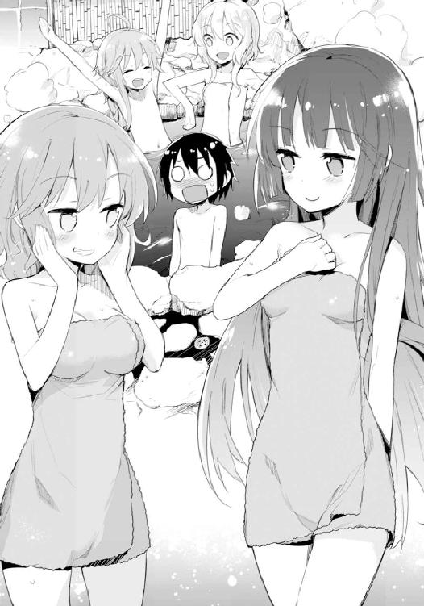

| @HOME(3) 長男と長女を巡る喧噪。 (電撃文庫) | |
| 藤原 祐 | |
| (2015) | |
本書（電子版）に掲載されているコンテンツ（ソフトウェア／プログラム／データ／情報を含む）の著作権およびその他の権利は、すべて株式会社ＫＡＤＯＫＡＷＡおよび正当な権利を有する第三者に帰属しています。
法律の定めがある場合または権利者の明示的な承諾がある場合を除き、これらのコンテンツを複製・転載、改変・編集、翻案・翻訳、放送・出版、公衆送信（送信可能化を含む）・再配信、販売・頒布、貸与等に使用することはできません。
あの頃の私たちは、どこか人形のようだったと思う。
自らの現状に、ひいては将来に対して悲嘆を抱いていた訳ではない。けれどだからといって希望に満ちているとは言い難い。ただ現在も過去も未来も「こんなものだ」と受け入れて、身に降りかかる不条理を黙ってやり過ごすことを当たり前としていた。プラスでもマイナスでもないニュートラルな無感情──これを『諦観』と世間一般で呼ぶことは後になって知った。諦めて観る、とは的確な形容だと思う。
つまり、諦めていたのだ。そして、他人事のように観ていたのだ。自分の人生を。
私は身寄りのない孤児だった。
そして、そういう子供たちを集めた施設で暮らしていた。
施設にいる者たちには個別の理由があった。家族全員と死に別れてしまった者もいたし、産みの親に捨てられた者もいた。生家が困窮していて泣く泣く預けられたという者もいた。
私はといえば、実は自分の事情をよく知らない。物心ついた時にはもうこの施設にいたし、物心ついた時からいたが故、出自に疑問も抱かなかったからだ。大きな部屋で布団を並べて寝起きすることも、施設の『先生』を親代わりにして日々を過ごすことも、私にとっては当たり前のことであり、特別なものではなかった。
ただ私自身がそうであっても、周囲の環境は私たちのことを特別な存在として見る。
施設で暮らす孤児。
親のいないかわいそうな子供。
家族のいない、下賤な奴──。
たとえば、五歳の時だった。
近所にある公園で施設の仲間たち何人かと遊んでいたら、同年代の子供の集団がやってきて、顔を見るなり石持て追い出された。
「ここは普通の子が遊ぶ場所なんだぞ、親なしは施設から出てくるな！」
既に私たちは、自分たちが「普通ではない」ことを知っていた。だから黙って受け入れた。悲しくはなかった。親なしと言われたことにもなんとも思わなかった。抵抗しようという気も皆無だった。抵抗してもなにもいいことはない。下手に怪我でもさせようものなら彼らの親から先生のところに苦情がいって、先生が困ってしまうからだった。
たとえば、六歳の時だった。
小学校に入学して初めてできた友達の家へ遊びに行った時、彼女の母親から同情された。
「あの施設の子なんですって？ かわいそうにねぇ」
そうして自分の娘、ひいてはその場にいた私以外の子供たちに続ける。親がいないからって差別なんかせず一緒に遊んであげるのよ、と。
なにがかわいそうなのかはさっぱりわからなかったが、私は反論しなかった。たとえ私が今不幸ではなくとも、このおばさんにしてみれば私の境遇が「かわいそう」なことは恐らく揺るぎない事実であって、訂正を求めても意味がないと思ったのだ。
ちなみに、その時は怪訝な顔をしていたクラスメイトたちが後日、彼女の言葉を切っ掛けにして私へ哀れみの視線を向けるようになったというオチが付くのだけど──私は、それも無理もないことだなと受け入れ、黙っていた。
たとえば、七歳の時だった。
小学校で、着ている服が汚い、と罵られた。
それは同じ施設にいた年上の子が使っていたもののお下がりで、可愛らしいウサギのワッペンが縫い付けられたワンピースで──私の名前にちなんで縫い付けてくれたのか、縫い付けられていたのがウサギだったから私に割り当てられたのかはわからないにせよ──それなりにお気に入りだったから、心中では忸怩たるものがあった。
けれど私は、その誹謗を無言でやり過ごした。確かに多少着古されてはいたものの別に薄汚れているでもないし、同様に兄弟からのお下がりを着ている子なんて山ほどいる。つまりこうした文句はただの言い掛かり、からかう口実でしかないと理解していたからだ。
文句を言ったり怒ったり泣いたりすれば、喜ばれるだけ。無言で悲しげな顔をして、彼らのちっぽけな嗜虐心を半分ほど満たしてやればいい。あとは投げかけられる言葉を聞かないふりしておけばそれで終わり。どのみち、仕方ないことなのだから。
これらの諦観は奇妙なことに、端からは美点に見えたようだ。
つまり私は「物静かで我慢強い、いい子」という評価を与えられていた。
不条理な目に遭っても怒ったり泣いたりせず、じっと堪え忍び、不幸な境遇に不満を露わにしない──実際はただ諦めていただけであるにも拘わらず、大人たちは私を褒めた。
まったくもって見当違いなことである。
何故ならあの頃、あの施設にいた子供たちは誰しも、程度の差こそあれ私と同種の諦観を持っていたのだから。物静かで我慢強いのは私だけではなかった。ただ単に、私が特別飛び抜けてそう見えただけのことだ。
みんなが身を守るために固い殻を作ってやり過ごしていた。泣いたり怒ったりするだけ損、面倒くさい、時間の無駄。そんなふうに断じて諦め、まるで人形のように振る舞っていた。世界にケンカを売ることを避けて、やり過ごしていた。
違ったのは、ただひとり。
そう──そうなのだ。
たったひとりだけ──あの施設で暮らす子供の中でただひとり、私たちと違った子がいた。
つまりは、諦めていない子が。
五歳のあの時、彼は私たちと一緒に公園にいた。
「ここは普通の子が遊ぶ場所なんだぞ、施設の親なしは施設から出てくるな！」
そう叫んで石を投げてきた子供たちを睨み付け、牙を剝いて飛びかかり、五対一で盛大に取っ組み合いを繰り広げたのだ。黙って去ろうとしていた私たちにはいい迷惑だった。誰もが仕方ないことと思っていたのに、彼は勝手に空気も読まずに激昂したのだから。
結局、先生にも迷惑がかかった。怪我をさせた子供たちのところへ謝りに行ったと聞く。
当の本人はあちこちに生傷を作って、殴られた目を腫らしていたからいい気味だと思った。私たちは厳しくも優しかった先生のことが好きだったから。むしろ、先生がその男の子をそれほど叱らなかったことに不満すら覚えたものだ。
六歳のあの時、さすがに彼はいなかったけれど、後日、私がつい口を滑らせて友人宅での詳細を喋ってしまい大変なことになった。
そのババアをぶん殴りに行ってやる、と息巻いて施設を飛び出そうとしたのだ。
私は必死で止めた。あなたがそんなことしてもなんにもならない。むしろ私の立場が悪くなる。なんでそんな簡単なことがわからないの、と。
理解できなかった。自分のことでもないのにやたらと怒って、エネルギーを消費してどうするのだ。確か私はとうとう泣きだした記憶がある。やめてよ、行かないでよ、と。彼は私の涙を見てようやく諦めた。気まずそうに俯き、唇を咬んで。
最も酷かったのは、七歳の時だ。
彼は一学年上だったが、たまたま廊下で、からかわれている私の姿を目撃したのだ。
まるでそれが当然のことのように復讐は行われた。中傷してきたのが男の子だったので遠慮なく小突き、泣かせてしまった。だが厄介なことにその子には六年生の兄が、それも粋がっている類の奴がいて──結果、彼は五歳の時と同じように集団で囲まれて殴る蹴るの暴行を受け、腕の骨を折る大怪我を負う。
この事件で、私の怒りはとうとう飽和した。
ギプスを着けて病院から帰ってきた彼に、怒鳴りつけた。
ふざけるな、今度という今度は許さない、何度めだと思ってるんだ、あの時もあの時もあの時も──覚えている限りの彼の狼藉を思い出す先から口に出し、まくしたてる。
実際、大小を含めたらこうしたいざこざは十や二十どころではなかったし、施設の子たちですら彼を厄介がっていたくらいなのだ。彼と私の付き合いは長く、物心ついたときから一緒だったから、苛立ちもひとしおだった。
あなたのせいで、私は迷惑している。
先生だって、どれほど彼のせいで頭を下げる羽目になったかしれない。
私が耐えさえすれば、黙ってやり過ごしていればそれで済む話なのに、どうしてあなたはいつもいつも無遠慮にしゃしゃり出てきて引っかき回し、話をややこしくするのか。これでは私の努力がまるで無駄ではないか......などなど。
五分ほどは喚いていただろうか。
記憶にある限りの怒りをぶちまけ、とうとう言うことがなくなり、それでも収まらず、だから真っ赤になった顔で息を弾ませながら睨み付けた。
やがて、俯いてそっぽを向いたまま──それは私が機嫌を損ねた時に彼がいつも見せる顔だった──不機嫌そうな唇から、ぽつりと返答がある。
この時のことを私は、きっと一生忘れないだろう。
彼は、言った。
「お前が我慢してることくらい知ってる」
言ってから、こっちを向いた。
真っ直ぐに、問いかけるように、私の顔を──言葉を発した時には視線を逸らしていたくせに、今度はこっちに視線を逸らすことを許さないような目付きで、見据え。
「俺はイヤだ。お前を我慢させてる奴らが、許せない」
と──。
まったく、今考えても失笑ものである。
だって私はその言葉で、ようやく気付いたのだから。
私が唯一、彼の前では『我慢せず』、怒ったり泣いたり喚いたりできていたことを。
彼の乱暴さに対してだけは、仕方ないという諦観を覚えたりしなかったことを。
物心ついたときから今の今までずっと、彼は私の代わりに爆発してくれていたことを。
私がこれまで世界の不条理に負けずに済んでいたのは、彼のお陰であったことを。
そして、私がずっと耐えてきたのを、彼だけが知ってくれていたことを──。
「あ。......あ」
目に涙が溜まっていくのが自分でもわかった。
肩が震える。勝手に唇がわななく。視界がぐにゃぐにゃに歪む。
そして私は、泣いた。
大声で。誰憚ることなく。我慢することなく、泣いた。
彼はそんな私を、気まずそうに見ていた。
笑っているような怒っているような困っているようなよくわからない半端な顔で、落ち着いて泣き止むまでずっと、見てくれていた。
※
とはいえ、三つ子の魂というのは百まで続くものである。
自覚したのは七歳の頃、既に三つから四年も過ぎていたからなおさらだ。
結局今に至るまで、私の根っこにある悪癖──なにをするにしても面倒がりその割に厭なことやつらいことはぎりぎりまで我慢してしまうという性質は、まったく治っていない。
感情が表情に出にくいのも相変わらず。だから親しくない相手には、穏やかな人、みたいな印象を与えてしまうようだ。
そのことを彼に話すと、いつもからかわれてしまう。
「穏やかどころか年々口が悪くなっていくのにな、いや、それは昔からか」なんて。
だから私も言い返すのだ。
「口の悪さはあなたから学んだのよ、高遠くん」と。
「心外だな。俺の口が悪くなったのは、お前が俺に暴力を振るうなって厳命したからだぜ」
「とんだ方向に進化したものだわ。育成のしかたを間違えちゃったのかしら」
「人をポケモンみたいに言うなよ。だったらボールにでも閉じ込めておくか？」
「ボールに閉じ込めても口は塞げないんじゃない？」
こういう回りくどい会話を覚えたのはこの家に来てからだ。私たちもあれから大人になり、随分と成長したとも思う。
それでもやっぱり本質のところは変わらない。
私たちの関係は──七歳の頃、いや、初めて出会った時の記憶すらないほどの昔──既に完成を見ているのだろう。これ以上の改良が必要ないほど、美しく見事に。
だから私の悪癖は治らなくてもいい。
何故なら私の我慢の限界がどこにあるのかは、彼がちゃんと知ってくれているから。
世界の理不尽へ戦いを挑む度胸のない私の代わりに彼が戦ってくれるからこそ、私は家族の中で保護者面をしていられるのだと思う。
０
我が家の末っ子はやたらと運が強い。
ガリガリ君を食べれば十本に一本くらいの割合で当たりを引き当てるし、戯れに一枚だけ買ったスクラッチくじで見事一万円を当選させたりもして、おみくじに至っては中吉より下を見たことがないというくらいだ。
巡り合わせ、とでもいうのだろうか？ 神がかっているほどではないにせよ割と頻繁に思いも寄らない得をする──それが倉須家の三女、倉須耶衣という女の子なのである。
故に我が家では、くじだとか抽選だとかといった類のものはとりあえず彼女にやらせてみるのが常であった。
が、僕は最初その習慣を見てこうも考えていた。ひょっとしたら耶衣ちゃんのくじ運が高く見えるのは、よってたかってきょうだいたちが数を打たせているからなのかもしれない。たまに引くよりもしょっちゅう引く方が当たるのは確かだし、と。
その認識が改まったのは、夏休みを直前に控えた七月下旬、週末のことである。
僕と耶衣ちゃんはふたりで駅前にあるＣＤショップへ来ていた。欲しい新譜の発売日だから買いに行きたいということだったのだけどさすがに幼少の身、繁華街へひとりで送り出すのはどうかということで僕が引率役を買って出たのだ。ちなみにその新譜というのはよくわからないテクノのアナログ盤だった。ＤＪでも目指してるのかこの娘は。閑話休題。
買い物をすると、福引き券をもらった。市の商工会挙げてのキャンペーンだとかで、駅構内の広場に抽選会場が設けられているらしい。券は五百円につき一枚で、二枚で一回。
せっかくだからと喫茶店でお茶などをして端数を揃え、レコードと合わせて四千円──四回分の券を揃え、僕らは会場へ赴く。受付のお姉さんは耶衣ちゃんを見て「あらこんにちは。外れても残念賞でお菓子もらえるからね」などとにこにこしていた。耶衣ちゃんは愛想よく頷くと自分の頭と同じくらいの高さにあるガラガラを、ぎこちなく回す。
テントの背後にある壁に貼り付けられた賞品のお品書きを他人事のように眺めていた僕と、この娘可愛いから飴玉を少しおまけしてあげましょうかしらみたいな顔をした受付の人たちはしかし、三回めの福引きで出てきたこれまでと色の違う玉を見て、
「......へ？」
口を半開きにした。
「これって......」
「あれ、当たったですか？」
緑色の玉を前に、まるでそれが普段通りの日常であるかのように小首を傾げる耶衣ちゃん。
ややあって受付のお姉さんが、長机に置かれていた鐘を手にとって鳴らし始めた。
「当たり！ 当たりー！」
けたたましい音に眉をしかめながら、耶衣ちゃんは背後の僕へ振り返ると、首から提げていたトレードマーク──古めかしいフィルムカメラで素早く僕の顔を撮影し、シャッター音の後でにこりと笑んで言う。
「響兄さまのびっくり顔を撮影できました。ラッキーです」
福引を当てることなんかよりもシャッターチャンスを逃さなかったことの方が大事だと言わんばかりのその様子に、僕はこの娘の運は本当に強いんだなと改めて感心した。
１
ただし耶衣ちゃんの運は、強くはあるけれど完全なものではないらしい。
「......で、これがその景品って訳？」
僕らが帰宅してから。
夕方。
居間のソファに腰掛けたリリィ姉さんは、僕と耶衣ちゃんが差し出した一通の封筒を手に持ちつつ、眉を軽くひそめていた。
「耶衣、あんたにしては運が悪かったわね」
「もお、りぃお姉ちゃん。そんなこと言っちゃダメだよー。せっかく耶衣ちゃんが大当たりを引き寄せてきたんだから！」
後ろから姉に抱きつくようにソファの背もたれへ身体を乗っけた芽々子ちゃんが唇を尖らせる。そんな姉ふたりを順番に見、耶衣ちゃんはまさに彼女たちのように『残念』と『嬉しい』の中間な表情をした。
「運がいいけど、運が悪かったです」
「そうかもな......」
さすがにこれは、僕もまったく同意見だった。
耶衣ちゃんが見事に引き当てた賞品とはつまり、現在リリィ姉さんが手に持っている封筒のことである。
三等賞だ。
特等の全自動洗濯機、一等のノートパソコン、二等の商品券五万円分に続くその中身はしかし──まさに運が悪いというか、幸い中の不幸と言ってもいいかもしれない代物だった。
「どうすればいいですか？ これ......」
残念そうに、家族たちへ問う耶衣ちゃん。
「......ペアの招待券をもらっても、家族みんなが行けないんだったら意味がないのです」
そう。
封筒に入っているのは、隣県にある温泉宿の無料宿泊券。ただし、ペアチケット。
当然ながら七人家族が使うにはまったく足りない。手放しに喜べないのも当然だった。
リリィ姉さんが「そうだ」と閃いたように呟く。
自分の首筋に抱きついている芽々子ちゃんへ視線を遣り、
「ねえ芽々子、あんたちょっと今から街まで行って三等をあと三回当ててらっしゃい。そうすれば人数分足りるわ。せっかく可愛い妹が幸運を引き寄せたんだから、それを後押ししてあげるのが姉の務めってものよ」
無茶振りというかもはや軽い暴力である。
しかし芽々子ちゃんも然る者、
「ダメだよりぃお姉ちゃん。あと三回当てても、八枚じゃなくてペアチケット四組だよ。きっとひとりじゃ使えないね」
「問題ないわよ、減る分には」
「もう、ひとりでペアチケットを使うきょうだいの身にもなってみてよ！ 寂しいじゃん！」
冗談めかしつつリリィ姉さんの首に回した腕に力を込め、
「それに私が三等を三回当てたりしたら、りぃお姉ちゃんは特等でも当ててこなくちゃいけないよ。だって可愛い妹の幸運を後押しするのは姉の務めなんでしょ？」
「あら。あんたひょっとして、自分が可愛い妹だと思ってるの？」
「ええー！ りぃお姉ちゃんは私を可愛い妹だと思ってないの？」
「......言うわね」
ついにはリリィ姉さんに白旗を揚げさせる。
いつの間にやら芽々子ちゃん、すっかりリリィ姉さんに負けない子に育っていた。
──まあそもそも、当たる当たらない以前に三等がそんな何組もあるはずないんだけど。
「しかしほんと、どうするかな」
絨毯に座って難しい顔をしている耶衣ちゃんの頭を撫でつつ、僕は肩を竦めた。
「四等に交換してくれないか頼んでみたんだけど、ダメだったんだよね」
そっちは図書カード五千円分だった。あれなら耶衣ちゃんが有効に使えただろうに、もう少し融通を利かせてくれてもいいではないか。
困ったことである。
せっかく福引で当たりを出したというのに手放しで喜べないなんて。賞品はともかく、耶衣ちゃんに困った顔をさせているのがつらい。
......などと考えていた僕らだったが、
「おや、なんだいこれは？」
声があって、不意にリリィ姉さんの手から封筒が抜き取られる。まるで掏摸のような鮮やかさとさりげなさ。
高遠兄さんだった。
「賞品、三等？ ふむ」
封筒を奪ったのも然ることながら、いつ居間へ入ってきたのか誰も気付かなかった。
「温泉旅館の宿泊券じゃないか」
中身を開けて券を確認し、場の空気を無視して薄笑いを浮かべる。
「当てたのは耶衣かい？ 毎度のことながらお前は我が家のフォルトゥーナだな。今度、その長い髪をまるごと前に持ってきて結んでもらわなきゃいけないかもな」
冗談めかした言葉に、リリィ姉さんが眉をしかめた。
「高遠、それよく見なさい」
ペア宿泊券であることに気付いていないと思ったのだろう。
喜んでいるところ悪いけれど、と高遠兄さんを諫める。
しかし、こんななりで軽薄な口調であっても、倉須高遠という人はわれらがきょうだいの長兄であり、まとめ役であり、いってみれば保護者代わりの存在なのだ。つまり彼は決して空気や状況が読めていない訳ではなくて──僕は、そしてその場にいたリリィ姉さんと芽々子ちゃんと耶衣ちゃんは、普段すっかり忘れているその事実を思い出すことになる。
耶衣ちゃんの前にしゃがみ込むと、宿泊券を差し出し、
「これは耶衣、お前が......そうだな、稜と一緒に使うといいよ。せっかく当てたんだからちゃんと使わなきゃいけない。運っていうのはな、巡るものなんだ。やってきた幸運は使って逃がす。そうしないと次はやってこない。お前が籤事に強いのは、このルーティンがきょうだいたちの中で一番上手いからさ」
「え、でも」
子供ふたりで旅行なんて──と言いかけた耶衣ちゃんを制しつつ僕らへと振り返ってから、
「温泉旅館っていうのは、別に券がなくても泊まれるものだろう？」
「それってつまり......」
「ああ」
頷き、立ち上がり、金髪を搔き上げ、そうして高遠兄さんは、
「来週からお前たちも夏休みだし、丁度いい。耶衣の幸運に便乗して、みんなで温泉と洒落込もうじゃないか」
うさんくさくも格好いいウインクを、僕らへと送ったのだった。
２
かくして倉須家の七人きょうだいは七月の末週、一泊二日の家族旅行へ赴くことになった。
隣県。海にほど近い、全国的にはそれほど有名ではないにせよこの辺りの地域に住む人間なら誰もが知っている──そんな湯治場である。
さすがに高遠兄さんのＲＶには全員が乗れないので、公共交通機関での移動。電車に揺られて一時間ほどの旅路はちょっとしたピクニック気分だった。市内を過ぎて二十分もすると車内には人もまばらとなり、窓から見えるのは海岸線と田舎の風景。礼莵姉さんが用意してくれたお弁当などを食べつつ、目的地の駅へと着くのはあっという間だった。
駅に降り立つと硫黄の微かなにおいが鼻をつく。観光地然とした街並みと浴衣姿で歩く通行人たちは、まさに温泉街の雰囲気である。
ただ、
「......あらまあ、なんだか閑散としてるわね」
改札を抜けると同時、大通りを睥睨して遠慮のない感想を口にしたのは礼莵姉さんだ。大きめのトートバッグを担いでいるので肩を竦められないのが残念とばかりに、やれやれと溜息を吐く。
「確かにそうだね」
正直なところ、事実だった。
温泉街そのものは決して悪くない。建物は古いが風情のうちだし春や秋などは人でごった返すと聞いている。閑散としているのはつまり、今がここのオフシーズンであるからだろう。
なにせ休みの時期とはいえ夏の盛りの温泉街、しかも避暑地でも北国でもないのである。
ちらほらと行き交う湯治客たちもお爺さんお婆さんばかりで、若い人たちは殆ど見当たらなかった。僕らみたいな家族連れも皆無。当然かもしれない。子供がこの季節に浸かりたがるのは温泉じゃなくてプールの方だ。
「ちゃっかりとシーズン外してる辺りが世知辛いというかせせこましいというか。せめて夏の旅行ならハワイくらい用意すればいいのにね」
礼莵姉さんに追従したリリィ姉さんを、
「おいおい、せっかく耶衣が当ててくれたんだ。文句を言っちゃいけないよ」
温泉街に似合っているんだか場違いなんだかよくわからないいつものアロハ姿で、高遠兄さんが諫める。
「は？ いつ私が耶衣の賞品に文句を言ったっていうの？ 耶衣が当てたペアチケットは耶衣本人と稜が使ってるんじゃない。私を含めた他のみんなはあんたの引率で来てるんだから、つまりこれはあんたに言ってるのよ高遠」
「ふふ、そうねえ。高遠くんもせめてみんなをハワイに連れて行けるくらいの甲斐性があればよかったのにね」
長女と次女に優しげな顔で手厳しいことを言われ、やれやれとばかりにかけていたサングラスを指先で直すわれらが長兄。
「......うちの女性陣はまったく手厳しいな」
と、芽々子ちゃんが高遠兄さんの肩をばしばし叩いた。
「大丈夫だよ、たぁお兄ちゃん！ どこだろうと家族みんなで来たんだったら、そこは私にとってのハワイです！ ひゃっほう！」
ぴょんぴょん飛び上がって喜んでいる......って、これは慰めているのではなくて、単に旅行でテンション高いだけなんじゃなかろうか。
末のふたりである稜くんと耶衣ちゃんはといえばそんな遣り取りをする兄と姉たちを完全に放置して、知らない土地を満喫していた。
通りの奥へと勝手に進み、道端に自然石を掘って作られた手水場のようなオブジェ──飲み湯だ──を発見し、
「おい耶衣、見ろよこれ。お湯が出てる」
「柄杓も置いてあるです。飲むんですか？」
「そうみたいだなー。健康にいいらしいぞ」
「それは凄いです」
「お、一杯いっとく？ 汲んでやるよ。ほら」
「ありがとうです。いただきます」
「......、どうだ？」
「むー......炭酸のミネラルウォーターから炭酸を抜いて代わりに金属のスプーンを溶かしたような味です。美味しくないです」
「砂糖とか入れれば美味くなるかもよ」
「たぶんダメです」
「砂糖でもダメかー。砂糖は無敵なのになー」
「砂糖も陥落の不味さです」
「健康によくても不味くちゃなあ」
「そうですね」
「コーラ飲みたいな。健康によくないけど」
「飲みたいです」
などと不思議な感じの会話を交わしている。
このふたりは普段から一緒にいる時間が多いせいか、今みたいに独自の世界に没頭することがある。僕は高遠兄さんたちに「そろそろ行こうよ」と呼びかけつつ、さっさと先に進みつつある稜くんたちを指差した。
「なあ、ここがハワイだろうとオフシーズンの温泉街だろうと、末っ子ふたりに引率されてたら兄も姉も面目がないんじゃないかな？」
僕の言葉に全員は荷物を抱え直し、ようやく大通りを進み始める。そうして高遠兄さんが携帯電話で宿の住所を確認しつつ──通りを歩いて五分ほど。目的の宿はこの辺りで一番大きそうな和風の建物だった。
出迎えてくれた女将さんは落ち着いた感じの老婦人。ホールの奥にある土産屋がいかにもな感じ。部屋は男女でふたつに別れていたが、仕切りは襖だけなので食事などは一緒に摂ることができるらしい。
......でもってその襖。
荷物を置く間もないほど早々に、芽々子ちゃんによって開け放たれた。
ばばーん、という効果音がしそうな登場と同時に上気した様子でまくしたてる。
「さあみんな、なにしよっか！ ご飯までまだ時間あるよね！ トランプする？ それともウノ？ さっそく温泉入ったりする？ あ、お菓子あるよお菓子っ」
やっぱテンション高いなこの娘！
部屋に備え付けのお茶菓子かと思いきや、手にしているのはポッキーだのポテトチップスだの。持ち込んだらしい。
呆気に取られた男三人──今回稜くんは男性側に割り振られた──がぽかんとし、
「......あんた少し落ち着きなさい。着いたばっかりでそれだと、のぼせて鼻血とか出すわよ」
リリィ姉さんが心底呆れていた。
「うう、だって......」
項垂れる芽々子ちゃん。
その正面に耶衣ちゃんがそそくさと回って、首から提げたカメラでばしゃりと一枚。
「芽々子姉さまのしょんぼりショットです」
「くっ、そこまでしょんぼりじゃないよ!? ただちょっとたしなめられただけだよ！」
「まあでも、落ち着いた方がいいのは確かだね、芽々子は」
そんなことを言いながらみんなから離れて板間のソファに腰掛け、窓を開けつつ煙草に火を点ける高遠兄さん。普段はみんなに気を遣って庭や換気扇の下でしか吸っていないのだが、この人も旅行先ということで気が緩んでいるのかもしれない。
「だってだって、一泊二日だよ？ 短いよ？ やりたいこといっぱいあるんだもん！」
反論する芽々子ちゃんに、煙をくゆらせつつ笑う。
「いいかい芽々子。オフシーズンの温泉宿っていうのはな、のんびりゆっくりするための場所なんだ。その摂理を曲げちゃあいけない。こういう場所でなにもしないっていうのは、こういう場所でなにかをするよりもずっと大事なことだと思わないか？ ここでしかできないことはつまり、なにもしないことなのさ」
「......珍しい。高遠兄さんがちょっといいことを言ってる」
僕が茶化すと、
「おいおい失礼だな。俺はいつだっていいことしか言わないぜ」
得意げな顔につっこむのは礼莵姉さん。
「高遠くんは確かにそうね。ただし『いいこと』は『いいこと』でも『自分にとって都合のいいこと』だけど。......どうせなにもしたくないんでしょ？ 自分が」
「一年三百六十五日面倒くさがってる奴が言うなよ。のんびりしたいだろ？ お前だって」
「そうねえ」
「もう！ たぁお兄ちゃんもれぇお姉ちゃんも年寄りだ！ 年寄りの発想だ！」
ぷんすかしているわが妹を見かねて、僕は溜息を吐きつつ立ち上がった。
「じゃあ、散歩にでも行ってこようかな。街並みもいかにもな感じで面白いし、観光客向けのお店もあったし。......芽々子ちゃん、一緒に来るかい？」
「うん行く！ やっほう！ ひぃお兄ちゃん大好き！ それに比べて上のふたりときたら、すっかり枯れちゃってさもう！」
僕の腕に抱きつきつつ、高遠兄さんたちを批難する芽々子ちゃん。
彼女が家族に対してこうした遠慮のない文句を言うようになったのはつい最近のことで、だから少し新鮮である。以前ならば目に見えてしょげたり、愛情を確かめるような強引さで無理矢理にでも一緒に遊ぼうとしたはずだ。
芽々子ちゃんの変化に、きょうだいたちはみんなどこか嬉しそうだった。当たり前だ。遠慮などせずに罵倒も愛情も等しく投げつけるのが家族というものなのだから。
「他に来る人は？」
みんなを見回して問うと、
「私はパスよ。気に食わないけど高遠と同意見ね。アテネの哲学者みたいにくだらない無為を楽しもうかしら。甕がないのが残念だわ」
「耶衣はどうする？」
「そう言う稜くんはどうするです？」
「ぼくは旅館の中を見て回りたいなー」
「じゃあ私も一緒に行きます」
三人ともが断ってきた。
「なるほど、了解」
どうやら芽々子ちゃんとふたりでデートということになりそうだった。なら温泉まんじゅうだとかヘンテコなキーホルダーだとか、せっかくだからおごってあげることにしよう。
３
......などという宣言を当の芽々子ちゃんにドヤ顔でしてしまう辺り、僕もまた旅行で気が緩んでいたのかもしれない。
外に出て通りをぶらつくと、僕の予想以上にいろいろなお店があった。
食べ物だけをざっと見ても、こういう場所ではない方がおかしい温泉まんじゅうを始めとして、観光地にありがちなソフトクリームやお煎餅から、果てはホットドッグみたいな不似合いなものまで。それらを片っ端からあれこれと食べたがる芽々子ちゃんに、僕は「大丈夫？ 夕ご飯食べきれなくなるよ？」と遠回しに窘めるというささやかな抵抗しかできなかった。財布は三歩進むごとに軽くなっていき、千円札三枚ほどが消えてからようやく彼女は満足した......遠慮がなくなったのはいいのだけど、いや、なにも言うまい。「なんでも買ってあげるよ」なんて口走った僕が悪い。
さすがにお土産の小物は自分で購入していた。
こっちゃんとゆなっちとみょーりんの三人組に、オコゼだかなんだかの魚を模した謎のキャラクターの携帯ストラップ。魚なのは海が近いからか。まあその隣にあった、観光地でお馴染みの光るガイコツキーホルダーよりはましだろう。
散策を終えて宿に戻ってきたのは午後四時過ぎ。着いたのは三時前くらいだったから、いつの間にか小一時間ほど経っていたようだ。
さっき高遠兄さんが座っていた板間のソファに腰掛けているリリィ姉さんは窓の外を眺めながらぼんやりとしていた。本当に無為に過ごすつもりらしい。稜くんと耶衣ちゃんは館内の探険を既に終えたようで、部屋の隅でトランプなどしている。
「高遠兄さんと礼莵姉さんは？」
上のふたりは部屋にいなかった。
「出掛けたわ。夕食までには戻るそうよ」
すると芽々子ちゃんが頷く。
「そっかー。ここって近いもんね」
なにかに気付いたかのような口調。
「え、近いってなにが？」
発した言葉の意味が僕にはよくわからなかった。それ以上に、彼女の声音には珍しく真面目な色があったのも妙である。
僕が思わず尋くと、リリィ姉さんがきょとんとしてこちらを向き、
「あれ、あんた知らなかったっけ」
「たぁお兄ちゃんもれぇお姉ちゃんも、まだ話してないんじゃない？」
「ああ......まあ確かに、それも当たり前ね。別に改まって告白するようなことでもないから」
「なにそれ、どういうこと？」
ますます訳がわからなくなって首を傾げる。
リリィ姉さんはソファに腰掛けたままの姿勢で、なんでもないように──だからといって決して軽薄な調子ではなく、真摯さのある態度で──言った。
「ここから電車で駅ふたつくらい向こうに、ふたりの育った施設があるのよ」
「施設......？」
思わず僕は鸚鵡返しにする。
「そう。高遠と礼莵は元々孤児で、同じ施設にいたの。そこから一緒に拾われてきたのよ。父さんと母さん......倉須の両親に」
「そうなんだ」
初耳だった。
僕はその情報に、妙な気分になる。
つまりなんというか、少なからず──不安を覚えた、というのが近いかもしれない。
別にショックだった訳ではない。この家にいるきょうだいたちはそもそも、産みの親となんらかの形で離別している。そうでなければここにいない。だから高遠兄さんと礼莵姉さんが孤児だったというのも不思議ではない。
ただ僕は、きょうだいたち各人のそうした事情について、今まで自分から積極的に尋こうとしなかった。知りたい気持ちがないでもなかったが、こっちから詮索するのはなんだか違う気がしたのだ。いずれ必要があればそれぞれが自分から、もしくは誰かが話してくれるし、それでいいと思っていた。
ただ実際に聞かされると、やはり身を固くしてしまう。
しかも不意打ちの形だったからなおさら。
「ついでだから、施設の職員だかのところへ挨拶に行ってくるそうよ」
僕の感情に気付いているのかいないのか、リリィ姉さんは表情を変えずに説明を続けた。
でもその情報は僕の肩から力を抜けさせる。
挨拶に行ったというのはつまり、少なくとも施設と険悪な関係にはないことを意味している。だとしたら高遠兄さんも礼莵姉さんも、芽々子ちゃんみたいに過去に囚われている訳でもないのだろう。旅行のついで、なんて軽い気持ちで行けるのがなによりの証拠だ。
「そっか」
僕は頷いた。不安にも似た妙な気分は、もう消え失せていた。
「なにもしたくないって言ってたくせに、ちゃっかり出掛けちゃう辺りが大人だよなー」
畳に寝転がった稜くんが足をばたつかせつつ、茶化すように言う。
「大人はちゃっかりなのですか？」
きょとんして問う耶衣ちゃんに、
「違う違う。あくせくしてるのが大人なんだよ。ま、ぼくらと違って仕事して、それで家支えてくれてんだ。自由になる時間が少ないのもしょーがないさ」
高遠兄さんはなんの仕事をしているのかいまいち不明ではあるんだけど、それでも稜くんの言葉は事実である。
「高遠にいと礼莵ねえがお金出してくれなきゃ、子供だけじゃここに泊まれなかった訳だし。だからぼくらは感謝しつつ、ふたりの代わりにのんびりすればいいのさ」
「はいです」
納得したように頷いた耶衣ちゃんの頭を軽く撫で、稜くんは身体を起こす。
そうして僕へと向き直って、
「ところで響にい、この後予定ある？」
「いや、まったくないけど」
答えると「よし」と立ち上がり伸びをして、部屋の扉を親指でくいくいと差して、言った。
「ご飯まで時間あるし、温泉入ろうぜ温泉！」
４
旅館には大浴場が男女ひとつずつと、それよりは少し小さな規模の家族風呂が幾つかあった。
そのうちのひとつを高遠兄さんは事前に借りてくれたらしい。つまりそこは明日のチェックアウトまで僕ら家族専用の、好きに使っていい温泉となっているのだった。
『金木犀』と書かれた木の札が入り口に掛けられている。部屋の名前だろう。僕と稜くんはふたりで、夕食前の温泉に浸かることとなった。
男ふたりきりで遠慮なく──そう言いたいところだったが、僕はどうにも据わりが悪い。何故なら稜くんはいつもの通り、どこからどう見ても女の子としか思えない服装だったからだ。
ゆるっとしたＴシャツに、ふわっとしたフレアのロングスカート。どちらも可愛らしい感じのレースが所々にあしらわれている。ついでに言うなら髪の毛も女の子っぽいボブカットだし顔立ちだって男にはまったく見えず、だからなんだか、女の子と混浴するんじゃないかという錯覚に妙な緊張をしてしまうのだった。
実際、廊下から脱衣所へ入る時には誰も見てやしないだろうなと思わず周囲を見渡してしまったくらいである。
稜くんがヘアピンを外したりなどしている間にさっさと裸になった僕は、先に浴室へ入ることにした。弟がスカートを脱いでいる姿を見るのは正直気が引けるというか気乗りしない。
家族風呂はなかなか豪華だった。
床も浴槽も石造り。屋内の内湯に加えて、ガラス戸を開けた先には外湯の露天風呂。竹の囲いの向こうが外庭になっているらしく、水音に混じって草木が風に揺られる気配がする。
お湯は褐色に濁った感じで、鉄錆みたいなにおいがする。いかにも身体によさそうだ。来る途中にあった飲み湯と同じ泉質だろう。
洗い場で軽く掛かり湯を打つ。
まずは内湯の湯船に浸かろうとしたところで、稜くんも遅れて入ってきた。
「うわ、色すごいなー」
という感心したような声に思わず視線を向け、
「って......ちょっと待った、稜くん」
僕は思わず、頭を抱えそうになった。
「えっと......なんできみはバスタオルを胸の高さで巻いてるのかな？」
照れればいいのか呆れればいいのか、自分でもちょっといろいろよくわからない。
稜くんはあっけらかんと返答をした。
「ああ、家族風呂はタオル浸けても大丈夫なんだってさ。脱衣所に書いてたよ？」
「問題はそこじゃねえよ！」
「なに、ぼくの裸見たいの？」
何故かにやにやと、妙に小悪魔的な笑み。
やばい、女の子みたいだというか女の子にしか見えないから困る。
「......あの響にい、冗談なんだけど、無言で考え込まれるとちょっと」
「違うよ！ 考え込んでるんじゃなくて途方に暮れてるんだよ！ ......てか、自分の弟が妹みたいな雰囲気で温泉に入ろうとしてるのを見た兄の気持ちにもなってくれ」
「そんな弟イヤだなあ」
「お前のことだよ！ 他人事みたいに言いやがった！」
あはは、と笑いつつ洗い場に座り、
「ま、別にタオルうっちゃって全裸になってもいいんだけどさー。響にい、それはそれで困るだろ？ ぼくも普段あっちの格好だから、こっちの方がしっくりくるんだ」
蛇口からお湯を出して身体を流し始める。
──まあ確かに、言われてみればそうかもしれない。
この違和感は稜くんの実際の性別と視覚情報とのギャップによって生じているのだから、むしろ今のようにタオルで胸まで隠してくれていた方が困惑は少ない。「頭ではわかってるんだけど女の子にしか見えません」という状態でタオルを取った平らな胸なんか見せられた日には、下手をすると本当にどぎまぎしかねない。
「うわ、水道からも錆っぽい温泉出てくるよ。これ髪の毛洗えないなたぶん......ごわごわになっちゃいそう」
「一晩だし、髪の毛は諦めたら？」
「あ、でも、そっちに水の出てくる水道あるみたい。どうしても我慢できなかったらあれで洗うよ。夏だしまあいいや」
などと会話をしつつ、身体を流し終えた稜くんも湯船に入ってきた。温泉が濁っているお陰で肩まで浸かると性別をそこまで意識せずに済む。
まあ、あくまでも比較的に、だけど。
お湯に身体を沈め、熱さにぼへえとしながら会話を交わす。
「でも、髪洗えないけど気持ちいいねこれ。身体によさそう。神経痛とか」
「いやいや、中学生が神経痛を気にしてどうするんだよ」
「肌とかにもいいんじゃないかなー。すべすべになるかも」
「稜くんはともかく、僕はそっちにあまり興味はないな......疲労回復とかそういうのの方が気になるや。最近夏ばて気味だし。外の壁に効能書いてたりした？」
「いや見てない。でも疲労が回復しない温泉って存在するの？」
「たぶん存在しないね......」
ははは、と笑い合ってから、稜くんがその流れのまま、ぽつりと問うてきた。
「......なあ、響にいはさ。ぼくがこんななの、イヤだったりしない？」
さりげなさの中に少しだけ深刻な色の混じった、つまり平静を装って内心では怖ず怖ずとしているような──こっちの感情を窺うような声であり、顔だった。
だから僕は答える。
というよりも、問い返す。
「稜くんには、僕が稜くんのこと嫌がってるように見えるかい？ まあ確かに、困惑する時もあるけどさ......それは単にまだちょっと慣れないだけだよ。なにせ春先までの我が人生において、稜くんはいなかった訳だから」
稜くんみたいなの、とは敢えて言わなかった。
「リリィ姉さんや芽々子ちゃんに対しても同じ感じだな。きみが弟だか妹だかわからないストレンジなアイデンティティを持っているのと同じように、僕からしてみればあのふたりもとんでもなくストレンジな性格なんだ。だからそれに戸惑うことも困ることも、正直今でもある。でも、イヤだと思ったら僕はここにいないし、一緒に温泉にも浸からないだろ」
稜くんが何故いつも女の子の格好をしているのか、それは気にならない訳じゃない。
でも、自分からは詮索しないと決めていた。
機会が来れば稜くん本人から、もしくは他の誰かが話してくれるだろう。重い事情かもしれないし拍子抜けするほどくだらない理由かもしれない。どっちでもいい。どっちだろうと、腰を据えて聞く準備はできているのだから。
「そっか」
稜くんは俯き加減にそっぽを向いた。
その仕草は照れる女の子みたいだけど、同時にやんちゃな男の子のようでもある。
だから僕は頰を緩め、そろそろ外湯にでも行ってみようかと誘おうとして、
「......ん？」
脱衣所へ繫がるガラス戸が、がらり、と開いた音にきょとんとした。
中に入ってくる者がある。湯煙でよく見えない──などということは幸か不幸かなく、その人影が誰であるかはっきりと理解できた。
「けっこう広いねっ！」
「あら、それなりに風情があるじゃないの」
「わーいです！」
「走っては駄目よ、耶衣。あんたは今裸足なのよ。金の出る下駄なんか履いてないんだから、滑って転んでもなんの得もしないわ」
「そうだよ耶衣ちゃん！ 金が出てくるのはいいけど、もし背が低くなったら困るよっ、なにせ成長期なんだから！」
仮に湯煙が立ちこめていても、その声と頓狂な会話の内容は、他の誰でもあり得ない。
「な、なななななななななななああっ!?」
僕は思わず湯船の中で後退し、酸欠の金魚に声帯があったらこんな感じなのだろうというような声をあげる。
「ねえ先客ふたり、湯加減はどう？」
「わあ、露天もあるよ！」

ふたりとも一応、バスタオルを巻いている。
だけど、すらりと伸びたリリィ姉さんの白い手脚と、タオルのせいで余計に寄せられている芽々子ちゃんの胸は──びっくりするとかそういうレベルじゃない。顔を熱くしながら血の気が引くという器用な状態に僕を陥らせた。
「あ、あの、ちょっと、おふたりさん......？」
「おい耶衣、まずは掛かり湯で身体流してからだ。あと髪もちゃんとまとめとかないと、ごわごわになるぞ。やってあげるから来い」
稜くんは「女性陣が入ってきましたけどそれがどうかしましたか」みたいな顔をして湯から上がり、はしゃいでそのままお湯に浸かろうとしていた耶衣ちゃんへと歩み寄っていく。
ちなみにその耶衣ちゃん、タオルなど着用せず一糸まとわぬ姿だった。もともとが年齢に比して小柄で幼児っぽいので別に気にはならないけど小学六年生という年齢を考えるとさすがによくないんじゃないかこの子も......。
「なによ響、私は湯加減を尋いてるんだからさっさと答えなさい」
「うわっ、いかにも温泉って色だね！ 床にも成分付着してるし、すごい！」
「だからなんで入ってきてんだよきみらは！ タオル巻けばいいとか思ってんのか！」
思わず怒鳴る。が、
「あ、大丈夫だよ、ひぃお兄ちゃん！ 家族風呂はねー、タオル着けたまま入ってもオーケーなんだって。さすが貸し切りだねっ」
「だから問題はそこじゃねえよ！ ていうかなんで稜くんと同じこと言ってんだよ！」
「あら、もしかしてあんた、私たちの裸見たかったの？」
「それもかぶってんよ！ もう稜くんで通った道だよ！ そして見たい訳ないだろ！」
「あらそれはそれで失礼ね」
リリィ姉さんはさっさと掛け湯を済ませ、遠慮も躊躇もなく湯船に入ってくる。芽々子ちゃんもそれに続いて、まるで飛び込むようにざんぶと身体を投入。さすがに五人全員は同じ湯船へ浸かれず、稜くんと耶衣ちゃんは露天風呂へと行ってしまった。
かくして、きょうだい三人が仲良く並んでの入浴。
それほどゆったりした広さではないせいでたまに腕など触れてしまうのが気まずい。
──なんだこれ。
家族ってこういうものなのか？
いや違うだろ絶対おかしい。
確か以前、クラスメイトの幹也くんたちと、きょうだいの間にも年頃になれば距離感があるとかそんな話をしたはずで──ごめん幹也くん小梅さん。うちのきょうだいたちはそういう距離感を測る巻き尺がちょっと壊れていたみたいです。
「そんな照れてどうすんのよ、あんた。海で泳ぐのとたいして変わらないわ」
言われてみれば正しいような気がしてくるけどもっとよく考えてみれば明らかに間違っていることをでもあまりに堂々と口にするからやっぱり正しいんじゃなかろうかという気にこっちをさせてくるリリィ姉さんと、
「水着とか下着より露出少ないしね！」
下着姿で踊り狂っているのを見られた時にはこの世の終わりみたいに悶絶していたくせにタオル一枚で温泉は平気らしい芽々子ちゃん。
ふたりに囲まれ、僕はさっきまでの狼狽を超え、諦めの境地へ達しつつあった。
もう仕方ない。
海とかプールだと思おう。
幸いお湯は不透明だし......。
「ところであんた、顔色凄いわよ？ のぼせてるんじゃないの」
「あんたらのせいだよ......」
それでもやっぱり頰の熱さだけはいかんともしがたく、僕はその後、わずか五分ほどで身体も心もギブアップし、ひとり先にお湯から上がったのだった。
５
お湯から上がって部屋に戻ると、既に高遠兄さんと礼莵姉さんが帰ってきていた。
ふたりにさっきの惨状を訴えつつ、でもあまり取り合ってもらえなかったりしつつ、やがて他の面子もお風呂から上がってきて、そうこうしているうちに夕食の時間となる。
仲居さんの手によって持ち込まれたお膳は、近くにある海で獲れた魚を中心とした豪勢なもので、ちょっとびっくりするくらい美味しかった。夏のこの季節、スズキとかカワハギだとかが旬だそうだ。
一泊二日の旅行ともなると、残念ながらそれほど羽を伸ばすという感じにはいかない。
夕食を終えてからもう一回温泉に入り──さすがに七人は家族風呂でも定員オーバーだったので、男女別での入浴だったから助かった──あとはだらだらとお喋りやゲームなどをしていると、時間が過ぎるのは早い。
明日はチェックアウトも早いからそろそろ寝ましょうかという話になった。
耶衣ちゃんもいたので年長者だけで夜更かしをする訳にもいかず、夕食を終えてからは就寝までなんだかあっという間である。
そうして、午後十一時。
チェックインした直後に芽々子ちゃんによって開け放たれた襖は、この日初めて閉じられることとなった。タオルを巻いての入浴は平気でも、寝顔を見られるのは我慢がならないらしいのは女心なのか。正直バランスがよくわからない。
女性陣四人と男性陣三人がふたつの部屋に分けられ、僕は高遠兄さんと稜くんと、川の字になって枕を並べる。
ひと筆めに位置取った稜くんは電気を消して数分後、驚くほど早く眠りに落ちた。どうでもいいけど寝息までもが可愛らしいなおい。この子実は、ほんとに付いてないんじゃなかろうか。
僕はといえばふた筆め、つまり真ん中の布団で、なんとなく眠れずにぼんやり天井を見る。
気温のせいなのか、それとも二度も入った温泉がまだ体温を上げているのか。
「......楽しかったかい？ 今日は」
消灯から三十分ほどの後──僕が眠れないのに気付いたのだろう。
左隣の高遠兄さんが暗闇の中、小声でそんなことを問うてきた。
「そうだね。こういうの、悪くない......前の家にいたら、この歳で家族旅行なんて恥ずかしくて行かなかったと思うし」
「思春期の家族に遠慮する必要がないのは、核なし家族のいいところさ。我が家のいいところ、なのかもしれないけどね」
諧謔じみた声音はしかし、一方で僕を案じてくれているかのようだった。
僕はふと思う──ひょっとして高遠兄さんはこの旅行を、耶衣ちゃんのためだけじゃなくて僕のためにも企画してくれたのではないか。
倉須家に来て四カ月ほど経つが、考えてみればこの手のイベントごとは今までなかった。
芽々子ちゃんの誕生日くらいか。でもあれはほんとうにこぢんまりとしたもので、リリィ姉さんがプレゼントを渡して、あとはケーキが夕食と一緒に出て終わり。
両親の死んだ僕のことを考えてしばらくは気遣ってくれていたというと考えすぎかもしれないが、それは置いておいても、今回の旅行には新しい僕を含めた家族の親睦を深めるという目的があったとして不思議ではない。
「あのさ、高遠兄さん」
僕は眠っている稜くんを起こさないように、小さく告げる。
「倉須の家に来て四カ月経って、まあいろいろ慣れはしたんだけど......僕はみんなのことに関して、まだまだ無知なんだなって思った。今日だけでも新しく知ったことは沢山あるよ」
改めて、実感した。
ここに来ることとなったそもそもの原因である耶衣ちゃんの運の強さを始めとして、高遠兄さんと礼莵姉さんの過去についてのこととか、稜くんがこちらの想像以上に女の子としての自分を意識しているところとか、リリィ姉さんたちが肌の露出に関してちょっとずれた倫理観を持っているところとか。
新しく知ったそれらだってただの入り口に過ぎない。温泉にたとえるなら足先を浸けたくらいのところだろう。肩まで身体を沈めて芯から温まったつもりになるには早すぎる。熱いのかぬるいのかもまだわかっていない。
そう──実際、彼ら彼女らに関しては、知らないことの方が多いくらいなのだ。
高遠兄さんは気配だけで微笑した。
「そりゃそうさ。俺たちは生まれた時から一緒だった訳じゃないからね。逆に言うなら俺たちも同じだ。この前の芽々子みたいに......家族みんなが知らなかったこともある」
元々が他人だから。
一緒に過ごしていない過去があれば、知らない一面も必ずある。
「でもな、響」
けれどそれはたぶん、悪いことではない。
「この前、芽々子の過去を掘り起こしたのは他ならないお前なんだ。一番新しいメンバーのお前さ。つまりそれは、過ごした時間の長さなんか関係ないってことじゃないかい？」
「うん。わかってるよ......わかってる」
家族の中で僕だけが出遅れているとか、まだきょうだいとしての関係を築けていないとか、そういうことではないんだ。
「まあ、芽々子ちゃんのことに関して言うなら偶然だよ。ただ単に、いろんな状況がたまたま味方しただけじゃないかな。僕じゃなくてもいずれ誰かが気付いてたはずだし」
そして僕と高遠兄さんは、とりとめのない諧謔的な、回りくどい──それでいてたぶんとても大事な会話を、小声で交わす。
「おいおい響、謙遜しちゃいけない。まさにそれなんだよ......『いろんな状況』だ。この『いろんな状況』ってやつを味方に付けるにはたいそう骨が折れるんだぜ。なにせ耶衣が温泉旅行を引き当てたみたいに、偶然を逃さず、目の前にきたその瞬間にしっかり摑まなくちゃいけないんだから。そのために大事なのは──きょうだいたちに関する偶然がやって来た時、『いろんな状況』が揃った時、咄嗟に手が伸びるくらいの距離に立ててるかどうかだ」
「つまりそれって、家族で一緒に過ごしてる、それ自体が大事だってこと？」
「ああそうさ。こうしてみんなで温泉宿に泊まったり、美味しい食事をしたりね」
布団の中で肩を竦めつつ、僕の兄さんは冗談めかして言う。
「『アビィ・ロード』のＢ面みたいに、未完成の小さな曲たちが寄せ集まって手を繫いで、幸福なメドレーを作るのさ」
「たとえとしては面白いけどさ......あのアルバムの後、バンドは解散したんじゃなかったっけ」
家に来る前はあまり興味のなかったビートルズを、最近はたまに聴いている。話にも少しはついていけるようになった。
「制作当時、メンバーは誰もあれが終わりとは思ってなかったそうだよ。アルバムと解散とは無関係なんだ。そもそも、幸福なひと時をずっと続けることができるかどうかはまた別問題だろ？ なにせ俺たちはバンドじゃなくて家族なんだ。一生続く縁で繫がってるんなら解散なんてできない......お前が芽々子に言ったことだぞ？」
「そうだった」
でも、高遠兄さんの言う通りだろう。
たとえばきょうだいたちに思いも寄らない一面があったとして。もしそれを誰かが見逃してしまっていても、きっと他の誰かがいずれ発見する──僕がたまたま芽々子ちゃんの過去に勘付けたように。
大事なのはみんながみんなのことをちゃんと見ているかどうか。
ちゃんと見ていて、ちゃんと考えていて、ちゃんと想っているかどうか。
僕はきっと、なんとはなしにわかっていたんだと思う。だからこそきょうだいたちの生い立ちや事情について、積極的にあれこれと詮索をしたくなかったのだ。
そう考えるのは自分を過大評価しすぎだろうか？
「僕は得をしてるな」
冗談めかして口にする。
「だって他のきょうだいたちに比べるとまだ全然、みんなのことを知らないんだから。それは偶然があちこちに転がってるってことで、偶然を拾う楽しみが山ほどあるってことだろ？」
中には芽々子ちゃんの時みたいに、他の誰も拾ってない欠片がまだあるかもしれない。
「だから、楽しみだよ」
「そういう考え方ができるのは素敵なことだよ」
高遠兄さんは僕の思考をわかっているのかいないのか、布団に寝転がったまま口調だけで格好を付けた。
話すことを話し終え、僕たちは暗闇の中で目を閉じる。
すると稜くんの子犬みたいな寝息に混じって、襖の向こうから芽々子ちゃんの「これおいしい！」という寝言が聞こえてきて、ふたりで最後にくすりとした。
１
かつてそこは、地域住人から『山の家』という通称で呼ばれていた。
文字通り、小高い山の中腹にある児童養護施設である。
十数人が暮らせる程度の、どこかペンションにも似た外見の建物と広い庭。周辺には家屋もなく、自然に囲まれた静かな環境の中、親のない子供たちが寄り添って暮らしていた。
経営者は壮年の女性だった。
会社の社長だった夫に先立たれ少なくない遺産を受け継ぎ、さて今後どんなふうに人生を過ごそうかと考えた結果、手持ちの別荘を改装して施設を作り法人を立ち上げたのだ。
基本的には子のいない一般家庭へ養子に出すことを前提とした経営方針で、ここで孤児のまま成人を迎えた者はごく少ない。そうして彼女は十五年ほどの期間、様々な事情を持つ子供たちを受け入れ、育て、送り出してきたが──五年前、老齢を理由に施設は閉鎖された。
今ではもう建物にも庭にも、子供たちの遊ぶ声は聞こえない。
高遠と礼莵が『山の家』へ赴くのは、三年振りのことだった。
温泉宿にきょうだいたちを残し、電車で十分と徒歩で五分。周囲の風景は子供の頃に過ごした記憶のものとほとんど変わらない。山への坂道を進めば進むほど、どちらともなしに口数が少なくなっていく。
耶衣が引き当てた優待券の宿泊先がこの近くだったのは、ふたりにとって僥倖だった。近いうちに行かなければならないと思っていた矢先だったのだ。そういう意味で耶衣は、自分だけでなく家族にまでも幸運を招き寄せてくれる娘である。
山道を登っていく。子供の頃は学校帰りの道がつらかったのを思い出す。夏の草いきれは脳裏へ懐かしさを喚起させる。アスファルトを踏む歩幅は自分たちが大人になったことを意識させる。そうして辿り着いた『家』は──当時とさほど変わらない姿でそこにあった。
庭はきちんと手入れされている。建物の外観も古ぼけた様子はない。玄関に備え付けられていたチャイムを鳴らすと、ややあって足音とともにドアが開いた。
「久しぶりだね、おふたりさん」
出てきた女性はふたりの顔を見て気安げに片手を挙げた。
名前を高山莉子。
旧姓、嶋。年齢は高遠のふたつ上。この施設で一緒に育ったかつての仲間である。
「莉子ちゃん、元気そうじゃないか」
「お陰さまでねー」
挨拶する高遠に頷き、建物の中へと促す。
かつて暮らしていた懐かしの家は間取りこそそのままだったが内装が大幅にリフォームされ、ひと家族が生活するための一軒家へと様変わりしている。
「芳紀......旦那さんは？」
「生憎、仕事が休めなくて。あなたたちに会いたかったのにって残念がってたな」
「仕方ないさ。大人になるとなかなか好きには生きられない」
「あら、あんたの口からそんな科白が出るなんて。礼莵ちゃんの躾が行き届いてるみたいだ」
快活に笑う莉子へ、高遠は苦笑した。
「からかわないでくれよ」
「そうよ。躾けても躾けてもなかなか上手く育たなくて困ってるんだから」
礼莵までが追従し、辛辣な一撃を投げてくる。
案内されたのはリビング。以前は子供たちの遊び場だった最も大きな部屋だ。
その隅、揺り椅子に座った老婆がいる。ベランダから差し込む陽光を気持ちよさそうに浴びながら、ふたりの姿にしわくちゃの顔を笑わせた。
「いらっしゃい。よく来たわね」
「ご無沙汰しています、先生」
先生──かつてここが児童養護施設だった頃の経営者であり、十四年前まで高遠と礼莵のことを育ててくれた人だった。
「お出迎えできなくてごめんなさい。足がめっきり悪くなっちゃってねえ」
「大丈夫ですよ。昔と違って悪さする俺たちを追いかけ回す必要はないんだし」
冗談めかしつつ、ふたりは中央のテーブルにあった椅子を摑むと部屋の隅まで持っていき、先生の傍に置いて腰掛ける。三年前よりも更に歳を取ったな、と高遠は思った。
お茶を運んできた莉子が笑う。
「連絡もらってからずっと楽しみにしてたのよ。まあ、時間の許す限りゆっくりしていきなさいな。三年前と違って、嬉しい報告なんだから」
頷き、笑う。
「そうだな」
確かに彼女の言う通りだった。
何故なら──今回ここへ赴いた理由は、三年前と逆。
家族が減ったことを報告するためではなく、家族が増えたことを報告するためなのだから。
２
私を親と思っては駄目、というのが、先生の口癖だった。
それは子供の頃、いかにも寂しい言い付けに感じられたものだ。
親がいないという身の上に対する空虚さを埋めたい孤児の心理を、彼女は敢えて掬い上げなかった。もちろん、愛情がなかった訳では決してない。児童養護施設を経営するに際して彼女が自らに課した、言わばポリシーだったのだろうと思う。
高遠がその真意を理解できたのは実際に倉須家へ引き取られてからだ。
彼女の最終目的は子供たちの親になることではない。子供たちを育てあげ、独り立ちさせることですらない。子供たちを養子に送り出すことだった。つまり、親のいない自分たちに家族を与え、孤児を孤児でなくすのが責務だと考えていたのである。
そのためには施設や自分に対して帰属意識を持たせてはいけない。ここは故郷でも家でもなく一時的に身を寄せている庇であり、帰るべき場所は他のところにあるのだから。
故に先生は徹頭徹尾、『お母さん』ではなく『先生』であろうとし、一緒に暮らす子供たちも『仲間』であり『きょうだい』としては扱わずにいた。
昔、高遠は先生にこう言われたことがある。
──あなたたちはいずれ、家族を見付けて引き取られていく身なの。その時にもし私を親だと思っていたら、喜びではなく悲しみとともにここを去ることになってしまうでしょう？ 私はね、あなたたちに、親を失う経験を二度とさせたくないの──。
例外はここに住んでいる芳紀と莉子の夫婦だけだ。
この施設で育ったふたりは引き取り手が見付からないまま五年前に結婚し、先生のところへ養子に入った。どんな手で先生の信条を曲げさせたのかは高遠もよく知らない。ただ彼女自身、彼らに親を見付けてやれなかったことを悔いている節はある。
もちろん、ふたりが先生の子供になってくれたことは高遠たちにとって救いであった。育ててくれた人を残して自分だけ幸せを謳歌するのはやはり、気が引けるものだ。
施設を閉鎖した今でも先生のスタンスは変わらない。彼女はかつての孤児たちがここへ来ても、決して「お帰りなさい」とは言わず「いらっしゃい」と出迎える。
そして、ここは戻ってくる場所ではないのだから無闇に立ち寄らないように、とも。
冷たくも見える言葉ではあるが、一方で、正しいことなのだろうなと高遠は思う。
この施設で暮らした仲間たちは総勢で五十人ほどになるだろうか。礼莵のように最初から最後まで一緒だった奴もいれば、わずか数カ月の付き合いだった奴もいる。仲の良かった奴もいれば、気の合わなかった奴もいる。今でも友人として付き合いのある奴もいれば、もう二度と会わないであろう奴もいる。決して他人ではないが、だからといって家族と呼ぶには違和感がある。学校のクラスメイトよりは深い関係にせよ、同窓会を行うような間柄でもない。
自分たちが孤児だった過去に縛られるのは、決していいことではない。そして先生もまた──自分たちの人生を孤児だったという過去で縛ることはしたくないと考えている。
だから高遠たちは、彼女の言葉を忠実に守っていた。
ここへ来るのは報告の時だけだ。つまり、今の家族に変化があった時だけ。
倉須家に引き取られてから、来訪はこれで六度目になる。
うち三回は喜びに満ちたもの──家族が増えたという報告のためである。
うち二回は悲しみに満ちたもの──家族を喪ったという報告のためだった。
今回は前者であり、四回め。つまり、
「そう。......ご両親の血縁なのね」
次男である響がやってきたという、喜びの報告だった。
「ええ、面白い奴ですよ」
響のことを先生に語り聞かせながら、高遠は薄く笑う。
先生もまた、三年前に高遠たちが来訪した時とはまったく違う、穏やかな声で頷いてくれている。あの時は報告しにきた自分よりも先生の方がつらそうだった。
「だから七人家族になったんです。今日はその七人で一緒に温泉旅行の真っ最中。たぶん今頃は、響がはしゃぐ芽々子に連れ回されたりなんかしていて、稜と耶衣は連れだって温泉街を探索でもしてる。リリィは宿でのんびり本でも読んでいるだろうな」
「そしてきみたちはこうしてふたりきりでデートって訳？」
少し離れた場所でくつろいでいた莉子が茶化してきた。
「デートに似合うような場所かい？ この『山の家』は」
幼馴染みに肩を竦めて返す。
「そこから見える庭で、莉子ちゃんに無理矢理泥団子を食わされそうになったのを思い出すよ......そういやあの時は礼莵、お前も一緒だったっけな」
「当時から躾けてきた甲斐あって、今じゃ私の作ったものならなんでも食べてくれるわ」
礼莵が悪戯っぽく混ぜっ返してきた。
「いいなあ。うちの旦那は未だにセロリが食べられないんだよ。イヤになっちゃうね」
「確か七つの時だよ。食卓にセロリとベーコンのスープが出て、芳紀は調子に乗って食い過ぎて吐いたんだ。あれ以来じゃなかったっけな」
「そうそう」
昔話に笑い合う高遠たちに、先生は息を深く吐きながら言った。
「なんにせよ、あなたたちが幸せであれば私はそれでいいわ」
しわくちゃの顔に曲がった背中で、それでもなお昔を思い起こさせる、意志の通った声。
立派な人だった、と改めて思い出す。
やんちゃな子供だった高遠は数限りなく叱られたものだが、理不尽に怒られた記憶は一度もない。礼莵も同じだろう。養子となった芳紀と莉子を密かに羨む者も多いと聞く。もちろんそんなことを言うと「今の家が不満なの？」などと心配されるので口には出せないだろうが。
「それにしても......」
傍らに置かれたお茶に口を付けつつ、先生は窓の外に視線を遣り言った。
「ここを卒業していった子たちはたくさんいるけど、あなたたちが一番数奇な道を歩んでいるわ。正直、あなたたちが来るっていう連絡ほどどきりとさせられることはないのよ」
少し困ったような口調に、礼莵が笑う。
「心配させてごめんなさい」
彼女を安堵させようと、努めて明るく。
「でも、私たちは倉須の家に行って後悔したことは一度もありませんよ。家族が増えた時はもちろんですけど、家族が死んでしまった時も......あの三人と出会えたことは、家族になれたことは、私たちにとって過ぎたほどの幸せです。そして、それをくださったのは先生です」
先生は返事をしなかった。
できなかった、のかもしれない。
ただ庭の外を眺めながら、目を細める。
礼莵の言葉は彼女の人生に対しての感謝であり、高遠の気持ちをまったく代弁するものでもあり──たぶん、すべての孤児たちの総意でもあった。
先生は先生であって、親ではない。高遠自身、親といえば思い浮かぶのは倉須夫婦の顔だ。けれど自分たちを倉須夫婦と巡り会わせてくれたのは紛れもなくこの人であるし、倉須夫婦のことを親だと自然に思えるのは、この人の教えがあったこそである。
更に言うのならば、高遠の家族に対する考え方はきっと、この人の影響下にあるのだろう。
「なあ、先生」
ふと問うた。
「先生はどうして、施設を立ち上げたんです？」
つまりは、児童養護施設を始めようと思った理由について。
礼莵が眉をひそめる。背後で莉子がわずかに緊張するのが伝わってくる。
それは、これまで誰もが疑問に思いつつ、けれど誰もが尋けなかったことだったからだ。
高遠は真っ直ぐに先生の目を見た。──さすがに十年近く育ててもらった相手、こちらがふざけ半分でも興味本位でもないことを、すぐにわかってくれたようだ。
「そうね」
少しだけ顔を上げ、揺り椅子に背を預けて小さく軋ませながら、彼女は言った。
「主人を亡くして寂しかった、って気持ちがなかったとは言えないわ。あまり働くこともなく結婚して家に入って、ただ漫然と生きてきたから......なにか世の中の役に立つことをしたかったというのもあるでしょうね。あんまり下世話であなたたちは失望するでしょうけど、税金対策にもなるかしら、って当時は考えてたわ」
「でも、本質的にはどれも違う。ですよね」
高遠の追及にこくりと頷く。
親のない子供たちの面倒を何十年にもわたって見るなんて、娯楽や暇潰しではできない。
夫に先立たれた寂しさを埋めるために孤児たちの人生を背負うなど本末転倒だった。
社会に貢献したいのであれば他に楽な方法は山ほどあるだろう。
税金対策？ それこそ最も莫迦げた話だ。
子供の頃は想像しようもなかったが今ならわかる──あの施設の運営費は、浪費の域を超えていた。行政からの助成金など雀の涙にすらならず、夫の遺産もほぼすべて投じられ、今や彼女の持っているのはこの辺り一帯の土地と、会社のわずかな持ち株のみ。養子である莉子たちは相続税で赤字かもしれない。
私はあなたたちの親ではないのよ、などと突き放すような物言いばかりしていた彼女はその実、半生のすべてを孤児たちに捧げていた。
何故、そんなことをしたのか。何故、そんなことができたのか。
動機はどうあれ、何故、そんなことが続けられたのか──。
「正直言って、私にもよくわからないわ。施設を作った切っ掛けは今言ったみたいに、複数の理由が絡んでる。昔のことだし、忘れちゃった理由もあると思うわ。でも......あなたの尋きたがってることは、そこじゃないわよね。私が何故この施設を続けたのか、よね？」
「ええ、その通りです」
「なら答えはやっぱり、よくわからない、よ」
先生の返答は曖昧だった。
けれどだからこそ、高遠を得心させる──高遠の望んだものだった。
「あなたたちだってそうなんでしょう？ 高遠くん、礼莵さん」
先生は穏やかに笑んで、ふたりの顔を順番に見る。
「どういう基準で家にきょうだいを迎え入れるのか、どうして子供を引き取るのか。それが自分たちでもよくわからないから、私に尋いた。よくわからないということは別におかしくない、よくわからないままでも構わないってことを確信したくて、ね」
「敵わないなあ」
指摘されて、わざとらしく肩を竦めた。
「先生はいつもそうだ。昔っからそうだった。俺なんかのことはお見通しだ」
「『俺なんかのことは』じゃなくて『私たちのことは』よ。高遠くん」
礼莵が苦笑しつつ追従する。
「理由なんて後から幾らでも付けられるわ。でも、どれもしっくりこないのよね」
まさに言う通りだった。
たとえば、響。
自分が彼をきょうだいにしたのは何故だ？ 倉須の血縁だったから、と言われればそうかもしれない。でもそれが理由のすべてかと言われれば、絶対に違うと断言できる。
たとえば、芽々子。
彼女を引き取ってきたのはリリィだが、同情心と義憤からの行動だったと言われればそういう側面もあるだろう。しかし、倉須リリィという存在は、同情心とか義憤とかいった陳腐でくだらない概念で形容できるほど、甘くもなければ愚かでもない。
たとえば、稜。
礼莵があいつをきょうだいに迎え入れた時の感情を、慈善だとか正義感だとかで説明されたとしたら、礼莵は困惑するし高遠は激怒する。
たとえば、耶衣。
稜が彼女を連れてきた時の顔を思い出す。勝手な判断をしたという申し訳なさと、絶対にこいつを見捨てたくないという強い意志が混在した眼。あれを言葉なんかで説明できるか？
そして、たとえば──自分と、礼莵。
倉須の両親は何故、高遠たちを引き取りたいと申し出てきたのか。
施設に山ほどいた子供たちの中で、このふたりを選んだのか。
「世の中をよくしたいとか、かわいそうな子供を救いたいなんて、そんなこと、俺たちは考えちゃいなかった。これっぽっちも思ったことはない」
思わず、誰にともなく独りごちる。
「寂しい自分を慰めるためじゃない。ひとりきりになった子供への同情心でもない。社会に対する義憤なんて持ってない。慈善事業なんて反吐が出る。正義感なんて持ち合わせちゃいない。他の家族に気を遣ったりもしない。でも、絶対にこいつだ、と思った」
「私の場合も、似たようなものよ」
先生が頷いた。自信に満ちた声で、独善的とも思える言葉とともに。
「私は、自分の手に負えると判断した時だけ。私の手伝いで幸せになれる子だって思えた時だけ、ここへ迎え入れることにしてたのよ」
やはりそうだ。先生も自分たちも、根っこの部分は共通しているのだろう。
先生には、この子たちは新しい親を見付けられる子だ、という確信があった。自分はこの子たちの背中を押すことができる、という確信があった。
高遠たちにはそれと同じように、こいつは自分たちの家族になる人だ、という確信があった。
直感、天啓、運命、呼び方はなんでもいい。どうだっていい。
響が芽々子を救ったときの言葉を借りるとするならば、輪っかとでも呼ぼうか。自分たちは輪っかを構成する線の欠片となる素質があったのだ。互いに手を繫いでぐるりと繫がることを望み、いい感じにぐるぐる回ることを望んだのだ。迎え入れる方も入っていく方もそれを理解していたから、だからすんなりと収まった。まるで、元々そこにあるべきだったように。
先生は輪っかの欠片を拾い集めて、別の輪っかに繫ぎ直す仕事をしてくれていたのだろう。
まるで、ホールデン・コールフィールドの夢見たライ麦畑の番人のように。
「そうか。いや......だからこそ、か」
呟きながら椅子に背を預け、深く息を吐く。
これは高遠たちにとって幸せなことであり、同時に必然だったのかもしれない。
何故ならば、十四年前のあの時、ここへふらりとやってきた倉須家の面々──両親とかつての兄である要、そして当時既に倉須家の一員になっていたリリィ──もまた、自分たちの輪っかを構成する欠片を探していた訳で。彼らが何故この『山の家』に来たかといえば、それは先生が誰かの輪っかを構成する子供を集めていたからに他ならない。
先生と高遠たちが根っこの部分で同じだということは、先生と倉須家もまた根っこの部分で同じだったということだ。それに留まらず、おそらくはこの家の子供たちを引き取っていった大人たちもまた、根っこの部分で同じだったということだ。
「ありがとうございます。少し、迷いが晴れました」
顔を上げ、先生の目を見て笑った。
響を引き取ってからこっち、高遠はずっと思い悩んでいた。鋭く見抜いた礼莵には厳しく切って捨てられていたが、それでも胸に澱んだものは残っていた。
自分たちは響を、倉須の家の人たちの代わりみたいに考えているのではないか、と。
そうしていつか彼に、両親の、要の──死んでしまった家族たちの面影を見出すようになってしまったらどうしよう、と。
けれど、先生に会って話をして、思い直した。というよりも、開き直れた。
響が倉須家に馴染めているのは、亡くなった三人の血を受け継いでいるからなどではない。彼が自分たちと同じ輪っかの欠片だからだ。
そしてそれは、彼の出自や血になんの関係もないことである。
根底にあるのは、繫がりたいと思う心。輪っかを構成する線の欠片であろうとすること。
彼が倉須一家と共有しているのは血というよりもむしろ精神であり、同じ精神を持っているというのであれば、高遠たちを含めた家族全員がそれを共有している。
「高遠くん、礼莵さん」
と、先生が小さく揺り椅子を軋ませた。
視線を壁にかけられた時計へと遣り、目を細める。つられて背後を振り返ると、いつの間にかここへ来て二時間ほどが経過していたことに気付く。
まるでこちらの感情を──きょうだいたちへの想いを察したように、彼女は言った。
「そろそろ帰りなさい、あなたたちの家族のところへ。あまり古い場所に長居するものではないわ。......ここに残しているものなんて、あなたたちにはないはずでしょう？」
「ええ、そうですね」
だから高遠は頷き、立ち上がる。礼莵もまた同様に続く。
名残惜しさがない訳ではない。が、同じように感じてくれているはずの先生が、それをおくびにも出さず自分たちの背中を押そうとしているのだ。
ならば応えるのが『山の家』で育った子供の心意気というものだろう。
３
「先生、娘さんと息子さん......莉子さんと芳紀と、達者にね」
部屋の隅に控えた莉子と先生とを、悪戯っぽく諧謔じみた視線で順番に見る。
「確かに俺たちには、ここに残しているものはありません。でも、それは裏を返せば、全部をあの家に持っていくことができたってことなんです。楽しかった思い出も、つらかった記憶も、親のいなかった過去も、それに......先生から頂いた思いも」
すっかり改装された部屋に、かつての面影を覚えながら。
すっかり成長した幼馴染みに、頼もしさを覚えながら。
すっかり年老いた恩人に、一抹の寂寞を覚えながら。
同じ気持ちになったのだろう。礼莵が手をぎゅっと握ってきた。
だから握り返して、高遠は言う。
「俺たちは全部ちゃんと受けとってる。先生からもらったものを胸に、幸せにやってる。だから、もうあとは遠慮なく先生が幸せになって欲しい。俺たちに、先生が幸せに暮らしてるかどうかを心配させないでくれ。思いが残らないように、最後の仕上げをお願いしますよ」
先生は──。
「ばかね」
おっとりと肩を竦め、莉子を一瞥し、それから高遠たちに再び視線を遣って目を細める。
「幸せになって欲しい、だなんて、なにを言ってるの？ 私はずっと幸せだったわよ。あなたたちに出会って、一緒に笑って、泣いて、怒って、食べて、眠って、送り出して......どういう訳かふたりばかり居残ってしまったけれど、それは結果を見れば私が預かった子供ふたりを私に送り出した、ってことで、やっぱり幸せな巡り合わせだった」
かつてと同じ優しい顔で、彼女は笑う。
「私は不幸せだったことなんて一度もないの。きっとこの先も、幸せに決まっているわ」
だから高遠と礼莵も、笑って応えた。
「なるほど、さすがは先生だ。生徒の俺たちも見習うことにしますよ」
０
以前の僕にとって、夏休みというのは比較的静かなシーズンだった。
僕はひとりっ子で、だから必然的に、両親が仕事で出掛けた後の誰もいない家の中で一日を過ごすことになる。友人たちと遊びに出掛けることはあってもさすがに毎日ではないし、彼女なんてものもいなかったから──いや、これは今もなんだけど──とにかく、セミの鳴き声とクーラーの音だけをＢＧＭに、解放感と寂しさの中間な気分で、台所の冷蔵庫にある作り置きの昼ご飯をレンジに突っ込んでチンするみたいな毎日が当たり前だった。
だから、きょうだいのいる家庭にとって夏休みとは騒がしいものだということを知ったのは、倉須家に来てからである。
この家は七人のうち実に五人が学生の身分で、学校が長期休暇に入れば必然、この五人が家の中で暇を持て余すことになる。普通の家庭だときょうだい同士そこまで接触を持たなかったり外出のタイミングが違っていて意外と顔を合わさなかったりするのかもしれないが、その点、うちはあまり普通でない。そもそもきょうだいたち全員が家族との触れ合いを嫌わないどころかむしろ好むタイプだし、七人全員が出掛けていることなども滅多にないからだ。
さすがに朝起きる時間はまちまちだけど、昼ご飯の時間になるとよほどのことがない限りはたたき起こされる。そこからはリリィ姉さんにコンビニへ使い走りさせられたり芽々子ちゃんとゲームをしたり稜くんが気紛れに始めたお菓子作りに参加させられたり耶衣ちゃんの宿題を見てあげたりと、毎日なにかしらのイベントが詰まっていて飽きることがないのだった。
だけど、例外もある。
八月二日から八月七日までの六日間。
普段ならわいわいがやがやどころかわーわーぎゃーぎゃーと騒がしい我が家は──とある事情で、少しだけ静かな日々を過ごすことになるのだった。
１
二階からリビングに下りてきたリリィ姉さんは、小さく肩を竦めながらソファへと身体を投げ出した。いつもの仏頂面からは、呆れたような困ったような怒ったような心配しているような、そんな気配が感じられる。
「どうだった？」
向かいのソファに腰掛けていた僕が問う。
「どうもこうもないわね」
ぞんざいに脚を組み、
「三十七度五分。判断に迷うところだわ」
はあ、と溜息を吐く。
「病院に連れて行くかどうか、ってこと？」
「そうね。二、三日寝てれば治るんじゃないかとは思うけど、当然ながら私は医者じゃないから確実なことは言えないわ。まったく......バカは風邪引かないっていうのに、あの娘いったいどうしてしまったのかしら。論理的に考えると風邪ではないということになるからやっぱり病院に行った方がいいかもしれないわね」
「どういう理屈だよ」
苦笑しつつも、眉をひそめる僕。
リリィ姉さんの冗談に対してではもちろんない。二階で今、三十七度五分の熱を出して伏せっている『風邪を引かないはずのバカ』──つまり、芽々子ちゃんに対してだった。
「当の本人はなにか言ってた？」
「『注射はイヤ』『おじやが食べたい』『モモ缶も食べたい』の三本でお送りしてたわ。来週もまた見てくださいねって感じね」
「三分の二は食べ物絡みかよ......食欲あるってことはそんなにつらくはないのかな」
「甘えてるだけって線もあるわね。そうだとしたらどっちにしても、そこまでつらくはないのかもしれないけれど。もちろん、本人がつらいかどうかと病院に行くべきかどうかはまったくの別問題だわ」
「そりゃそうだ」
芽々子ちゃんの発熱が明らかになったのは、ついさっき。午前十一時頃のことである。
昨夜までは元気だった。
で、いつまで夜更かししていたのかは知らないが昼前になってようやく起きてきたと思ったら「熱があるっぽい」と。リリィ姉さんが熱を測ったり水を飲ませたりなどの世話をひと通りして、さっき下りてきたところという訳だ。
今日は平日で、上のふたり──高遠兄さんと礼莵姉さんは仕事で出かけている。だからしばらくは大人抜きで彼女の面倒を見なければならない。
心配げな顔でカーペットに並んで座る稜くんと耶衣ちゃんも交え、話し合いを始めた。
「さて、どうしたもんかな」
「病院に連れていくなら、早めに決めなきゃならないわね。児玉医院、何時までやってたかしら？ 後で電話してみましょう」
児玉医院とは、徒歩二十分ほどの距離にある倉須家かかりつけの開業医だ。
ちなみに僕はまだ行ったことがない。
「高遠兄さんと礼莵姉さんの帰りを待っていたら間に合わないかも。タクシーかな」
「芽々子姉さま、お注射嫌がってたですか？」
耶衣ちゃんが小首を傾げる。
「食べ物を求めるよりも先に拒否してたわ」
「そうですか。困りものです......」
「耶衣ちゃんは注射嫌いじゃないの？」
「おっきいやつじゃなければへーきですよ」
「芽々子ねえが子供すぎるんだよなー」
ぐりぐりと耶衣ちゃんの頭を撫でながら、呆れた調子で苦笑する稜くん。
「まあ嫌がっても問題ないわ。注射は打ってもらわないからって連れていけば大丈夫よ」
「風邪なら注射打たなくても、薬だけでよさそうだしね」
追従した僕にしかし、リリィ姉さんは、
「あんたなに言ってるの？ 打ってもらうわよ。騙すに決まってるじゃない」
「ストレートに『騙す』ときた！」
容赦も呵責も皆無だった。
「病院行くんなら中途半端じゃなくてきっちりやってもらうのが我が家のポリシーなのよ」
「そうなの？」
稜くんと耶衣ちゃんに視線を向けて問うと、
「ぼくは初耳だけどそうらしいよ」
「耶衣も初耳ですけど、リリィ姉さまが言うならそうらしいです」
そうらしかった。
「......あー、まあ実際、注射の一本でも打ってもらった方が治りは早いよね」
しかしこれ、なんだか病院に連れて行くのは決定事項になったかのような空気だな......。
もちろんその判断は決して間違っていない。床に伏せったままでいるよりは医者にかかった方がいいに決まっているのだ。
「とにかく、ここで悶々としていても芽々子の熱は下がらないわ。あんたたち、よほどの予定でもない限りは働いてもらうわよ」
リリィ姉さんがソファから立ち上がった。
「まずは耶衣と稜。ふたりでコンビニかスーパーかに行って桃缶とサイダー買ってきなさい。ついでに冷えピタとか、必要そうなものがあったら適当に追加」
言いつつ自分の財布から一万円を抜き取り、稜くんに渡す。
「りょーかい」
「はいです」
ふたりは神妙に頷くとお金を受け取った。
でも、冷えピタはわかるけど、
「......サイダー？ なんで？」
「なんでって、熱で伏せってる時には適度に炭酸の抜けたサイダーでしょう」
当たり前のように断言された。
「そうなの？」
先ほどと同じく稜くん耶衣ちゃんに問うと、
「もちろん」
「もちろんです」
今度はふたりにも強く頷かれる。
どうやらこれは本当に、倉須家の間では常識になっているらしい。
しかも『適度に炭酸の抜けた』サイダー。想像するに、糖分と水分を心地よく補給するための、我が家独自の習慣だろう。こんな時になんだけど、ちょっと面白かった。
僕も熱を出したときには与えられるのだろうか。
「響、タクシー呼びなさい。それから芽々子に付き添って児玉医院に行く。いいわね？」
僕は引率役に選ばれた。
「受付のおばさんは芽々子の顔知ってるから。ついでだからあんたも挨拶しときなさい。うちに家族増えたの知ってるはずだし、いずれあんたもお世話になるんだから」
常識的というか世話っぽいというか、まるで母親のような言い方だった。
これはなかなか新鮮である。
高遠兄さんと礼莵姉さんの不在故に『きょうだいの一番上』としてそういうモードになっているのかもしれない。僕が知らなかっただけで、これも彼女の一面という訳か。
などと考えていると、リリィ姉さんは僕たちに背を向けて台所へと歩いていく。
冷蔵庫の横にかかっていたエプロンを颯爽と着けた。
「私はおじやを作っておくから、さっさと行ってきなさい」
サイダーと同様、おかゆじゃなくておじやなのがうちの習慣らしい。......って、おかゆとおじやってどう違うのだろう。雑炊ともまた別なのかな。
そんな疑問が頭を巡るが、ま、帰ってから確かめればいいか。
僕は電話帳でタクシー会社を調べて来てくれるよう頼んでから、二階、芽々子ちゃんの部屋へと向かった。眠れずに携帯をいじっていたのをやめさせつつ、準備するように言う。
「えー......やだなぁ」
注射の件もあって、気乗りしない様子だった。
子供のように布団へ潜り込み「めんどうくさーいー」と言うのを引っ張り出し、病院に行かないと桃缶もおじやも食べさせてもらえないよと、食欲を盾に脅迫する。ごめん。
ちょっと気が咎めた。
誰だって熱が出ている時は布団から出たくない。外出なんてしたら逆にますます悪化するような気すらするものだ。
もちろん、だからといってやめさせる訳にはいかないのだけど。
いったん部屋の外で待ち、準備ができたという声があったので扉を開ける。
芽々子ちゃんはパジャマ姿のままでベッドに腰掛けていた。
熱で顔を赤くしつつ、上目遣いにこっちを見ている──睨んでいるのかこのまま寝かせておいてくれと懇願しているのかよくわからない曖昧な不機嫌さだった。
「着替えなくていいの？」
「タクシーでしょ？ だったらカーディガン羽織ってればもういっかなって......」
「そっか。じゃあ、行くよ。そのタクシーがもう来る頃だ」
促す。
すると、
「......ん」
返事ともつかない声をあげ、何故か両手を広げてこちらへと伸ばしてくる。
「どうしたのさ」
問うた僕に、むくれたまま、
「歩くのやだ。きつい」
「我が侭言うんじゃないよ。たかが玄関までじゃないか。せっかく起きて布団を出るところまでいったんだから、あと少し辛抱しなきゃ」
「やだ」
まるで子供の駄々である。
「やだじゃないだろ」
「やだ」
「......だったらどうするのさ。もうすぐタクシー来るんだぞ？」
呆れ混じりに溜息を吐く。
すると芽々子ちゃんはむくれた顔のまま、伸ばして広げた両手をふるふると振り──唇を尖らせ、言った。
「ひぃお兄ちゃんが連れていって」
「は？」
「下まで連れていって。抱っこで！ お姫さま抱っこで！」
「アホかっ！」
思わずつっこむ。
熱で幼児返りでもしたのかこの子は。
おんぶならまだわかるが、お姫さま抱っこて。今時カップルでもやらないというかお姫さま以外にお姫さま抱っこされてる人を僕は今まで見たことがないぞ。
「ばかなこと言ってないでさっさと立てよ」
「やだ。ひぃお兄ちゃんが抱っこで連れていってくれないなら病院行かないもん」
「病院行かないなら桃缶もおじやもなしだぞ」
「それもやだ！ いいじゃんかー。一度やってもらいたかったんだもん！ こんな機会じゃないとお姫さま抱っことかたぶん誰もしてくれないもん......」
呆れと安堵の入り交じった気分になった。
そんなくだらない我が侭を言うんじゃないよと思いつつ、熱にかこつけてくだらない我が侭を言う程度には元気な様子。
だけどそんな恥ずかしい真似、そもそも僕がしたくない。
「しない」
「やだ」
「しない」
「やだー！ いいじゃん！ 玄関まで！ 玄関まででいいからー！」
が、芽々子ちゃんは足をじたばたさせて首を振る。この調子だと病院に行く前にますます熱が上がりそうだ。タクシーの到着予定時間も差し迫ってきて──僕はついに根負けした。
「玄関までだからな！」
「やった！ ひぃお兄ちゃん大好き！ あとで私の桃缶わけてあげるね！」
「わけてあげるねじゃないよ。買ってくるのは稜くんと耶衣ちゃんだよ......」
溜息を吐きつつも歩み寄り、中腰になる。
「えへへ、わーい！」
芽々子ちゃんが首に両腕を回してきた。だから僕は左腕で彼女の背中を支えながら右腕を膝裏に添え、これほんとにめちゃくちゃ恥ずかしいなおいなどと思いつつ、芽々子ちゃんの熱が伝染ったかのように顔を熱くしながら、
「よ......っ」
腰を上げたところで、
「......っ、く!?」
予想外の重さに、動きが止まった。
そう、重いのだ。
もちろん、芽々子ちゃんが太っているとかではない。僕が非力なのは大いに関係しているし初めてのことでこつが全然摑めていないせいもあるがそれ以前に、
「うわ、やばいかも」
これはどうも、人間を抱える体勢としてはあまり都合のいいものではないらしい。
お姫さま抱っこがお伽話の中でしか普及していない理由を思い知った。おんぶが世の中に普及している理由がよくわかった。
全身を運動モードに切り替えて気合いを入れつつ立ち上がる。持ち上げることはできた。できただけでも褒めてやりたい。
背中を支えている左腕が特につらい。もっと持ちやすいように位置を変えようかと思ったが、胸を鷲摑みする形になりそうだったので却下。逆に、そういうのをまったく気にしなければ普通にいけるのかもしれないけど、どう考えても気にしない訳にはいかない。
芽々子ちゃんは無邪気に「わーい！」とか言っている。
せめて腕に回した僕の首にもっと体重をかけてほしい──と不満を告げる余裕もなく数歩進み、どうにか部屋を出たところで僕の腕の筋肉は限界を迎えた。
「......無理！ これ無理っ！」
芽々子ちゃんの身体を傾けて廊下に立たせる。
身体を離しつつ乳酸が暴れ回っている腕の力を抜く。
「えー、もう？」
「いや僕けっこう頑張ったぞ......」
「まだ玄関どころか一階にも行ってないー！」
「階段を下りるとか完全に自殺行為だ！ だいたい足許も見えないのに、一歩めで踏み外してタクシーどころかふたりで救急車だよ......」
歩いただけでも満足してくれと懇願しつつ、ともあれ部屋からは出た訳だから今更ベッドに戻ってやり直す空気でもない。芽々子ちゃんは不満げだったが、結果的にはよしとしよう。
促して階下へと連れていく。タクシーは既に来ていて、外で待っていた。
リリィ姉さんが台所から出てきて「さっさと行ってきなさい」と見送りの挨拶をする。有無を言わさない口調と態度を前に、さすがにもう我が侭はなかった。
僕は芽々子ちゃんとタクシーに乗車すると、病院で注射を嫌がられたらどうするべきなのだろうかと頭を悩ませながら運転手に行き先を告げたのだった。
２
そして──。
芽々子ちゃんはその後、特に問題なく病院へ行き、かなりごねはしたものの最終的には大人しく注射を打たれ、帰ってきたあとは桃缶とおじやで満足し、夕方以降は適度に炭酸の抜けたサイダーで水分とエネルギーを補充しつつ礼莵姉さんのそつのない看病によって順調に回復を見せた。ちなみにただの夏風邪だった。
回復には三日を要した。
その間、倉須家の面々は大人しく、静かな時を過ごした。家で病人が寝ているから気を遣ったのか、それとも寝ていたのが家族の中でも最も騒がしい芽々子ちゃんであったからなのか、それは判断しかねる。
だけどまあ、とにかく芽々子ちゃんが完全に回復した、その次の日。
八月五日のことである。
３
目を覚ましたのは朝九時前。
夏休みとしては極端に遅くもなければかといって早くもない、そんな時刻だった。ただし朝食を摂るかどうかという一点で見ると実に微妙な時間帯で、だから多少悩みつつも、食卓になにか残っていたら食べておくかな、くらいの気持ちで、僕は階下へと降りた。
ちなみに夏休みであっても倉須家の習慣は変わらない。
朝、出掛ける前に礼莵姉さんが適当な量のおかずを作ってくれて、それを早いもの勝ち。倉須家のきょうだいたちはみんな起き抜けの食欲が野槌もかくやといったくらいに旺盛で、だから遅く起きた者は大概が食事にありつけない。
普段と違うのは、みんなの起床時間だ。
学校がない時期だから学生たちが見事にばらばら。早いのはラジオ体操がある耶衣ちゃんくらいなもの。そういう意味で九時というのは、朝食がまだ残っている可能性が充分に高い。
居間は無人だった。
一階に人の気配がない。台所兼食卓へ行きテーブルを確認する。
残っている朝ご飯はふたり分ほど。
礼莵姉さんと耶衣ちゃんは確実に食べているだろう。高遠兄さんは仕事に行ったり行かなかったりが不定期でよくわからない。芽々子ちゃんは病み上がりだから、もし起きていたら居間にでもいるはず。よって推測するに、高遠兄さんとリリィ姉さんと稜くんのうちひとりかふたりがもう起きていて、出掛けてしまった後か。
そんな計算を無意識にする辺り、僕もこの家に馴染んできたといえる。ちょっと嬉しい。
まずは顔でも洗おうと思い踵を返しかかったところで、ふと違和感に気付いた。
「......あれ」
テーブルの上。
ラップをかけられた朝ご飯に混じって、弁当箱がひとつ置かれている。
包み布の柄を見るに、礼莵姉さんのだ。
「忘れたのかな」
珍しい。
我が家の長女は基本的にめんどくさがり屋でいろいろ億劫がる人ではあるのだけど、やるとなれば几帳面でしっかりした作業が常だ。意識しての手抜きをすることはあっても、無意識で手抜きになってしまうことはほぼないといった感じ。この弁当だって、作るのは億劫ながら作ったからには必ず持っていく──それが礼莵姉さんの性格だった。
どうしたものかと思いつつ、メールを打っておいた。『お弁当忘れてない？』と。
昼も近いので控えめに朝食を摂ってから三十分ほど経つと、メールの着信音があった。
礼莵姉さんからだ。
文面を見て、僕は思わず笑う。
『持ってきてくれたら響ちゃんの来月のお小遣いが少し増えるかもしれない』
──なるほどそうきたか。
時計を見る。九時三十分。
学校へ行って戻ってきても昼ご飯には余裕で間に合うはずだ。
どうせやることもない。僕は小遣い増額の餌に食い付くことにした。
『デリバリーします！』と返信し、しばらく着ていなかった制服に袖を通す。
外に出ると夏真っ盛りなだけあって既にじりじりと暑く、これは帰る頃には地獄を見るかもしれない。安請け合いしたことを早くも後悔したが、ともあれバスに乗車。当然ながら登下校の時とは違い、学生の姿はほとんどない。
夏休み中の学校は、けっこう新鮮だった。
グラウンドには運動部がいるし、三年生の教室では希望者が夏期講習を受けているはずだ。だけど人が少ないことには変わりなく、たまに聞こえてくる部活の声は逆に静寂を引き立てる。わくわくするような怖いような空気があった。
そういえば、リリィ姉さんは今年受験だけど夏期講習を受けているとは聞かない。成績優秀だから必要なしってことかな。
などと考えつつ、昇降口から管理棟へと進む。こちらは平日でも人気がないから普段とあまり変わらない。一階の奥、保健室──礼莵姉さんの職場まで辿り着くと、僕は扉を開けた。
「礼莵ね......じゃなかった、倉須先生。入ります」
学校では『姉』ではなく『保健の先生』として接することにしている。
「あらいらっしゃい。わざわざありがとうね」
デスクに腰掛けて書類仕事のようなことをしていた礼莵姉さんは、パイプ椅子ごとくるりとこちらを向いた。白衣姿がさまになっている。僕ははまだ保健室の世話になったことがないので、この格好は見慣れない。
「今はひとりですか？」
「ええ」
僕が差し出した弁当を受け取りつつ頷く。
「怪我人や病人がいなくても、仕事が減る訳じゃないのが面倒なところだわ。夏はプールの水質検査とかもしなきゃならないし」
保健の先生──いわゆる養護教諭は、けっこうやることが多いらしい。たまに家でも愚痴を言っている。まあ確かに、日がな保健室に待機していて暇を持て余しているみたいなイメージが強いから誤解されやすくはある。
「お茶でも飲んでいきなさいな」
ただそれでも、授業を受け持っている訳ではない分、多少の融通は利くようだ。
礼莵姉さんは僕に椅子を勧め、コーヒーを淹れてくれた。渡されたカップには見覚えがあった。家から持ってきたものっぽいなこれ。
「芽々子ちゃんの調子はどう？」
「うん」
ふたりきりということで気が緩み、僕の倉須先生モードは早くも終わった。
「僕が起きた時にはまだ寝てたから、どうだろう......。でも、昨日の夜はもう普通に元気だったし、きっと大丈夫なんじゃないかな」
「それならよかったわ」
仕事に出ている時以外──つまりは夕方から朝にかけて芽々子ちゃんの世話は礼莵姉さんがしていたのだけど、これがまた見事としか言い様がないものだった。芽々子ちゃんの欲しがりそうなメニューの材料をあらかじめすべて用意しておいて即座に要望に応えたり、サイダーの減りを事前に察知して持っていったり、目が覚めたのを見計らって蒸しタオルと着替えを揃えたりと、まさにかゆいところに手が届くような手際。正直なところ礼莵姉さんに比べると、僕らがあの日やったことはすべて子供だましなんじゃないかと思えてくる。
まあ、その分家族のおかずは手抜きになってたりもしたんだけど。ちなみにそうめんとカレーのローテーションが三日間続いた。
「でも、よくなったのに調子に乗って、夜更かししてぶり返してる可能性もあるわね......そうなったら今度は注射じゃなくて点滴打ってもらおうかしら」
「それ、違いがあるの？」
「ふふ、あの子は注射も嫌いだけど、点滴はもっと嫌いなのよ。今でもたぶん泣いて叫ぶわ。子供の頃にね、終わった後しばらく放置されてたせいで点滴の管に血が逆流しちゃって。それを見てからトラウマになってるみたいなのよ」
くすくすと愉快そうに笑う礼莵姉さん。......顔立ちはとても綺麗なんだけど言葉は残酷というか、ぶっちゃけすごくサドっぽい。リリィ姉さんとはまた違った怖さがあった。
「響ちゃん、お昼までには帰るの？」
「そのつもりだけど」
「そう。だったらついでにもうひとつお願いがあるんだけど、聞いてくれるかしら」
「......、なに？」
僕は一瞬どきりとする。
芽々子ちゃんへの残酷発言の直後だったせいで、なにか恐ろしいことを言いつけられるのではないかと反射的に身構えてしまった。
が、
「私ね、ちょっとサボってお昼寝したいのよ」
杞憂というか──続いた科白は思わず失笑してしまいそうなものだった。
「お昼寝て、まだ午前だよ」
時計を見ると、十時二十分。
「いいの？ 仕事あるんじゃ......」
デスクの上に広げられた書類を一瞥するが、
「別に今日終わらせなくてもいいのよ、そんなもの。明日できることは今日しないっていうのが私の座右の銘だし。だいたい、提出する意味があるかどうかも微妙なくだらない書類なんだから、正直どうだっていいわ」
仮にも教師にあるまじきことを堂々と言ってのける礼莵姉さん。
「という訳で、三十分だけでいいから、私が仮眠取ってる間ここにいてくれない？」
おっとりとした調子で僕にウインクする。
「いいよ」
僕が断れなかったのは、彼女の仕草がグラビアモデルもかくやというほど色っぽかったから──ではない。いや色っぽかったのは確かだけど、さすがに家族の色香に惑わされたりはしない。単に、礼莵姉さんも疲れているんだろうなと思ったからだ。
毎日家事と仕事をこなしているのに、ここ数日は帰ってから芽々子ちゃんの世話にかかりっきり。疲れて当然だろう。
「三十分でいいの？ 僕は一時間くらいなら大丈夫だけど」
気を利かせてみると、
「あら、だったら一時間お願いしようかしら」
遠慮なく乗ってきた。
「じゃあ、一時間後に起こしてくれるかな。もしその間に生徒が来たら、響ちゃんの判断で適当にあしらっておいて」
とは言いつつも、救急箱の場所と中身を使う時の事務処理方法だけは教えてくれた。まあ、僕の手に負えそうにない患者が来たら申し訳ないが目を覚ましてもらおう。
「よろしく」
礼莵姉さんは微笑みながらひらひらと手を振ると、そうしてカーテンの向こうに消える。ごそごそベッドに潜り込む音がして、ややあってすうすうと寝息が聞こえてきた。その間、わずかに五分足らず。寝付き早いなおい。いつもこうなのか、もしくは本当に眠かったのか。
ともあれ、あと五十五分ほど僕はここで暇を潰さなければならない。
まずはリリィ姉さんにメールを打っておく。帰り着くのが正午ぎりぎりになりそうだったからだ。なにも言わずに出てきてしまったので、このままでは留守と判断され僕の分のお昼ご飯が用意してもらえない可能性があった。......まあ、そうなったらなったであり合わせのものを自分でどうにかすればよくはあるんだけど。
夏休みになってから、昼食は基本的に家にいる面子がその都度適当に作っている。
リリィ姉さんは意外なことに料理が上手い。僕は簡単なものならどうにか。稜くんはそれなりで、耶衣ちゃんはまだまだで、芽々子ちゃんは壊滅的。白井沢さんが筑前煮に触らせなかった理由が、何度か一緒にキッチンに立った今ならよくわかる。卵すら割らせたくない。
リリィ姉さんとメールの遣り取りなどしつつ、携帯をちまちまいじりつつ、早くも暇になってきた。こうなることがわかっていたら課題のひとつでも持ってきておいたのに。
などと考えていると、保健室の扉がノックされる。
「失礼します」
がちゃりとドアが開かれた。
中に入ってきたのはもちろん、うちの生徒だ。
が、僕は顔を引き攣らせる。
「む」
相手もまた、僕を見て眉をひそめた。
「どうしてお兄さんがここにいるんですか？」
「いきなりご挨拶だなおい......」
入ってきたのはよりにもよって、芽々子ちゃんの友人にして先だって言い争いをしてしまった相手──曽我優菜である。
ぶっちゃけ、気まずい。
あれから一応謝罪を受けてはいたが、とても友好的な関係とは言い難いのであった。
僕と芽々子ちゃんが遠慮なくいちゃいちゃし始めたのがやっぱり気に入らないらしく、以前ほどではないにせよ、折に触れて出会うと必ず刺々しい態度を取られる。
無論そんなだから、僕の中にある彼女の印象もそんなに変わらない。
ただまあ喧嘩腰になる必要もない訳で。
「きみ、部活入ってたっけ？」
つとめて平静に問う。
「いえ、手芸部の友達に編み物を......」
曽我さんは普通に返事をしかけて言い淀み、
「お兄さんには関係ないじゃないですか」
──こっちの歩み寄りを無視しやがった！
引き攣った顔が固まってしまいそうになるのをどうにか抑え、深呼吸をする。
「今、僕がここの留守を預かってるんだけど。用事があるのはそのお友達かな」
本日二度め、つとめて平静に問う。
「倉須先生はどこにいらっしゃるんですか？」
僕には用件教えたくないってか。
でもこっちも「サボって寝てる」とはちょっと言いづらい。なので、
「今外に出てる。小一時間で戻るよ」
「そうですか」
曽我さんは観念したのか、それとも諦めたのか、ようやく用事を告げた。
「友達が頭痛いって言ってるんです。頭痛薬あります？」
「ああ、はいはい」
それだけのことならいちいちつっかかる必要もないだろうに。
僕は薬箱の中から頭痛薬を出す。
「バファリンしかないっぽいけどいいかな」
それからクリップボードと一緒に書類。
「これにクラスと名前書いて。曽我さんのでいいや。あとで、れ......倉須先生に確認の判子押してもらっておくから」
曽我さんは書類に記入すると、バファリン二錠を受け取る。
たったそれだけのことなのに変に気疲れしてしまった。彼女が来てから五分と経っていないのに、もう三十分くらい過ぎたような錯覚すらある。
まあ、受け取りもつつがなく終わった訳だし、あとはさっさと帰ってもらって──などと考えた、その時だった。
「あん......」
カーテンで仕切られたデスクの横。
つまり、ベッドからやけに艶めかしい声があって、僕と曽我さんの動きを硬直させた。
曽我さんが頰をひくつかせる。
僕への視線が鋭くなる。
これは、あれだ。
以前も見たことがあるぞ。僕と芽々子ちゃんとの仲を疑った時の、男に対する性的な嫌悪感というか「なによいやらしい最低ね」的な侮蔑というか。
「お兄さん、あなた......」
睨まれた。すごい睨まれた。なんで僕を睨んでいるのか。つまりは、こういうことか。
一、倉須先生は留守にしているという僕の言
二、ベッドから聞こえてきた妙に色っぽい声
三、こいつは保健室に女を連れ込んでいる
「いやいやまさかそんな悪意の三段論法は......」
「誰を連れ込んでるんですか？」
「そのまさかだった！」
こいつは男はすべて飢えた狼だとでも思ってるのか。前時代的過ぎじゃないか。今の男はみんな飢えたら草を食ってんだよ草を。
「いや、そういうんじゃないから。実はその、ベッドにいるのは倉須先生......礼莵姉さんで」
「倉須先生!? あなた、やっぱりっ！ めーちゃんじゃなくてお姉さんの方だったの!?」
「ちげえよそっちじゃねえよ！ てかやっぱりってなんだよまだ疑ってたのかお前は！」
思わず声を荒げる。
きょうだい同士の禁断の関係という疑念はさすがに晴れたと思っていたのに。
ああもう面倒だ。
礼莵姉さんには悪いけど全部説明させてもらおう。別にいいよね......。実際本人も普段から、生徒に「面倒だから自分で処置して」とか「寝たいなら勝手に寝なさい」とか好き勝手言ってる訳だし、今更職務怠慢が明らかになったところで。
「ん、んっ......」
僕が口を開こうとすると、再びベッドから声。
今度は悶えるような、さっきよりもいっそう生々しい感じ。僕ですら思わずどきりとしてしまいそうだった。曽我さんはもはや完全に引いた表情で若干こっちから距離を取っていた。
しかし僕は曽我さんへ言い訳をする前に、
「あれ」
その違和感に、気付いた。
さっきから発せられる礼莵姉さんの声。
寝言とか寝息にしては艶っぽい。悶えるような──いや、苦しそうな。
睡眠時にこんな声をあげる癖があっただろうか？ ソファで居眠りしてる姿を何度か見たことがあるが、静かにすーすーと寝息をたてていた記憶がある。
僕は、
「礼莵姉さん、開けるよ」
カーテンをそっと開いた。
白いシーツの下、彼女は仰向けに寝ている。
眼鏡の奥の両目は閉じられたまま、わずかに皺を寄せている。が、それ以前に、眼鏡をかけたまま寝るなんておかしくはないか。外すのを忘れた？ 眠気に抗えず意識を失ったくらいでないと、たぶんあり得ない。
弁当を持っていくのを忘れたこと。
昼寝をしたい、などと言い始めたこと。
そしてさっきの声。
僕の中で次々と根拠が挙がる。
「あの、お兄さん......」
曽我さんも気付いたようだ。だって礼莵姉さんの寝顔は歪んでいて、顔だって赤くて、僕はだから彼女の額に手を遣り、置いたところで。
──ぶうううう、と。
携帯の振動音があった。
ベッドの枕元、上着や財布を入れておく籠の中で震えているそれは、礼莵姉さんのだ。
ディスプレイに表示された名前を確認し、僕は通話ボタンを押した。
「もしもし」
『ん？ ......響か？』
受話器の向こうで怪訝そうな声。
『なんでお前が出てるんだい？』
「ちょっと事情があって......」
『ああ、うん。まあいいさ』
説明しようとしたのを遮って、高遠兄さんは苦笑混じりに言った。
『礼莵、熱出してるだろ？』
「え......」
『今どこだ？ 学校か？』
「うん。僕はたまたま、弁当を届けに来てた」
『そうか。じゃあ、三十分くらいで行く。響、悪いけどきみは礼莵に早退の用意でもさせておいてくれるか？ 寝こけてるだろうから、ちょっと手間かもしれないけど』
「いい......けど」
『頼む。着いたらまた電話する』
通話が切れる。
僕は呆気に取られていた。
高遠兄さんはまるでタイミングを見計らっていたかのようだ。三十分くらいで行く、と言っていた。つまり既に向かう準備を──少なくとも仕事を空けていて、だったら礼莵姉さんが熱を出すのを予想していたということなのだろうか。
「あーと、曽我さん」
「はい」
振り返る。
毒気を抜かれたような顔で生返事だった。
「電話、聞こえてたかどうかわかんないんだけど。まあこういうことで、礼莵姉さん早退するから。頭痛薬の他に用事とかあるかな？」
「いえ、ないです」
ばつを悪くしたのか、それとも誤解が解けてすっきりしたのか。
「どうもありがとうございました。お大事に」
素直に一礼し、曽我さんは踵を返して去っていく。謝罪のひとつでも欲しかったところだけどまあいいや。少なくとも最後の言葉には素直な誠意を感じたし。
なにはともあれ、優先すべきはこっち、だ。
さっきおでこに触った時の感じだとけっこうな熱があった。苦しそうだし、早く病院に連れて行った方がいいだろう。僕は礼莵姉さんの肩を揺すり「大丈夫？」と呼びかけた。
４
早退手続きを終えて校舎を出ると、高遠兄さんが既に学校へ到着していた。
派手な金髪とアロハにサングラス、ごつごつしたネックレスといういつもの格好は、正直学校の敷地内で見ると通報されてもおかしくない。時折通りがかった生徒が「うちのしょぼくれた教頭はやっぱりやばいところに借金していたのか」みたいな顔でおっかなびっくりしているのを颯爽と無視し、われらが倉須家長兄は「よ」と僕らに向かって手を挙げる。
「大丈夫なの？ 入ってきて」
「事務の人には報告してるよ。......しかし、思ったよりもハードだな」
僕の横──というよりも、僕が肩を貸してようやく歩いている礼莵姉さんに、目を細める。
「あ、たかとおくん......」
ぼんやりというか、もはや朦朧とした返事。
正直、ちょっと信じられなかった。
少なくとも保健室のベッドで寝るまで、礼莵姉さんは健康に見えた。弁当を忘れるとかそういうポカをやらかしていたにせよ、まさかここまで酷い状態になるとは。
「こいつは昔からこうなんだよ」
頭をがしがしと搔き、呆れたように言う。
「糸が切れるまで平気な顔をしてるから質が悪い。滅多に病気はしないからあまり問題になることはないけど......今回はまだいい方さ。前回は二年前くらいか。唐突にぶっ倒れた」
愚痴る高遠兄さんを見て、礼莵姉さんはえへへ、と、熱に浮かされたまま笑う。
そうして、
「たかとおくん」
右腕と、それから僕の肩に乗せていた左腕をゆるゆると、広げるように伸ばした。
僕はそれに既視感を覚える。
数日前に見たことのある仕草だった。
けれど、あの時と違うのは。
手を伸ばしたのは芽々子ちゃんではなく、礼莵姉さんで。
やれやれと笑ったのは僕ではなく、高遠兄さんで。
「でもって熱に浮かされると、子供返りする」
高遠兄さんはそんな礼莵姉さんの手を取り、
「そら、姉が弟に寄っかかってたらリリィに叱られるぞ」
軽々と──造作もなく、その身体を。
お姫さま抱っこで持ち上げた。
それはあまりに自然で、気障ったらしさを忘れてしまうようで、僕は見惚れてしまう。
卑怯じゃないか。
瘦せぎすで華奢で、煙草も吸ってて、体力なんて僕以上になさそうなのに。小柄な芽々子ちゃんと違って礼莵姉さんはそれなりに身長もあるのに。車を停めた駐車場までの百メートルほどを、息切れひとつすることないなんて。
通りすがった生徒の何人かが足を止めていた。
さっきの借金取りを見るような目ではない。まるで正反対の、憧れじみた視線だった。
高遠兄さんはＲＶの後部座席に礼莵姉さんを乗せた。僕を助手席に促し、車を発進。
カーステレオから流れてきた音楽のボリュームを聞こえるか聞こえないかくらいのところまで落としつつ、車は学校を出る。
「さてと。病院だな、これは」
そう呟きつつハンドルを握る高遠兄さんはもういつもの──軽薄なチンピラみたいな青年といった感じに戻っていて、さっきまでの光景がまるで夢だったんじゃないかと思えてくる。
「どうしてわかったの？」
だから、尋いた。
「礼莵姉さんの具合が悪いって。朝気付いてたって訳じゃないんだろ？ だったら兄さんは姉さんを出勤させないだろうし」
「ザ・フーの曲にもあるだろう？ 俺は千里の先が見えるのさ」
よくわからない諧謔を前置きに、答える。
「この前の旅行の時にリリィから聞いたと思うけど、俺たちはふたりとも施設で育ったんだ」
ただしそれはとても回りくどく──同時に、不意撃ちのように繰り出されてきた核心だった。
「親の顔を知らないままに施設で暮らしてた。ふたりともね。ずっと一緒に」
「だから察することができた？ 今日辺り具合を悪くしそうだ、って」
「施設ではいつも、里親を募集してた」
まるでひとりごとのように。
まるではぐらかすように。
けれど、僕の求めるものに向かって真っ直ぐに。
「礼莵を引き取りたいって人はいつも、何人もいたよ。昔から可愛らしい女の子だったしね。一方で俺はといえば、これがもう今と違って可愛げのない、捻くれたガキでね」
「......えっと、その『今と違って』は、ガキってところだけにかかるんだよね？」
「おいおい、そいつは心外だな。まあいいさ。とにかく、俺の引き取り手は全然いなかった」
少しの間を空け、ルームミラーを一瞥し、礼莵姉さんが眠っているのを確認し、
「しかし驚いたことに、こいつは頑なに、俺と一緒じゃなきゃイヤだって主張するんだ。高遠くんと一緒じゃないとどこにも行かない、どこの子にもならない、ってね。それでどれだけのチャンスを逃したかしれない。裕福そうな人もいたし優しそうな夫婦もいた。それなのに、こいつは絶対に首を縦に振らなかった。振ってくれなかった」
つまり、でも、だ。
でも、そのお陰で、高遠兄さんは倉須家の子供になれた。礼莵姉さんが断り続けてきたから。ひとりではなくふたりでと主張したから、高遠兄さんは今、ここにいる。
「だから俺は、こいつが熱を出してぶっ倒れる瞬間を絶対に見逃さないんだ。こいつの──どんないい里親を前にしても首を縦に振らないような、機嫌の悪いリリィにすら言うことを聞かせてしまうような、熱に耐えられなくなるまで平静を装うような──そんな頑固さに、ガキの頃からずっと付き合ってきたからね」
「朝には気付いてた、ってことか。......礼莵姉さんの具合が悪いことに」
僕がさっき口にした推測は、間違っていた。高遠兄さんは、とうに承知していたのだ。
承知していてなお、礼莵姉さんを送り出した。
礼莵姉さんの頑固さに付き合うために。
礼莵姉さんの頑固さを認めるために。
礼莵姉さんの選択を、尊重するために。
けれど放置はしない。だから電話をかけてきた。すぐ迎えに行けるように待機もしていた。
「そういえばさ」
僕は素直な感服と、ある種の呆れと、それから一抹の嫉妬を胸に、高遠兄さんに笑う。
「芽々子ちゃんが風邪をひいた時、リリィ姉さんが言ってたよ。バカは風邪ひかないっていうのにどうしてしまったんだ、って」
「そいつは手厳しいな」
「でもさ、バカは風邪ひかないっていう......その返し言葉みたいに、よく言われてるよね」
彼がいつもそうするような諧謔を真似て、
「夏風邪はバカがひく、って」
彼がいつもそうするような、軽薄さを真似て。
「ああ、そうだな」
高遠兄さんは笑った。
「うちの女どもは揃いも揃ってバカばっかりだ。この調子だとリリィも耶衣も、下手したら稜もやるぞ。どこから誰がもらってきたウイルスか知らないけど、伝染らないのはバカじゃない俺たちふたりだけになるかもな」
「うん」
だから、僕も笑った。
「伝染らないようにしとかなくちゃね。世話をかける訳にはいかないし」
なにせ、僕はまだお姫さま抱っこが満足にできないのだ。
だったら、少なくとも。
いつでもサイダーを買いにいけるよう、体調管理をしっかりしておかなければならないよね。
深夜０時を過ぎて、家の中は随分と静かになった。
とはいえ静寂は時刻のせいばかりではない。
今は八月。夏休みの真っ最中で、普段であれば家族の実に七分の五を占める学童連中がまだまだ眠らないぞとばかりにゲームだのお喋りだのでやいのやいのとしている時間帯である。
彼ら彼女らが水を打ったように大人しくなって、もう五日か六日になるだろうか。
高遠はリビングのソファに寝転がって、喧噪から解き放たれた居間の空気を深く吸い込んでいた。テーブルの上に置かれたグラスには、氷とウイスキーが注がれてある。
グラスの表面に浮かんだ結露を指で撫で落としていると、居間に入ってくる気配があった。
「......なんだ、どうかしたか？」
首だけで振り返って問う。
パジャマ姿も可愛らしい我が家の三男にして四女──稜である。
「眠れなくて起きてきたって顔だな」
「まあそうなんだけどさ。高遠にいみたいにお酒でもあおったらよく眠れるかな」
「やめとけ。眠れないのを酒で誤魔化すなんて悪癖だぞ」
「じゃあ高遠にいはなんで飲んでるのさ」
「よく眠りたいからだよ」
「いや矛盾してるんだけどそれ......」
「眠れないから飲むのと、眠りたいから飲むのとは全然違うんだよ」
呆れた顔で肩を竦める稜に、グラスを持ち上げて氷をからんと鳴らしながら一瞥を送る。やってはみたけれど、こりゃああんまり格好いい仕草じゃないな、と思った。
台所を気にしているふうだったので、
「サイダーがあるぞ」
と告げる。
「うん」
すると頷き歩いていって、冷蔵庫を開けてペットボトルを取り出し、コップに炭酸を注いでからそれを手に戻ってきた。高遠の横──テーブルの角を挟んだ隣のソファに腰を降ろす。
このサイダーは、礼莵のために買ってきたものだ。
倉須家独自の風習として、熱を出して寝込んだ時には炭酸の抜けたサイダーを飲ませる、というのがある。エネルギーと水分を同時に摂取するための家庭の知恵だ。
炭酸の抜き方もなかなか主婦じみている。
まずはペットボトル二本分のサイダーを用意。別途キッチンに取り置きしていた空のボトルに半分を注いでから振って炭酸を抜き、それを繰り返すことで病人用サイダー一・五リットルを完成させ枕元へ。炭酸の残ったもう半分は冷蔵庫に保管され家族のものとなる、といった具合である。もう半分も炭酸を抜いて病人に飲ませよう、とならないのが不思議なところだ。
この奇妙な風習がいつ始まったのかについて記憶を辿っていると、稜がふと問うてきた。
「実際のところさ。ジュースとお酒ってどう違うのかな」
「なんだ、興味があるのか？」
「そんなには。でも、クラスメイトの中には飲んだことあるって奴もいるんだよなー」
「なるほどね。ま、俺は未成年が背伸びするのが悪いことだとは思わないし、お前がどうしても飲んでみたいって言うのならこの琥珀色した大人の飲み物を少し舐めさせてやってもいいが......きょうだいが急性アルコール中毒で病院に運ばれるのだけは避けたいところだな」
「同感。それにぼくも今言った通り、別に興味がある訳じゃないよ。ただ、大人は何故かお酒を飲みたがるから、なんか気になってさ」
「お前の言う大人、ってのは、俺と礼莵のことだろう？」
「そうだね。あとは......」
言い淀んだ。が、稜は目を細めてひと呼吸置き、
「要にいがもし生きてたら、今頃高遠にいみたいにお酒を飲むようになってたのかなって」
「......なるほどね」
今となっては──響がこの家に来てからは誰もが意識して口に出さずにいた人間の名前を、ためらうように、けれど愛おしそうに口にする。
倉須要。
この家の本来の持ち主であった倉須夫妻の実の息子であり、三年前に逝去した人物。
いなくなるあの日までまさに名前通り、この家の要であった人の名前だった。
稜が何故、ずっとタブーのようになっていた彼のことに触れたのか。
高遠にはなんとなく予想がついた。
「礼莵が熱を出して寝込んで、不安になったか？」
こいつは、きょうだいたちの中でもいっとう、寂しがり屋で心配性なのだ。
「礼莵ねえが死ぬだなんて思ってる訳じゃないよ？」
ソファから身を起こし、薄く笑って応える。
「そんなことはわかってるさ。お前はただ、なんとなく寂しい気がする、ってだけだろう？ 礼莵が寝込むと家の中がまるで火の消えたようになるのは我が家の悪い癖だ......ひょっとしたら普段のやかましい喧噪は、裏であいつが手を引いているのかもな」
「高遠にいが珍しく酒なんて飲んでるからさ」
「俺はけっこう晩酌してるぞ？ お前たちが知らないだけで」
「ぼくを子供扱いするなよ。普段高遠にいが晩酌してるのはビールでだろ？ 礼莵姉さんに合わせてるんだ。そんなアルコール度数の高そうな酒を飲むのは珍しいことのはずだね」
むくれたように言う稜に、高遠は目を見開いた。
何故ならばそれはまったくもって図星だったからだ。
「こいつは恐れ入った。いや、たいした観察眼だよ。子供扱いしてるつもりはなかったが......これからはお前のことを大人扱いしなきゃならないようだ」
「うーん、せめて中学を卒業するまでは大人扱いされたくないなー」
「は、おまけに自分の立ち位置までコントロールしようとしてる。知ってるか？ ポジションコントロールってのは、大人のやることなんだぜ」
「おじさんみたいなこと言うなよな。このくらい、今日日小学生でもやってるよ」
「おいおい、耶衣もか？」
「たぶんね。そのくらいできないと学校ではやっていけないのさ」
「そいつはすごいな」
高遠は降参することにした。
まったく──要が死んだ三年前はどこを取っても子供だったのに、いつの間にかこんなにも成長している。今の稜の姿をあいつにも見せてやりたいと、不意に感傷的な気分になった。
ただもちろん、寂しがり屋で心配性なところは変わっていないのだが。
「俺がウイスキーを飲むのも、お前が起きてきて要のことを話題に出すのも、まあ似たようなものさ。礼莵が寝込むとまったく我が家は意気消沈だからな。芽々子には悪いが、あいつが熱を出すのとはまた意味が違う。なにせ礼莵がいないと俺たちは、明日の朝飯もなにを食えばいいのかわからなくなるんだから」
「シリアル買ってきたよ、今日の夕方」
「やれやれ、まるでアメリカの食卓だな。ここは日本だぜ」
「じゃあ、リリィねえに作ってもらう？」
「仮にも受験生に、早起きさせて家事をさせるつもりか？」
「勉強してるところ見たことがないけどね」
「ま、シリアルで我慢しとこう。俺はあいつのエプロン姿を見ると、どうにもぞっとするんだよ。実は子供の頃、俺たちはあいつが料理覚える時の実験台にされてな」
「へえ、それは初耳だ」
「当然よ。だって教えてないもの」
興の乗った会話へいきなり割って入った声に、稜のみならず高遠もびくりとした。が、さすがに長男としてそんな無様を見せる訳にはいかない。
平静を装って、いつものように肩をすくめて諧謔的に笑う。
「まったく、お前まで起きてくるなんて......さては噂を聞きつけたか？」
居間と廊下を繫ぐ扉の前に立ったリリィは、呆れたように眉をひそめた。
「噂にいちいち聞き耳をたてていたら、私は今頃もっと殊勝な性格になっていたわね」
殊勝でない自覚はあるらしい。
リリィは、まさにさっき稜がそうしたのとまったく同じように──台所へ向かうと冷蔵庫の中のサイダーをコップに注ぎ、居間へと再び戻ってくる。
稜と同じソファへ女王のように優雅に腰掛け、サイダーをひと口。
「きついわ。私、炭酸強いのあまり好きじゃないのよね」
身勝手なことを言い放ち、顔をしかめる。
「だったら飲むなよ」
「そうもいかないわよ。ね、稜」
隣に座った稜の肩に軽く肘を乗せ、彼のふわふわした毛先を軽く指先で弄び、
「ちょっと傷んでるわね。あんた、ブロー適当にしてるでしょ」
「あ、バレた？ 夏だし暑くて」
てへへ、と舌を出す弟をまるで妹のように撫で、リリィは高遠へ向き直った。
まるで、言うまでもないことをわざわざ言わせるな、といった顔で、
「このサイダーの半分は炭酸が抜かれた状態で礼莵の枕元にあるのよ。礼莵の疲れた身体に糖分と水分を補給するためにね。だったら、炭酸の抜けていない残り半分を私たち家族が飲まずに誰が飲むっていうの？ さっさと消費してしまう必要があるわ。この残り半分を飲まなきゃならなくなるまで、礼莵に熱を出させておく訳にはいかないでしょう？」
独自の理屈をさも当たり前のように、自信満々に言い放つ。
それはまるで、礼莵の苦しみの半分を請け負うための儀式のようにも思えた。
「お前流の快気願いって訳だ」
ああ、思い出した。
確かこの病人用サイダーは、高遠と礼莵がこの家に来た時には既に定着していたんだっけ。
だったら始めたのは倉須夫妻か、もしくは要か、或いは──こいつか。
高遠は息を深く吐いた。
グラスのウイスキーはさっきからほとんど減っていない。氷が溶ける前にあおって喉が焼け付く感覚を味わおうと思っていたのだが、どうやら果たせないようだ。
それもむべなるかな、という気がする。
稜が一階へ下りてきたのはたぶん、高遠がまだ起きていると確信していたからだ。静かな夜、床に伏せっている礼莵への心配、家族が上手く機能していないことに対する漠然とした不安、そうしたものを紛らわせて欲しくて自分を頼ってきたのだろう。
リリィは逆に、礼莵を助けようとしたのかもしれない。彼女を早く治してやりたくて、でもおじやを作ったり身体を拭いたり、妹の自分が甲斐甲斐しく世話を焼いたところで、所詮はその本人──礼莵の真似事に過ぎない。彼女が芽々子にしてやったようには上手くやれない。だから苛立って、どうしようもなくて、苦手な炭酸を飲むことで回復を願ったのだ。
そして、稜の不安を高遠が助けてやったのと同じように、リリィが礼莵を助けたがっているのと同じように──高遠もまた、稜とリリィのふたりに助けられたのだろうと思う。
ウイスキーは仕事で世話になった人からのお中元だったか。稜に指摘されたように、高遠には嗜む習慣がない。本来ならばそのうち料理にでも使われていたはずの酒を引っ張り出したのはつまるところ、これが家にあるうちで最も度数の高い酒だからだった。
無意識の選択だったが、自覚してみれば理由は単純。
熱に浮かされて時折咳をしている礼莵の苦しみを、自分は共有したかったのだ──きつい酒を使って、頭と喉を痛めつけることで。
冷静に考えれば、なんて意味がない自虐であり、実に子供じみた行為。それに気付かないほどに、高遠は煩悶としてしまっていたと言える。
礼莵が寝込むといつだって心配でたまらなくなる。前後不覚になるまで身体の不調を我慢してしまう彼女の悪癖は、その分、いざ寝込むと苦しみを深くするからだ。病院で点滴を打ちはしたが熱はまだ下がらないし、回復には数日を要するだろう。
だが高遠の懊悩を、稜とリリィが救ってくれた。
稜は外見に似合わない鋭い洞察力で。リリィは一見らしくない子供じみた願掛けで。どちらも普段のふたりとは逆の、だからこそ高遠の自省を促す行為。
「酒はやめだ」
薄く笑い、立ち上がった。
台所へ行ってグラスの中身を流しに捨て、代わりに冷蔵庫の中に並んだペットボトルを開ける。無色透明で気泡を混じらせた、しゅわしゅわと泡の立つ液体を注ぐ。ブドウ糖の甘みが身体に沁みわたり、炭酸が喉を優しく刺激する──子供から病人にまで優しい、清涼飲料水。
「改めて乾杯といこう」
居間に戻ってきてソファに身を沈め、高遠は諧謔とともにグラスを掲げた。
「響と芽々子と耶衣はもう寝てるのかな？ それともまだ起きていて、二階でやきもきしてるのかな。どっちでもいい。俺たちがひとりずつ、ふたり分ずつ願えばいいさ」
気障ったらしい科白だったが、稜もリリィも茶化したりはしなかった。
ただ無言で、こちらをじっと見ている。
「大丈夫、すぐに礼莵は元気になる。なにせ俺たちがこうしてあいつと同じものを飲みながら、あいつの回復を願ってるんだからな」
グラスを差し出した。
かちん、と。硝子の鳴る音が三度、重なる。
稜は安堵した顔で、美味しそうにサイダーを飲んだ。
リリィは顔をしかめ、それでも我慢して喉を鳴らした。
高遠はそんなふたりに感謝しながら、グラスをあおる。
──そうだ。
酒を飲むんなら、礼莵が治ってからふたりで飲めばいい。両親と要が死んでしまった今、成人しているのは自分とあいつふたりだけなのだから。
高遠ひとりきりで、ましてや未成年のいる前でアルコールを引っかけるなど、大人としても長男としても実にみっともないではないか。
「俺たちは幸せ者だな」
独り言の体で、廊下を挟んだ隣の部屋で眠っている礼莵へそっと小さく呼びかける。
なにもせずともこうして他のきょうだいたちが助けてくれる。たとえ長男であっても、長女であっても──一家の大黒柱であろうとも、家事を一手に担う保護者役であろうとも、助け助けられる輪の中にいることは変わらない。
壁の時計を見る。
寝息をたて始めてから三時間。そろそろ目を覚ます頃だろう。
だらだらとくだらない会話を始めた稜とリリィを傍目に高遠は、礼莵の額を冷やすタオルの準備を始めるべくキッチンへと立った。
０
八月は本当にいろいろなことがあった。
僕が倉須家で過ごした初めての夏は、まるで通過儀礼と呪いと祝福がいっぺんにやってきたかのようにイベントもトラブルも目白押しで、まさしく怒濤の日々だったと思う。
温泉旅行に行ったり、芽々子ちゃんと礼莵姉さんが立て続けに熱を出して伏せったり......と細かなことは列挙し始めるとまったくきりがないのだが──中でも特に記憶に残っているのは、お盆前後に起きた、稜くんと耶衣ちゃんにまつわる一連の出来事だ。あれは僕にとって、家族にとって、まさに通過儀礼であり呪いであり、そして祝福だったと言える。
僕らはあのふたりに向き合わなければならなかった。
向き合うことがつらかった。
けれど、向き合えたことが幸福でもあった。
まあ、その件については今は置いておく。
ここで言いたいのは──とにかくお盆に大きな事件が起き、それ以降は比較的平和な日々が続いていたせいで、新学期が始まった九月一日、僕の精神が普通の学生にあるまじき吞気さで緩みきってしまっていた、ということだ。
自己弁護させてもらうなら、無理もないことである。倉須家と学校を比べればトラブルやイベントごとに出くわす確率が高いのは当然のように前者な訳で、実際夏休み中は退屈するどころかひと息つくこともできないくらい毎日が騒々しかったのだから。
僕は油断していた。今日から少しは平和になるだなんて、吞気なことすら考えていた。
だから。
九月一日、始業式の日に待っていたその事件は──まさに不意打ちの一撃だった。
たぶん、僕だけではない。
リリィ姉さんも芽々子ちゃんも、そして礼莵姉さんも同じ気持ちだっただろう。
ならば、どうして僕らは不意打ちを食らってしまったのか。
これにはふた通りの解釈がある。
ひとつは、僕らの認識が純粋に甘かったということ。
確かに倉須家は特殊な家庭だが、そこと比べて学校がいかに平和な場所であろうとも、まったくなにも起きないなんてことがあるはずない。家の中だろうと家の外だろうと、歩けば棒には当たるのだ。ただでさえ僕らは犬みたいに落ち着きがないのだし。
もしくは、ふたつめの解釈──この事件はひょっとしたら、夏休みの間倉須家に舞い込んでいたトラブルの続きなのかもしれない、というもの。
夏休みに出された課題が時として八月三十一日までには終わらないことがあるのと同じように、騒々しかった夏が勢い余って余韻となって、一日遅れでやってきたのではなかろうか。
僕は後者だと考えた。
気を抜いていたことを認めたくないからじゃない。ちゃんとした理由がある。
なぜって、騒動の渦中はまさしくわれらが倉須家の長女──倉須礼莵だったからだ。
１
鏡山高校はおそらく、他と比べても校風がかなりおおらかな方だろう。
進学校ではあるにせよそれほど厳しいカリキュラムが組まれている訳ではなく、校則にも理不尽なものはない。それ故かあるいはこの土地の人柄によるものか、通っている生徒たちも概ねが素行よく真面目で──結果として、締め付けはきつくない割にそこそこの偏差値がありつつ学校全体はのんびりと自由な雰囲気に包まれている、という、ひねくれてさえいなければ楽しく過ごすことのできる環境ができている。
当然、九月一日の始業式もこの例に洩れない。
高校では珍しく、講堂で全校生徒が集まって校長の訓示や連絡事項を受けるという形式なのだけど、それを済ませれば昼前には放課となるそうだ。去年度まで通っていた前の学校では初日からいきなり授業が行われていたので、僕は余計に気分が緩んでしまっていた。
こんなことならば昨夜焦って課題を済ませる必要などなかったなと思う。
提出は明日以降、それぞれの教科の初授業の時だ。他のみんなはその辺の要領をしっかり心得ていたようだが、春からの転校生である僕は今日の朝になって子細を教えられた。もっと早く言ってくれればいいのに。
校長先生の訓示は十分ほどで終わり、生徒指導担当が二言三言注意を告げると、あとはもう式の終了を待つばかりとなる。司会をしていた教頭先生の「先生方、他になにかありませんか」という声があった。もちろんこの質問はただの建前で、講堂の横手に並んで立っていた教師一同に動く者はいない。末席で退屈そうにしていた礼莵姉さんが欠伸をかみ殺しているのが見え、僕は密かに微笑んだ。
──だが、しかし。
ではこれで......と、式の終了が告げられかかった、まさにその時だった。
「あの、ちょっといいでしょうか」
よく通る爽やかなひと言が、マイク越しにくぐもった教頭先生の声を遮ったのだ。
全員が視線を向ける。
男性教員がひとり、一歩前へ出ていた。
確か名前は、浅川。
浅川恒一先生。
担当は体育で、今の受け持ちは一年生だったはずだ。大学を出てまだ二年だか三年だかと年若く、生徒に人気があった。受け持ちではない僕ら二年生の間ですら時折名前が出るほどである。もちろん三年生の間でも同じだろう。
その理由はもちろん年齢だけではない。
何よりまず、容姿が優れていた。顔かたちが整っていることに加え、風貌も爽やかなスポーツマンといった感じで格好いい。
おまけに性格もいいのである。誰にでも分け隔てない朗らかな人柄に加え、教え子の青春を全力で応援すると言わんばかりの熱血ぶり。ついでにいい感じのジョークで笑いを取ることも得意で、時々は生徒と一緒にふざけてくれるお茶目な面もありつつ締めるところはきっちりと締める──美点を列挙してみるともはや完璧超人だ。女子生徒たちがこぞって褒め称えていても男どもは嫉妬する気にもなれず、性別を問わず生徒からの好感度が高かった。
そんな浅川先生が、手を挙げて列から一歩前に出た。
早く式を終わって欲しいのに引き延ばすなよなどという悪意の空気などほとんどない。
疑問の視線を一身に受けながら、颯爽と周囲を見渡す。教頭先生の差し出したマイクを固辞し、静かに、しかし講堂中に聞こえるはっきりとした口調で、浅川先生は言った。
「こういう場でこういうことをするのは、教師として不適切だと思う」
きょとんとする生徒たちを見渡し、
「でも、僕はきみたちの教師である前にひとりの人間、ひとりの男だ。きみたちからいろんな相談を受ける度にいつも僕は、正々堂々と真正面からぶち当たれ、自分自身の気持ちを偽るなと、そう言ってきた。だから有言実行したい。僕も......自分の正直な気持ちと人生の決断を、真正面からぶち当たる僕自身をきみたちにも見てもらいたいと、そう思ったんだ」
全員が息を吞んだ。
はにかんだような笑みと、緊張で引き結ばれた唇。
微かに紅潮した頰。
そんな先生の態度で、みんな予想がついたのだと思う。彼の発した言葉の意味と、これから何をしようとしているのかを。
「教師としてではなくひとりの男として、僕はこの場を借りて言いたいことがある」
続いた言葉に、予想は確信へと変わる。
普段はジャージ姿の浅川先生が珍しくスーツを着込んでいることもそれを裏付けていた。
本来ならば場違いも甚だしい行為である。
まさに彼自身が口にしたように、教員にとって始業式というのは職務中であって、こんなことをしていい時でも場合でもない。
だが、誰も止めなかった。それどころかみんなが熱っぽく注目していた。生徒はもちろん他の先生たちすらも。固唾を飲んで、まるで彼を応援するかのように。
鏡山高校の校風が元来おおらかなものであること、そして浅川先生に寄せる生徒と学校の信頼が、彼の行動を是としていた。
僕も、場の空気と同じ気持ちだった。
許すとか許さないとかいう選択肢も頭になく、公私混同とか場をわきまえろとかいう悪感情も生まれず、ただ「すげえなあこの人」と単純に感心していた。公衆の面前で、生徒たちはもちろんのこと同僚や上司が見ている前で、
「......僕には好きな人がいるんだ」
なんとびっくり、愛の告白をしようとしているのだから。
言葉にはっきり出すことで、みんなの予感が現実となる。
さすがに講堂中がざわついた。
相手は誰だろう。年齢の近いのは三年生国語の園田先生と、それから名前は知らないけど一年生数学の先生。あとは美術の北村先生辺りか。よもや女子生徒ではあるまいな──ひょっとしたら既に卒業した女子生徒とこっそり付き合いを続けていて、その結婚報告とか？ でも「真正面からぶち当たる」とか言っていたし、やはり順当に考えると他の教師の誰かに告白か。
周囲の女子たちが色めき立っているのを横目に、好奇心と野次馬気分で浅川先生の視線と一挙手一投足をじっと見守る。
そして──いや、しかし。
浅川先生が一歩を踏み出し、進み、列の端っこにいたその人の真正面に立った時、
「......え？」
僕は、自分の喉の奥が反射的に間抜けな声をあげるのを聞くことになった。
「へ？」
当事者である彼女も、予想外だったのだろう。
退屈していたのだと家族にだけはわかるだらけきっていた顔が、驚愕に目を丸くする。
懐に隠し持っていた小さな包み、指輪だかネックレスだかのプレゼントを取り出して差し出しつつ、浅川先生は彼女の名を呼んだ。
「倉須先生......倉須礼莵さん」
即ち、我が家の長女の名を。
「以前からずっと好きでした。結婚を前提にお付き合いをしてくれませんか？」
続いた言葉は、その場にいる全員の予想通りだった。
「おおおおお！」
数秒の沈黙の後にあがった歓声は、地鳴りのように講堂を揺らす。
けれど僕はその盛り上がりに取り残されてしまっていた。僕だけではないだろう。少なくともあとふたり──僕とまったく同じ気持ちでいる人間が、講堂の中にいるはずだった。
２
その後、校内を駆け巡った生徒たちの喧喧諤諤をまとめるとおよそこんな感じになる。
・すごい告白の仕方。ロマンティック。
・びっくりした。
・さすがにあれはないんじゃない？
・いや浅川せんせーなら許せる。
・私もあんな告白されてみたい。
・倉須先生羨ましい！
・結婚を前提っていうのも古風でいいよね。
・俺たちの女神がついに嫁に行くのか......。
・普通の奴ならアレだけど浅川だからな。
・もう嫉妬すら起きん。
・お似合いだよねー。
・いいや俺は許せねえぞ礼莵ちゃんを返せ！
・そうよあの雌莵、恒一様を誑かして！
退屈な始業式に降って湧いたサプライズということもあって、学校中の話題はこの一件でもちきりとなった。教室はもちろん、恐らく職員室でも同様だろう。
ニュース番組の最中でアナウンサーが相方の女性キャスターに結婚の申し込みをする、海外の動画を見たことがある。今回のシチュエーションはあれと非常によく似ているが、衆目の感想と評判もまさに動画のコメント欄と似たような様相を呈していた。
好意的な意見が多めなのは、ひとえに浅川先生の人柄によるものだろう。
もちろんロマンティックで素敵だと言う一方でわざとらしすぎて白けると言う者もいるがあくまで少数派。浅川先生も礼莵姉さんも校内にファンが多いから嫉妬や落胆の声がないではないにせよ、絵に描いたような美男美女カップルであることから彼ら彼女らもどちらかといえば諦めというか祝福へと傾いていた。
つまり、これはなにを意味するのか。
それは、僕──倉須響がこの件に関して、鏡山高校に所属するすべての生徒の中でも、とびきりのマイノリティ意見を持っているひとりであるということだ。
浅川先生の告白を経て大騒ぎになりかけたところで始業式が解散となり、生徒たちは教室へと戻された。その後、他の学級と同じくうちの教室も話題はそれ一色へと染まっていた訳だが──席に腰掛けた僕を中心とした半径二メートルの範囲は、まるで見えない壁でも張り巡らされているように人が近付かずにいた。
正確に言えば、近付けずにいた、だ。
仮にも騒動の渦中に近い人物、告白された倉須礼莵の身内なのだから、本来なら誰もが僕にあれこれと根掘り葉掘り尋きたかったことだろう。前からふたりは仲が良かったのかとか、お前はなにか特別な情報を持っているんじゃないかとか。
しかしそんな空気ではない、とみんなは判断した。というよりも、僕はどうも──根や葉はおろか周りの土を掘るのも憚られるような、野次馬根性をもってしてもなお声をかけることができないほどの──すごい殺気を放っていたらしかった。仲のいい友達、幹也くんや小梅さんですらも声をかけてこないのがなによりの証拠である。
実際、僕の機嫌は悪かった。詮索したげな周囲の視線には気付いていたが、気さくに質問を募集するつもりなどもちろんなく、仮になにか質問されたとしても答える気も起きない。
やがて担任の先生が現れ、通り一遍な各種注意事項や明日からのことに関する連絡とともに、さっきの浅川先生と倉須先生の件については当人同士の問題であるからあまり噂にはしないこと、というひと言が添えられて放課となる。
起立礼着席が終わると同時、僕は立ち上がり鞄を引っ摑んだ。
「じゃあ、僕はこれで」
遠巻きに僕を見てくる級友たちへにこやかに手を挙げると、場の空気がぎこちなく固まった。が、正直気を遣う余裕はない。
教室を出て、向かう。昇降口ではなく、三階への階段へと。
踊り場でよく知った顔と出くわす。一階から上ってきたのは果たしてわが妹──倉須芽々子だった。示し合わせた訳ではないが、もちろん偶然なんかではない。
「やあ」
「うん」
短く挨拶を交わし、並んで歩き始めた。つまり、行き先は同じだった。
三年生の教室が並ぶ三階へと足を踏み入れ、廊下を進み、目的の教室の前に立つ。扉は開いていた。ホームルームも終わっていた。生徒の三分の一ほどが既におらず、残った生徒たちがグループの幾つかに分かれ、あちこちに固まって話をしている。
だがその全員が、自分の席に腰掛けて腕を組んだまま尋常ならざる気配を放つあるひとりに対して、腫れ物に触るような意識を持っていたのは明白だった。
「失礼します」
僕と芽々子ちゃんが一礼して教室に入る。
衆目がこちらへ集まる。
そして椅子に座ったあるひとり、つまりは倉須リリィがこちらを一瞥した瞬間。
僕らとリリィ姉さんとを繫ぐ直線上にいた人たちが、モーゼの十戒のようにざざっ、と一歩を後退させた。というか『モーゼの十戒のように』なんて比喩、まさか実際に使うことになるとは思わなかったな......。
歩み寄る僕らにリリィ姉さんが言う。
「あんたたち、すごい顔よ」
「りぃお姉ちゃんもすごい顔だよ」
「そう言う芽々子ちゃんもね」
リリィ姉さんはともかくとして、芽々子ちゃんのこんな殺気だった表情を見るのは初めてだ。まあ、彼女も僕に対して同じことを思っているだろう。
それにしても──。
三人が三人ともまったく同じ気持ちで、しかも無言のうちに集うとは。我ながら気味が悪いほどの結束である。エクストリーム一家と校内で噂されるのも当然かもしれない。
「ねえ、響、芽々子」
リリィ姉さんは笑った。
にこやかな笑みだった。
つまり、とんでもなく怒っていた。
なので続く言葉も、とんでもなかった。
「私はこれからあの恥知らずで気障ったらしの男を殴り倒しに行こうと思うんだけど、あんたたちはどうする？」
「私も行くよ」
芽々子ちゃんも頭の線が切れているらしい。人食い仔猫が牙を剝いている。
「りぃお姉ちゃんだけにやらせないから。私も手伝うもん！」
僕は溜息を吐き、
「おいおい、さすがに姉と妹が停学処分を食らうのを黙って見ている訳にはいかないな」
ひと呼吸置いて、吐き捨てた。
「だから僕がやる。三発殴る。いいや殴るじゃ済むかよぶっ殺してやるあの野郎！」
気持ちのままに声を荒げた。
ああ、なんてこと。どうやら僕の箍も外れてしまっているらしいぞ、これは。
──そう、そうなのだ。
リリィ姉さんも芽々子ちゃんも僕も、あの告白に対して激しい怒りを覚えていた。それはきょうだいにとって、示し合わせることもなく集まってしまうほど自明の理だった。他のきょうだいたちだってもしあの場にいたら、例外なく全員が怒りを感じるだろう。
これからみんなで職員室へ殴り込みに行くか──沸騰する頭でそんなことを考えていると、
「ねえ、あのさ......」
怖ず怖ずと歩み寄ってきた人がいた。
三年生の女子生徒だった。
僕らはともかくとして、鏡山高校の女帝たるリリィ姉さんが怒っているのによく話し掛けることができたものだと感心するが、逆にリリィ姉さんのクラスメイトだからこそ、かもしれない。こうした刺々しい態度には慣れっこなのだろう。
われらが姉はどんなに腹を立てていても、無関係な人に対して理不尽に八つ当たりするような人ではない。そういう我が侭を見せるのは家族に対してだけだ。
「なに？ 美弥子」
美弥子、と呼ばれた女子生徒──お下げ髪の可愛らしい人だった──は、窺うような顔をしつつ教室に残っていた人たちへ一瞬振り返り、
「リリィちゃんと、あと弟さんと妹さん......その......なんでそんなに怒ってるの？」
恐らくは彼らの疑問を代弁するかのように、問うてきた。
「え」
呆気に取られた僕らへ、彼女は続ける。
「だってさ、倉須先生って今、彼氏いる訳でもないんでしょ？ それに浅川先生いい人だし、格好いいし......だったら別にそんな刺々しくしないでもいいんじゃないかな、って。幾らきょうだいでも当人同士の問題だし......」
思わずきょとんとした。
僕はもちろん、リリィ姉さんも芽々子ちゃんも同じだった。どうしてそんなことを尋かれたのかわからない、という顔。
だが、ややあって僕はようやく、倉須家とこの美弥子先輩──というよりも他の生徒との間に齟齬が横たわっていることに気付いた。
「ああ、なるほど」
つまり僕らは他の生徒たちに、まるで理解されていなかった訳だ。
言い方を変えるのであれば、こうか。僕らの敵は浅川先生ではなくむしろ校内にはびこっているこの空気そのものであった、と。
みんな、応援ムードを通り越して祝福ムードですらある。ロマンティックな告白をした浅川先生のことだけならともかく、それを謹んで受ける倉須先生、みたいな共通認識まである。いや、謹んで受けるべき、みたいな空気がある。
僕らはそれが、それこそが許せなかったのだ。
「当然でしょう？ そりゃあ怒るわよ」
リリィ姉さんも察したのだろう。
美弥子先輩に向かってというよりも、虚空に向かって怒りをぶつけるように説明する。
「私たちに話も通さず、我が家の長女に愛の告白をしたのは百歩譲ってまだ許すわ。あんたの言うように、色恋沙汰なんて結局は当人同士の問題であるし。でもね......私たちの逆鱗はそこじゃないの。私たちきょうだいの不興を一身に集めてくれたのは、あの男のやり口なのよ」
浅川先生に対しての苛立ちは即ち、この祝福ムードに対する苛立ちである。
それはつまるところ、この空気を用意した浅川先生の周到さが原因なのだった。
「礼莵の意志も無視して、公衆の面前でなんなのよあれは。あんなふざけたくだらない三文芝居に私たちの姉を巻き込むのが、許されるとでも思っているの？ いいえ誰であろうと許さないわ。校内で人気の浅川だろうがなんだろうが、許せるはずがないじゃないのよ」
本人が意識してやったことなのかどうかはわからない。断りづらい空気を計算しての演出なのか或いは天然なのか、定かではない。
だがどちらにせよ──僕らは、僕らのきょうだいが望まない舞台に引っ張り上げられ騒動の渦中に叩き込まれ、それで笑っていられるほどお人好しでもなければ人でなしでもないのだ。
リリィ姉さんのストレートな返答を聞いてなお、美弥子さんは釈然としない表情だった。素敵な男性からのロマンティックな告白をどうしてそう悪意あるように受けとるのだろうか、みたいな顔だった。つまり浅川先生のお膳立ては完璧で、僕ら倉須家はこの件において、学校中から誤解を受け続けるのかもしれない。
もちろん、それでも構うものか。
空気が読めないシスコン一家と呼ばれようが、姉の恋路に介入する不躾な奴らと指差されようが──僕らは我が家の長女に対する侮辱を、決して許しはしない。
「帰るわよ、あんたたち」
リリィ姉さんが立ち上がった。
僕らの背中越しにクラスメイトたちを一瞥し、怒りからではない謝罪めいた笑みを送る。
騒がせて悪かったわ、とひと声かけて。
それから僕らへ再び、余所行きではない無遠慮さで吐き捨てた。
「今から殴り込みに行くのはタイミングが悪そうね。まずは家に帰って頭を冷やしつつ憎しみを蓄えつつ、対策会議といきましょう」
３
昼も三時を過ぎる頃には、礼莵姉さん以外の六人が家に勢揃いしていた。
稜くんと耶衣ちゃんは僕らと同じく始業式で午前上がりだったからだが、高遠兄さんの在宅は偶然である。我が家の長兄は仕事の都合だかなんだかで、家にいる時間帯が日によってまったくはっきりしていない。
礼莵姉さんはまだ帰宅していなかった。夜になるそうだ。仕事のせいなのか、それとも浅川先生と話でもしているのか。
ともあれ、当事者である彼女が家にいないのはある意味で好都合だった。
まず、僕と芽々子ちゃんがみんなに事情を話した。高校の始業式で起きた事件──全校生徒の前で愛の告白という暴挙に出た男と、その標的になってしまった礼莵姉さんのことを。
反応は三者三様だった。
高遠兄さんは居間の壁に背を預け腕を組んだまま、黙って頰を搔いていた。
絨毯の上に腰を下ろした稜くんは呆れたように「なんだそれ」と呟いた。
「演出過剰だなー。ぼくそういうタイプ苦手。礼莵ねえのことなんも考えてないだろ」
その隣で体育座りしている耶衣ちゃんは、眉を寄せて難しい顔をする。
「よくわからないですが、なんだか恥ずかしいです。礼莵姉さまも恥ずかしかったはずです」
当然ながら全員、喜んではいない。
というか実際、冷静に考えてみればちょっとあり得ない行動ではあるのだ。学校の連中が酔っぱらったように彼の行動を肯定しているのも、当の本人が爽やかで二枚目な好青年なお陰だろう。相当なプラス補正がかかっているが故と言っていい──あとは見世物気分というか娯楽というか。学校内でわかりやすいラブロマンスが展開されればなんとなく応援したくもなるものだ。生徒の大多数は、浅川先生と礼莵姉さんがくっついた方が面白いと思っている。
一方で僕はといえば、時間を置いたせいもあって少しだけ冷静にあれこれを考えることができるようになっていた。
まずは礼莵姉さん自身のこと。
彼女は果たして、どんな気持ちだったのだろう、
確かに行為自体は不躾で、仰々しい三文芝居だ。こっちの意志なんてなにも考えちゃいない。断りづらい雰囲気までできたとあってはさぞ困惑しているだろうと思う。
けれどもし──礼莵姉さんがもしも──まんざらではなかったとしたらどうだろう？
あんな大仰な告白にくらっとやられるような性格をしていないのは確かだが、浅川先生という個人と相対してみれば、礼莵姉さんが惹かれない保証はない。
なにせルックスもよければ性格もよく、おまけに生徒の人望もあって、欠点らしい欠点はないときている。聖職者の鑑とばかりに飲む打つ買うとは無縁とも聞く。交際相手としても結婚相手としてもほとんど理想の存在だろう。
礼莵姉さんがＯＫすれば、あの人との交際が始まるのだろうか。結婚して家を出て行くなんてこともあり得るのだろうか。想像すると、胸の奥に澱みのようなものが生まれる。
この澱みはなんだろう。好ましい感情では決してない。一方で嫌悪とは少し違う。
寂しい、か？ けれど彼女だってずっと独身のままこの家にいる訳ではないだろうし──ああ、だめだ。この流れはよくない。
僕は顔を上げ、
「高遠兄さんはどう思うの？」
不安から逃げるようにして尋ねた。
彼がきょうだいたちで唯一、自身の感情をまだ口にしていなかったというのもある。
ただ同時に、やっぱり礼莵姉さんのことならばなにはともあれ高遠兄さんだと思ったのだ。
同じ施設で育ったふたり。
幼い頃からずっと一緒だったふたり。
高遠兄さんと礼莵姉さんとの間には他のきょうだいたちと違う特別な絆があった。兄と妹とか幼馴染み同士とかそういうのを越えて、まるで長年連れ添った夫婦みたいな雰囲気がある。高遠兄さんのことを最も理解しているのは礼莵姉さんであり、礼莵姉さんのことを最も理解しているのも高遠兄さんなのだ。
だからこの人であれば、浅川先生の件はもちろん僕の抱えるこの気持ちさえも、あっさり解決してくれるかもしれない。いつもの諧謔じみた、飄々としたひと言で。
「ああ、うん」
高遠兄さんは曖昧に頷きつつ頭を搔いた。
そっぽを向き、眉を寄せ、軽く鼻を鳴らし、
「まあ、そうだな......」
けれど続いた言葉は、僕の希望を叶えてくれるものでは、まったくなかった。
「礼莵の好きにすればいいんじゃないか」
「え......」
それどころかむしろ、逆。
「どういうこと？」
「だから、礼莵の問題だろう」
あまりにそっけない返答。
僕は悲しいものを覚える。
つまりは──失望を。
「それだけ？」
「他になにがある？」
もう一度問うてみるが結果は同じだった。
むしろそのことによって気まずい沈黙が居間に流れ始めてしまう。
耶衣ちゃんは悲しそうに、縋るように、隣の稜くんを見上げている。
稜くんは耶衣ちゃんの頭を撫でながら唇を引き結んでいる。
リリィ姉さんは──こういうのに一番怒りを露わにしそうなリリィ姉さんですら、なにも言おうとはしなかった。それどころか表情も動かさず、ソファに座って足を組み、仏頂面でそっぽを向いて口を噤んだまま。
静寂を破ったのは残ったひとり。
つまり、芽々子ちゃんだった。
「......たぁお兄ちゃん、なんでそんなこと言うの？ なんでそんなことしか言わないのさ」
僕と同じようにむっとして、唇を尖らせる。
「実際に見てないからわかんないの？ あれ、ひどかったんだよ」
「実際に見てないから余計に、だよ」
だが芽々子ちゃんの抗議も同様、にべもなくいなされる。
高遠兄さんは表情を変えず言った。まるで、切り捨てるように。
「お前たちが礼莵を思い遣って怒りを感じるのは構わないさ。とてもいいことだし、俺はお前たちがそういう人間であることを誇りにも思う。......でもな、お前たちの思いと礼莵自身の意志とはまったく別問題だろう？」
「......っ」
芽々子ちゃんも僕も、反論ができなかった。
確かにその通りである。極端な話、僕らがどんなに憤っても不満を覚えても、もしも礼莵姉さんが浅川先生と付き合いたいというのならそれを止める術はない。
それどころか、浅川先生のことを悪し様に言うことで礼莵姉さんが気を遣い、付き合うことを遠慮してしまったりなどということがあれば──それこそ本末転倒な話になる。当人の気持ちを考えずに望みもしない結果を押しつけるなんて、まさに僕らが浅川先生に対して抱いた怒りそのものの行動じゃないか。
だから彼の言葉は正論だった。
まったく正しかった。
「でも......」
芽々子ちゃんがなおも納得できないといった調子で首を振る。
「でもっ！」
「いい加減にしろ、芽々子」
そんな彼女を、高遠兄さんがあくまで穏やかな調子で制する。
ただし、口調とは裏腹。
「お前は単に、礼莵がこの家からいなくなることを恐がってるだけだ」
言葉は鋭く──まるで急所をピンポイントで抉る凶器のようだった。
「お前の家族依存症はもう、そんな動機で支えられちゃいないはずだろう？ だったらそれ以上はやめておけ。お前を救ってくれた響やリリィに後ろめたい思いをしたくないなら、ね」
「......っ」
硬直し、唇を咬んで俯く芽々子ちゃん。
言い返すことができないから、ではない。
図星で酷いことを言われて傷付いたから、でももちろんない。
彼女は──納得してしまったのだ。心の裡を言い当てられ、不安の正体を見破られ、そうして、暗に『成長しろ』とまで言われて。
「いいか、みんな」
笑うでもなく怒鳴るでもなく、いつもと変わらないどこか飄々とした声に有無を言わせないものを混じらせ、高遠兄さんは提案する。
「これは礼莵本人の問題だ。本人が決断しなきゃならないことだ。そこに俺たちがバイアスをかけちゃいけない。俺たちが礼莵の決断の足を引っ張っちゃいけない。そうだろう？ だったらこの件についてはこれ以上なしだ。礼莵が俺たちの意見を求めてくるでもない限りは、黙って見守っておこうじゃないか」
僕たちには反対する理由がない。
感情にわだかまりは残っても、納得せざるを得ない。彼の提案は意見としても取るべき行動としても、家族としてまったく正しくまったく適切なものだった。同時に腹立たしくなってしまうほど、僕らの真意を代弁したものだった。芽々子ちゃんだけではなく僕ら全員が──本当は黙って見守っているのが一番いいのだと、心の奥ではわかっていたのだから。
故にそれは提案というよりも、強制的な呪いに近かったのかもしれない。
学校であれだけ息巻いていたことが噓のように、僕らは黙りこくってしまった。諦めに似た境地で、確かになるようにしかならないな、などとすら考えてしまっていた。
ただ、当然ながら不安は残る。
同時に小さな失望もまた、胸の内に燻っていた。
何故なら僕らは内心、高遠兄さんに対して適切な行動を指示して欲しかったのでも、内心を指摘して欲しかったのでもなかったのだ。僕らは──このどうしようもない不安を、「心配するな」と笑い飛ばしてくれることを、われらが長兄に期待していたのに。
もちろん、我が侭ではあったのだけど。
リリィ姉さんが立ち上がる。感情の窺えないむっすりとした顔で「部屋に戻るわ」と言った。
それで話し合いは解散となる。
高遠兄さんもそのままふらりと、居間から出てどこかへ行ってしまった。
※
もちろんきょうだい全体の方針が決まったからといって、事態が好転する訳でも、ましてや解決する訳ではまったくない。むしろ礼莵姉さんを取り巻く状況は──まさしく高遠兄さんが『本人の問題』と断じたように──僕らの思惑とは無関係に進んでしまうのだ。
礼莵姉さんが帰宅した午後六時半。
僕らはそれを思い知ることになる。
玄関を上がって居間に入ってきた礼莵姉さんは、自室に行って着替えるよりも夕食の支度をするよりも前に、きょうだいたちの問いたげな視線に気付き、溜息混じりに言った。
「土曜日、浅川先生がうちに来るそうよ。了承したわ。......なんにせよ、あなたたちも交えて話をした方がいいと思うし」
断ったのにしつこく食い下がった結果家まで説得に来ようとしたのか。
或いは恋人として挨拶に来ようとしているのか。
それはわからなかった。尋けなかった。ただ全員が、壁に掛かってあったカレンダーを一瞥し、土曜日が三日後であることを無言で確認した。
４
かくして。夏休みボケなんてどこかに吹っ飛んで気もそぞろなまま、二学期初めての週末はまったく嬉しくなくやってくる。
当然ながら僕はこの三日間、とにかく落ち着かないストレスフルな状態だった。
家の中では誰もが礼莵姉さんのことを話題に出そうとせず、一方で常に気にしたまま、うわべだけはいつも通りな日常を居心地悪く感じたまま過ごしていた。しかし学校は学校で一転、生徒たちはもちろん教師たちまでが変な昂揚感に包まれた状態で、始業式に起きた騒動の顚末がどうなるかを期待してあれこれと話題にしているのだ。
さすがに僕も初日ほどぴりぴりしてはおらず表面上にこやかな態度でいたから、その噂話の幾つかを直接聞くことができた。
信憑性のありそうなものをまとめると、どうやら礼莵姉さんは浅川先生に『返事をしていない』もしくは『一度は断った』らしい。子細がはっきりしないのは、当の浅川先生が言葉を濁しているからだそうだ。始業式の次の日、生徒たちの質問攻めに遭った彼が「週末に話し合うことになっている」とだけ答えており、それが憶測を呼んだ形だろう。
一方で礼莵姉さんに直接尋く者も少なからずいた。こちらは非常に彼女らしく「うるさいわね」と一刀両断。ただし「まだ終わっていないから私が勝手にあれこれ言っていいことじゃない」と聞かされたという話もあった。
信憑性はある。浅川先生のいないところで本人のプライベートや名誉に関わることを言わない、というのは大人らしい判断だからだ。
どちらにせよ双方の状況を見るに、即ＯＫして付き合いを始めました、みたいな状況では少なくともない。それは断言できるだろう。
もちろん『返事を保留している』と『断ったけど食い下がられている』とでは天地ほども違うから、安心はできないのだけど。
ともあれ──今日ですべてがはっきりする。
土曜日の午前十時。
緊張感漂う倉須家の居間にチャイムが鳴り響いた時、僕らは既に各自、配置を終えていた。
リリィ姉さんと僕、芽々子ちゃんの三人は礼莵姉さんと一緒に話を聞くためリビングに待機している。稜くんと耶衣ちゃんの年少ふたり組は二階で待機──の体を装いつつ階段に隠れて聞き耳をたてている。
だが問題は、高遠兄さんだった。当然同席するものとばかり思っていたのに「俺がいたら邪魔だろう」とかなんとか言って、さっさと自室へ引きこもってしまったのだ。
さすがにこれは先日に引き続き、なんというか、がっかりすると同時に呆れた。
臆して逃げたんじゃないかとすら思いたくなる。あまりのことに僕と芽々子ちゃんが怒って抗議しかけたが、礼莵姉さん本人が「別にいいわよ」とそっけなくしていたのでなにも言えなかった。というより、浅川先生が来たのを見計らったように立ち上がってしまったので、引き戻すこともできなかった。
冗談じゃない。僕らの長兄はいったいなにを考えているんだ。
他ならない礼莵姉さんが人生の岐路に立たされているっていうのに──いや、礼莵姉さんだからこそ、なのだろうか？ わからない。が、そのことをじっくり考える暇はなかった。
礼莵姉さんに連れられ、浅川先生が居間に通される。スーツをきっちりと着込んだハンサムな好青年。正直、僕に年頃の娘がいたとして、こんな男が颯爽と挨拶に来たら思わず「娘をよろしく」だなんて言ってしまいそうだ。
お土産と称して菓子折などを持ってきている辺りが抜け目ないというかしっかりしている。
浅川先生は居間のソファに、テーブルを挟んで礼莵姉さんと向かい合わせで座った。
僕らは角を挟んで左右へと腰掛ける。
「それで、倉須先生......いえ、礼莵さん」
しばしの沈黙の後、切り出したのは浅川先生だった。
僕らは息を吞む。
何故なら続く言葉によって、これまでわからなかった細かな事情が明らかになるからだ。
「返事を聞かせてくれないかな？」
そして──。
彼の問いに対する礼莵姉さんの返事は、まさに僕らが望んでいたものだった。
「浅川先生、先日も言いましたけど......私はあなたと結婚なんてできません。もちろん、お付き合いも。申し訳ないのですが、お断りさせてください」
思わずガッツポーズを取りそうになったのをぐっと堪える。芽々子ちゃんは口許を押さえていた。たぶん込み上げてくる笑みを隠しているのだろう。リリィ姉さんも薄く息を吐いて安堵しているようだった。
「わざわざ家まで来て頂いて恐縮ですが、気が変わるということもありません」
はっきりとそう言う。
つまり礼莵姉さんは最初から──たぶん当日中に、この話を断っていたのだ。
冷静に考えてみれば当然のことではある。あんなふうに仰々しく耳目を集めた告白、この人の性格からして忌避こそすれ好むはずがない。
では何故、浅川先生が家に来ることにまでなったのか。理由は状況から自明になる。
「納得できないよ、礼莵さん！」
つまり、浅川先生が食い下がったからだ。
「付き合っている相手はいないんだろう？」
「ええ、いません」
「だったら何故だい!?」
思わず心中で苦笑した。
この人は──好みじゃないとかピンとこないとか異性として見ることができないとか、そういう心に来ることを言って欲しいのだろうか。僕は女の子に振られたことも女の子を振ったことも今までないけれど、引き際が大事だってことくらいはわかる。それとも、色恋沙汰というのはやはり周りが見えなくなるものなのか。
答えに窮している礼莵姉さんに焦れたのか、浅川先生は不意に僕らへ視線を遣った。
「なあきみたち、きょうだいとしてはどうかな」
リリィ姉さんに、僕に、それから、
「倉須、きみは僕の授業を受けてるから僕をよく知ってるはずだろう？ 率直に言って僕のことをどう思う？ 僕はお姉さんの交際相手として相応しくないかい？」
最後に、芽々子ちゃんを見詰める。
「え......」
思わずたじろいだ彼女の返事を待たず、礼莵姉さんが強い口調で割って入った。
「妹を巻き込むのはやめてください、先生」
それは僕ら家族から見ればわかる、拒絶と怒りの声。あくまで余所行きの顔のまま控えめではあったが──有無を言わせない空気がある。
「はっきり言いますが、私はあなたのそういうところが受け入れられないんです。わざわざ家にまで来たのは妹たちを味方に付けるためだったんですか？ 外堀から固めて逃げ場をなくすようなやり方、私は好きじゃないわ」
「......誤解だよ。そんなつもりはない」
浅川先生は首を振った。
「僕がどれだけ真剣なのかわかって欲しかった、それだけさ。それ以上の意図はない」
それでもはっきりとした口調で、怖じる様子なく反論する浅川先生。
僕は心中で驚嘆する。
礼莵姉さんが自らの意志を通す時の迫力は、実際のところちょっとしたものなのだ。我が家では誰も反抗できない。きょうだいの中で最も苛烈なリリィ姉さんですらも、首根っこを摑まれたように従順になってしまうほどなのに。
これが効かないとは、よほど肝が据わっているのか。或いは......。
そこまで考えた時、ふと僕は厭な予感がした。
この状況、あまりよくないのではないか。
礼莵姉さんはそもそも、話を受ける気ゼロであるのだ。既に何度も断っているようだし、この様子であれば何度かは強めに言ったはずに違いない。
にも拘わらず、浅川先生は家にまで押しかけている。いや──表現を変えるのであれば、家へ襲来されるまで強引に押し込まれてしまっている。
礼莵姉さんの威圧が効いていないのは何故か。
浅川先生がリリィ姉さん以上の度胸を持っているから？
そうじゃないのであれば、
「むしろ逆に尋きたいくらいだ、礼莵さん。僕がこれほどまで真剣なのに、どうしてあなたはわかってくれないんだい？」
熱っぽく身を乗り出して語り始める浅川先生。
まさか。
もしかしてこの人はとんでもなく──無神経で身勝手なのではないだろうか。
一旦疑ってしまうともう、彼の行動すべては疑念を裏付けるものとして見え始める。
「全校生徒の前で告白をするのにどれほどの勇気を必要としたと思う？ あえてそうしたのは、僕のあなたへの強い気持ちを表現する方法が他になかったからだよ」
学校中を巻き込んであんなことをしたのは、思い込みで身勝手に突っ走ったから。
「あなたは僕を誤解しているんだ。その誤解を解きたい。どうか頑なにならないでこっちを向いて欲しい。そうすればきっとあなたもわかってくれるはずだ」
断られても断られてもなお食い下がっているのは、礼莵姉さんの気持ちを考えられないほど無神経だから。自分が振られるはずがないと信じているから。
この人は、相手の気持ちを慮るということを知らないのかもしれない。相手の立場になって考えるということができないのかもしれない。優れた容姿と人好きのする性格を持ち合わせているのに──いや、持ち合わせているからこそ、なのか。
始業式の時、口にしていた科白を思い出す。
──きみたちからいろんな相談を受ける度にいつも僕は、正々堂々と真正面からぶち当たれ、自分自身の気持ちを偽るなと、そう言ってきた。
真正面からぶち当たってばかりでは、相手に合わせて柔軟な対応ができない。
自分自身の気持ちを偽らないというのはつまり、人間関係において相手に譲ったり妥協したりという融通を利かせないということでもある。
そして。
僕の推測は、果たして完璧に証明される。
もはやパズルのラストピースのように、それはぴったりと嵌まった。
浅川先生──浅川恒一は、言ったのだ。
「僕はあなたが好きなんだ。不幸な暮らしをしていながらも血の繫がらないきょうだいたちを支える、心優しいあなたが。僕は、そんなあなたを支えてあげたいんだよ」
当然ながら、それはあっさりと。
その場にいた僕たち全員の、沸点を超えさせた。
全員が言葉を失った。礼莵姉さんも、リリィ姉さんも、僕も、芽々子ちゃんも、たぶん二階でこっそり聞いている稜くんと耶衣ちゃんも。
これに比べたら、始業式の告白で感じた怒りのなんと生温いことか。
激昂しすぎて言葉が出てこない。身体も動かない。立ち上がってテーブルをひっくり返し大暴れしたいのに、それすらもできない。
不幸な暮らし、だって？
そんな中で血の繫がらないきょうだいを支えることが『優しさ』だって？
ああ、なるほど。
こいつは確かに素晴らしいセンセー様だ。骨の髄まで教育熱心でいらっしゃる。弱者を憐れみ特殊な境遇にいる者を気にかけ、上から目線で親身になって──自分の伴侶すらも同情心と慈善で決めようとしてやがるのだから。
僕は指先に、足先に力を込めた。ぴくりとする。もう少しで身体の硬直が解けそうだった。よし、動けるようになったら殴ろう。礼莵姉さんが、リリィ姉さんが、芽々子ちゃんが殴りかかる前に、男である僕がぶん殴ってやろう。大事な姉と妹が怒りのあまり手加減できず、骨など傷めてしまってはことだから。
そう思い、立ち上がろうとした瞬間だった。
がちゃり、と。
居間と廊下を繫ぐドアがぞんざいに開き、僕の気勢を逸らした。
現れたのは、ざんぎりな金髪に無精髭を生やし、サングラスをかけて──おまけにアロハシャツなんかを着た、柄の悪い男。
「やあ」
来客と同時に別室へさっさと逃げ出したはずのその人は、場の空気をまるで無視した口調とともに、軽く手を挙げながらいけしゃあしゃあと居間へ戻ってくる。
いつも以上に軽薄に、いつも以上に唇を歪め、いつも以上にチンピラじみた仕草で、いつも以上にわざとらしい態度で。
「......きみは？」
問うた浅川恒一を無視し、
「盛り上がってるじゃないか。でも落ち着けよ。クールに行こう。倉須家の家訓は『いつでもクールに』だよ。まあ、今決めたんだけどね」
サングラスを取る。
にやにやしながら身を屈め、
「それにしても、また厄介な感じだな。お前の魔眼が通じない奴も久しぶりじゃないか？ 眼鏡、外してみたらどうだ。なんか魔力とかそういうのがアップするかもしれない」
ソファに座った礼莵姉さんの背後に立ち、肩へ手を置く。
礼莵姉さんは──目を細めて唇をわずかに綻ばせると、そこに自分の手を重ねた。
「私を魔女みたいに言わないでよね、高遠くん」
「たかとお？ じゃあ、きみが......」
「ああそうさ。どうも初めまして。俺がこの家の......血の繫がらないきょうだいたちが不幸な暮らしをしている倉須家の、長男だよ」
リリィ姉さんが盛大に溜息を吐いた。
「なにが魔女よ。あんたこそ悪魔的だわ。......つまりは、登場のタイミングが」
「おやおや。いっそ、オジー・オズボーンの物真似しながら登場した方がよかったかい？」
「蝙蝠の死体食いちぎって狂犬病でも発症するといいわ」
「つれないねえ」
「たぁお兄ちゃん......？」
芽々子ちゃんが茫然とするのに向き直り、
「ああそうだよ、お前の、いや、お前たちのたぁお兄ちゃんだ」
諧謔じみて指先を立てて振る。
僕は言葉がない。
安堵した様子の礼莵姉さんと、まるでこれを予期していたかのような態度のリリィ姉さん、それからぽかんとする芽々子ちゃん。三人を順番に眺めた後、高遠兄さんへと視線を遣る。
返ってきたのはウインクだった。
「立ち上がろうとしてたところ、悪いな、響。ここから先は俺のターンだ」
礼莵姉さんの肩に手を置いたまま、そうして我らが倉須家の長男は──置き去りにされつつあった敵、浅川恒一教諭へと向き直る。
飄々とした顔。
諧謔じみた笑み。
軽薄そうな態度。
それらが渾然一体となって生まれる、僕ら家族にしかわからないであろう奇妙な頼もしさ。
そう。
まさにそこからは、倉須高遠の独壇場だった。
「さて、ええと、名前なんていったかな？ まあいいか、名前なんてどうでも。......なあセンセイ、ホワイト・ストライプス知ってる？」
「どうでも、とはなんだ！ いきなり初対面でなにを言ってるんだ、失礼だろう!?」
「焦点はそこじゃないよ。ストライプスさ。知ってるのかって尋いてるんだ......ジャック・ホワイトとメグ・ホワイトのふたりだよ。まあその調子じゃ知らないか」
僕らは知っている。
特にリリィ姉さんは大ファンのはず。
ギターとボーカル担当のジャック・ホワイトと、ドラムスのメグ・ホワイト──きょうだいという設定で実際は夫婦であるふたりからなるガレージロックバンドだ。
「ジャックとメグはとうに離婚してるしそもそももう解散しちゃってるわよ。あと設定上はメグが姉でジャックが弟」
「おいおい、俺の比喩に水を差すなよ」
失笑とともに口を挟んだリリィ姉さんと、
「高遠くんはあんなふうじゃないわ。そうね、ジョニー・マーみたいな感じ」
楽しげに笑う礼莵姉さんに肩を竦める。
「強くは主張せずきっちり仕事をこなすってことかい？ 褒められたと解釈しようか。まあいいさ。ストライプスのことも本当はどうだっていい。ただのジャブ、ただの諧謔だからね」
けれど、僕らは知っている。
高遠兄さんはジャブの後にいつも、とびきりのストレートを放つことを。
諧謔ではぐらかした直後、とんぼ返りしていきなり核心へと切り込んでくることを──。
「訳のわからないことを言うのはやめ......」
「あんた、うちの礼莵と付き合いたいって？」
表情から笑みが消えた。
声に、気配に、凄みが増す。
危なっかしい形容だが、チンピラどころかもはやヤクザ──礼莵姉さんの静かな威圧と違ってわかりやすい。どんなに無神経でどんなに身勝手な奴であっても理解できる、本能的に身の危険を感じてしまいそうな、無言の恫喝。
さしもの浅川もたじろいだ。
その隙に合わせて踏み込むように身を屈め、礼莵姉さんの肩を抱き、高遠兄さんは単刀直入に──あっさりと、言い放つ。
「悪いけれど、お断りだ。礼莵にはきみと付き合って欲しくない。ましてや結婚なんて、なにがあろうと俺は許さないよ」
「な、にを......」
気圧されたのを巻き返すためかどうかはわからないが、浅川は怒りで頰を染める。
半ば立ち上がるように腰を浮かせ、
「っ、それはきみが決めることじゃない！ 戸籍上は兄だろうがなんだろうが、血も繫がっていない赤の他人のきみが、礼莵さんの人生に口を挟んでいいと思ってるのか！」
どの口が言うか、である。
赤の他人というならば、高遠兄さんよりお前の方がよほど赤の他人じゃないか。その赤の他人である礼莵姉さんの人生を、無神経に上から目線で評したのはお前の方じゃないか。
僕はそう叫びたかった。が、高遠兄さんは怒りに任せて声を荒げるのではなく、無言で肩を竦める──つまりは挑発する。
案の定、相手は乗ってきた。
「礼莵さん、今すぐこの家を出て僕と来るんだ！ やっぱりこの家はおかしい！ 僕がこいつみたいな下衆の手からきみを救って......」
「へえ『やっぱりこの家はおかしい』、ねえ」
激昂して失言を口走る。
いや──いい感じの誘導によって、失言を引き出される。
「つまりそれがあんたの本音か」
もちろん高遠兄さんは、見逃さない。
「まあ確かにご指摘通りだ。この家はおかしい。俺たちはみんな歪んでる。歪んで捻れて曲がって壊れて狂ってる。でもな......きょうだい全員、どんなに歪んで捻れて曲がって壊れて狂ってても、見てる方向はみんな真っ直ぐ、同じなんだ」
僕らの怒りを掬い上げつつ、同時に相手の揚げ足を取りつつ、
「で、だ。俺たちがおかしいのはまあいいとして......わからないな、センセイ。いったいぜんたいあんたはどういう理由とどういう経緯で、この『おかしい家』の長女に惚れたんだい？」
華麗に周到に、家族を代表して。
敵を、すっ転がす。
「礼莵は......こいつはな、可哀想な孤児だぜ。親も知れないから財産なんてないし、おまけに寄せ集めの核なし家族で育った問題児だ。眉目秀麗で仕事熱心、生徒からの人気も高いあんたにはとても釣り合わない。ひょっとして見掛けか？ 礼莵は美人でスタイルもいいって評判らしいからな。それとも、保護欲でもかき立てられたか？ 孤児で身寄りがない可哀想な女なら、自分が嫁にもらってやれば三歩下がって従順に傅いてくれると思ったか？」
遠慮など一切ない。
容赦など微塵もない。
呵責など欠片も見せない。
恐らく、指摘は正しかった。高遠兄さんはこの短い遣り取りと礼莵姉さんから聞いたのであろうわずかな情報で、浅川恒一という人間を完全に見抜いていた。
この人はつまるところ、そういう人種なんだ。
なまじ優秀なせいで、ナチュラルに他人を見下してしまう。
他人を見下す癖がついているから、自分より下の立場にいる人間を選り好みして交遊する。
下の立場にいる人間とばかり交遊しているから、注目を集めたり慕われるのが大好きで、慕ってくる相手に親身になってやることで、自分の優秀さを確認して自己実現しようとする──そんなタイプの奴なんだろう。
だから礼莵姉さんは、恋人役として理想の相手だった。
親のない家に育った孤児という境遇は『支えてあげる』のにうってつけ。一方で容姿端麗にスタイル抜群だから、隣に侍らせれば注目を浴び、自分の優秀さを補強できる。
「きみは決して、悪い人間じゃないんだろう」
高遠兄さんは友好的な笑みを浮かべながら、一方でぞっとするほど冷たい声をあげた。
「少なくともさっき礼莵にあんなことを言ったのは悪意からじゃないし、バカげた告白をしたのも、礼莵を困らせようっていう意図があった訳じゃないはずだ。きみはきみの信じるまま、きみの中の正しさに基づいて行動したに過ぎないんだろうね」
それは許容だった。
同時に、拒絶だった。
「ただ、だからこそ、悪気がなくああいうことを言い、ああいうことをしてしまうからこそ、俺は......俺たちは、きみと家族になりたいとは思わないよ」
「違う......僕は、僕が家族になりたいのはあんたとじゃない！ 礼莵さん個人と......」
反抗の語気は荒い。
が、語気は荒くとも、もはや力はない。
「俺たちはきょうだいだ。血が繫がってなかろうと、もし仮に礼莵がどこか他所に嫁いだとしても、きょうだいである事実は変わらない。その絆を舐めるなよ、部外者。僕らの繫がりは戸籍や血なんかよりもよほど濃い。結婚した程度で奪えると思ってるのか？ いや......俺たちの礼莵が、俺たちを置いてお前なんかと結婚すると思ってるのか？」
「礼莵さん、きみはどう考えてるんだ！」
勝ち目のない高遠兄さんから逃げて、礼莵姉さんへと視線を向ける。この期に及んでもなお諦めない根性だけは賞賛したくなる。
「ごめんなさい、浅川先生」
けれど礼莵姉さんは、もはや浅川のことなど眼中になかった。
高遠兄さんの手に重ねた五指をそっと握り、
「私はあなたに『付き合って欲しい』と言われたことなんかよりも、高遠くんに『付き合うなんて許さない』って言われたことの方が......百倍も千倍も嬉しいわ」
まるで恋する少女のように顔を俯けつつ──幸せに満ちた笑みを浮かべたのだった。
そしてそれは、浅川にとっては最後の止め、心臓に突き立った蠍の一撃だった。
彼はがっくりと項垂れると「くそ......」と、事実上の敗北宣言を小さく呟いた。
５
浅川先生は振られたショックで茫然としたまま礼莵姉さんによって玄関先へと連れて行かれ、そのまま退去していった。車のエンジン音が至極まともに遠ざかっていったのを聞くに、運転できる程度の気力は残されていたらしい。彼もまた大人ということだろうか。
それから、十分ほどの後。
「悪かったな」
テーブルのお茶やお菓子を片付け、稜くんと耶衣ちゃんを下に呼び、家の中が落ち着いてからようやく、高遠兄さんは僕と芽々子ちゃんを前に、悪戯っぽく笑った。
「まったくもう......私はたぁお兄ちゃんを見下げ果てるところだったよ！」
唇を尖らせながらも芽々子ちゃんの頰は緩い。むしろ上機嫌である。
「私ひとりで解決できるんならそれに越したことはないって、高遠くんはそう考えてたのよ」
礼莵姉さんが芽々子ちゃんの頭を撫でる。
ただ、声は申し訳なさそうだ。
「結局、失敗しちゃった訳だけど。強敵だったわあ。でも......あれでお終いってなればいいんだけど、明日からがちょっと心配ね」
「問題ないわ、少なくとも私たちは」
腕組みしてソファにふんぞり返ったまま、リリィ姉さんが言う。
「たとえ浅川が機嫌を損ねたからって、その矛先が芽々子や私たちに向くことはないはずよ。加えて、もし変な噂が出ても各人が対応可能。......ま、高遠もなかなかやる、ってことね」
僕も既に理解していた。
騒動があった日の家族会議で高遠兄さんが僕らに冷たかった理由と、今日の浅川との対決においてぎりぎりまで登場しなかった理由。
それはつまり、鏡山高校の生徒である僕らのためだ。
礼莵姉さんが浅川の求愛を断れば、その影響は校内に現れる。
特に生徒である三人は──校内が祝福ムード一色だったのであればなおさら、反動で起きる大小の厄介ごとを抱え込む羽目になるはずだ。
もし僕らがこの騒動に積極的な介入をしていたら、結果として学校での立場が悪くなる恐れがあった。『姉の交際に口を出すシスコン』なんて不名誉な誹りを受けるならまだしも『浅川先生の恋路を邪魔した奴ら』として後ろ指を指されたりすれば、悪意を撥ねのけるのが得意なリリィ姉さんはともかく、僕や芽々子ちゃんにはつらいだろう。
だから高遠兄さんは無闇に焚きつけず、本人の問題だから口を出すなと切って捨て、黙っておくように牽制したのだ。
だが一方で、蚊帳の外に置いて情報をシャットアウトさせてもそれはそれで逆効果になるし、家族の在り方としてもフェアではない。
故に、話し合いの場に同席はさせた。
事実をありのままに見ていれば学校でトラブルが起きたときにも対処しやすいし、根も葉もない噂を否定するのにも説得力が出る。もちろん当人の話術次第な面はあるが、倉須家を名乗るならその程度は各人の力量でどうにかしろということだろう。
そうしておいて悪役である高遠兄さんは、ぎりぎりまで登場しないという手法を取った。『いきなり現れてすべてを台無しにする下衆な長兄』の印象をできるだけ強くするために。同席していた僕らが、いたのかいなかったのかわからないほど霞んでしまうように。
ただ、さすがにこれは前もって言ってくれればよかったのにと思わないでもない。芽々子ちゃんではないが、危うく高遠兄さんを見下げ果ててしまうところだった──まあ、彼ならではの諧謔だろう。僕らの失望も或いは計算のうちか。
リリィ姉さんはなんとなく察していたらしい。確かに思い返してみれば、初日の話し合いの時点からずっと沈黙を貫いていた。彼女の性格であれば激昂して然るべき状況だったにも拘わらず。なんだかんだで高遠兄さんのことを信用しているのだろう。
僕はといえばほっとした反面、小さな罪悪感があった。
一時とはいえ高遠兄さんに失望を寄せてしまった。
しかもその失望は、甘えていたことの反動によるものだった。
礼莵姉さんが万が一にも家を出て行ってしまうかもしれないという不安を──払拭してもらいたい、大丈夫だよと言ってもらいたい、慰めてもらいたい。そんな身勝手な期待を寄せ、裏切られたからといって失望してしまうなんて。
償う方法は、同じ過ちを犯さないこと。
これから先はどんなトラブルが起きても、リリィ姉さんのようにどんと構え、高遠兄さんのことを信頼していよう。軽薄そうに見えるけれど、我が家の長兄はその程度には頼りになるし、その程度には僕らのことを考えてくれているのだから。
もちろん今回のように、意地悪い仕打ちは多少あるかもしれないけれど。
※
「そういえばさ」
状況が落ち着き、家族の半分以上が居間から出て行ってしまったお昼前。
僕はふと気になって、台所で食事の準備を始めた背中へと尋ねた。
「もし礼莵姉さんがひとりで浅川先生を撃退できてたら、高遠兄さんはどうしてたのかな」
「きっとあっちの部屋に引きこもったままね。高遠くん、基本的にへたれだもの」
礼莵姉さんはリズムよくキャベツを刻みながら、くすくすと笑む。
「でも、それならそれで構わないわ。だって、私がひとりでできることを高遠くんに手伝ってもらう必要はないから。高遠くんがかっこ悪いままでも、まあ私に影響はないし」
酷い言い様である。
だから僕も、意地悪をしたくなった。
「そんなこと言って、本当は嬉しいんじゃない？ 高遠兄さんのかっこいいところ見られて」
「なに言ってんの？ 嬉しい訳ないじゃない」
「ねえ礼莵姉さん、ちょっとこっち向いてみてくれる？」
まな板を叩く音が一瞬だけ、止まる。
「イヤよ、めんどくさい」
返ってきた声はそっけなく、振り返ってもくれない。
代わりに──たぶん無意識なのだろう、小さな鼻歌が、台所から聞こえてきた。
九月になったとはいえ夏の暑さは未だ緩む気配がない。
昼間にアスファルトが吸収した太陽の熱は日が落ちてしばらくたった今もなおすべてが解放されていないようで、足許にぬるい湿気がへばりつく。この季節、夜道の散歩はあまり気持ちのいいものではないらしい。
やはり車にするべきだったかもしれない、と高遠は少しだけ後悔した。
目的地は、徒歩約十分の距離にあるコンビニである。これで車を使うのはさすがに怠慢過ぎるだろうと思ったのだが、たかが煙草を買いに行くのにこの不快感を味わうというのも考えようによっては割に合わない行為だ。それに、車であればついでにビールやらつまみやら、重さや量を気にせず大量に買い込むこともできたはず。
まあ、近所のコンビニに車という選択肢が出てくること自体、どうかという話だが。
自虐的に肩を竦めつつ、街灯の下をのんびりと歩く。
煙草を吸いたくなったが、昨今は路上喫煙についてやかましく言われていることだし、ただでさえ柄が悪い容貌なのでせめて外では行儀よく振る舞っておこう......と、そこで気付いた。待てよ──そもそも煙草が切れたから買いに出かけたのであって、今は吸いたくてもポケットの中には空き箱すらないじゃないか。
「は」
ひとり失笑した。どうも今の自分は、あまり冷静ではないようだ。
だが考えてみれば、自分が冷静沈着でいたことなど、果たしてこれまであっただろうか？
実際のところ倉須高遠という男は、決して強い人間ではない。礼莵とリリィを除いた他のきょうだいたちは、どうもその辺りを誤解してくれている。
余裕ぶった態度も諧謔に満ちた言動も、すべては目眩まし、内心を隠すためのブラフに過ぎない。本当はなにをするにつけてもすぐ弱気になり、落ち着きをなくすのが常なのだ。
幼少時は怒って暴れることでそれを誤魔化してきた。
倉須家に引き取られて以降は今のように表向きの態度で取り繕ってきた。
それでも根っこの部分ではまるで成長していない。参ったな、と頭をがしがし搔きながら、密かに溜息を吐いた。誰も見てないからいいだろう。
もちろん、無理をしていることがつらい訳では決してない。
高遠がきょうだいたちに見せている姿は、こうありたい、と望む自分の姿だ。どんな時も余裕でもって、決して冷静さを崩さずに、家族を裏から支えて導く。本来の核を失った倉須家において、核とはいかないまでもせめて柱くらいの機能は果たせるように。
──なかなかあの人たちのようには、上手くいかないな。
やれやれと自省しつつ歩いていると、背後から徒歩よりも速いスピードで近付いてくる気配があった。自転車のホイールが回る音が聞こえたので、道の脇に避ける。
通り過ぎるかと思われたそれは、高遠の隣でブレーキを軋ませて止まり、
「何してんの？」
「ん......？」
気安く声をかけてきた相手は、見知った顔だった。
「なんだ、響か」
弟はきょとんとした顔で自転車を降り、手押ししながら並んで歩き始めようとする。
様子から察するに、自分を追ってきた訳ではなさそうだ。
「どこに行こうとしてたんだ？」
「コンビニだけど、高遠兄さんは？」
「俺もだよ」
どうやら目的地は同じだったらしい。大方、リリィにでもお遣いを頼まれたのだろう。
しかし、自転車という手があったか──久しく乗っていないから忘れていた。
「煙草、お前に頼めばよかったな」
「コンビニでも未成年じゃ買えないよ、今は」
「そういやそうだった」
響も急ぎではないようで、高遠に付き合って歩いてくれている。到着まであと五分ばかり、だったら男ふたりで夜の散歩と洒落込むことにしようか。
「あのさ、高遠兄さん」
しばらく無言でいると、響がどこか怖ず怖ずといった調子で言ってきた。
「その......ごめん」
「なにがだ？」
「今日のこと。っていうより、礼莵姉さんの件についてのことだよ」
とぼけてはみせたが、弟が謝罪したいことの内容には察しがついていた。
それでもあえて黙っていると、やがて決心したように口を開く。
「僕は高遠兄さんが、なにも言ってくれなかったことが嫌だったんだ。......っていうより、僕は高遠兄さんに、僕がやりたくてもできなかったことをやって欲しかったんだと思う。きっと芽々子ちゃんも、稜くんも耶衣ちゃんも同じ気持ちだった」
「それは、あの浅川って奴をぶん殴ることか？」
「さすがにそこまでは......」
苦笑とともに否定した響だったが、淀んで首を振り、
「いや、そうだよね。有り体に言うならそういうことだ。実際にぶん殴るかどうかはともかくとして......なんにせよ、僕らは高遠兄さんに、無責任な希望を託したんだ。自分ができもしない、心の底ではやっちゃいけないと思ってることを、やって欲しいって」
「お前が謝ることはないさ」
むしろ高遠自身が彼らに、すまないとすら感じる。
今日の来訪を待たずに浅川をぶん殴りに行くのは確かに暴挙であり、礼莵のみならず鏡山高校に通う響たちにも迷惑がかかる所行だ。
だが、もしもきょうだいたちがそれを望んでいたのなら、そうして欲しいと願ったのなら。高遠はこうも思うのだ。彼らの望みと願いがどんなに愚かだったとしても、それを引き受けて実行するのが──長男である自分の役目だったのではないか、と。
子供の頃を思い出した。
まだ倉須家に引き取られる前。あれは近くの公園だったか。同じ年頃の子たちに親なしと馬鹿にされ、怒りに任せて後先考えず、ぶん殴りに行った自分のことを。
あの時は躊躇なくやった。今回はしなかった。いや、できなかった。
自分は果たして大人になったのか、或いは臆病になったのか。
もちろん実行していたら、今頃は大変なことになっていた。だからああいうふうに回りくどく悪役を演出し、浅川を追い払ったのは間違っていなかったと思う。思うが、それでも頭の片隅に弱気な自分がいて、今回の選択を責めるのだ。
お前は長男としての責務を果たしていない。
きょうだいに対する献身が不足していることを、諧謔で自己弁護している。
口ばかり達者になって、その実、勇敢さなんかこれっぽっちもないくせに。
そんなことで、お前は礼莵を、この家を、家族を守れるのか──。
心中で繰り返される自問自責に、思わず唇を咬む。
溜息が出そうになるのを咳払いで誤魔化そうとする。
が、その時だった。
「ねえ、高遠兄さん」
まるで不意打ちのように、響がこっちを向いた。
高遠の本心を察することができていないのは明らかなのに、高遠の心にある歪みを理解してすべて受け入れているかのような、屈託のない笑みを浮かべ、
「......なんだ？」
そう──まるで、あの人たちを彷彿とさせる目で、
「僕は、高遠兄さんに申し訳ないと思った。でも同時に、......同時にさ」
倉須の血を引く少年は、恥ずかしそうに言った。
「あなたみたいな人が僕の兄になってくれたことが、僕はとても嬉しいよ」
「......っ」
呆然と立ち止まってしまいそうになるのを全力でこらえた。
「どうして、そう思う？」
問うた声が震えているのがばれていやしないかと心臓が高鳴る。
後頭部を殴られたような心地がした。
「だってさ、高遠兄さんが僕らにしてくれたことってさ......こういう言い方は変なんだけど、まるで兄貴みたいだ、って思ったんだ。今まできょうだいのいなかった僕がなんとなく想像してた......『兄さん』の姿そのものだ、って」
十歳近くも年下の少年から寄せられた素直な讃辞は、
「前にリリィ姉さんが言ってたんだ。姉は弟を守るのが仕事なのよ、って。じゃあ兄は？ 姉さんが僕を守ってくれるんだとしたら、兄さんは？ そう考えると、高遠兄さんのしてくれたことが、まさに兄さんの仕事なんだろうな、って」
まるで冗談のように、まるで魔法のように、
「高遠兄さんは僕らを甘やかさなかった。僕らのくだらない期待には応えようとしなかった。でも、僕らを信頼してくれた。そして最後は、僕らの代わりに泥をかぶってくれた」
高遠のわだかまりを──くだらない自己弁護と臆病さを、肯定する。
違う、と反射的に思った。
それは違う。お前の言ってるのは買いかぶりだ、と。
俺は単に、自分のエゴでああしたに過ぎない。保身のために諧謔で誤魔化したに過ぎない。
だがどんなに頭の中で否定しても、高遠の心は素直だ。
そして響の言葉も、素直だった。
「僕だって兄貴だからね。芽々子ちゃんや稜くんや耶衣ちゃんの兄貴として......高遠兄さんみたいになりたいと思う。甘やかさず放置して、信頼して、そうして大事な時には泥をかぶってやるんだ。汚れた顔で肩を竦めて、不敵に笑ってやりたいな」
弟の声が、笑顔が、胸の溜飲を下げていく。
澱みを溶かしていく。
懊悩を晴らしていく。
「......そうか」
天啓を授かったかとすら思った。
自分が救われていくのがわかった。
「でもな、響。不敵に笑うのは骨が折れる。俺はけっこうこれでも虚勢を張ってるんだぜ」
考えてはいけないと思いつつも、倉須夫妻と要の顔が思い浮かぶ。
何故なら高遠は──ああ、もうこれは、誇ってもいい。
「だから俺も......お前が一緒に手伝ってくれるんだったら、嬉しいよ」
かつて背中を追った両親と兄。彼らの血を引く人が、俺の背中を追ってくれているんだ。
※
「ところで」と。
高遠は頭をぼりぼりと搔きながら、諧謔の表情を浮かべる。
それはいつもの仕草で、だからきっと違和感は持たれなかっただろう。
「お前、リリィのお遣いなんじゃないのか？ 先に行ってさっさと帰った方がいいかもしれないぞ。お菓子だか雑誌だか知らないが......姉の機嫌を損ねると、えらい目に遭うぜ」
「考えてみれば確かにそうだね」
腕を組んで玄関先で待ち構える姉の姿を想像したのだろう。
肩を竦め、響は薄く眉をしかめた。
「俺のことは気にするな。のんびり夜の散歩と洒落込むよ」
「じゃあ、お先にちょっと行って帰るとするよ。実は頼まれたのはアイスなんだ。......どのみち歩きだったら溶けちゃうからね」
言って自転車にまたがり、ペダルを踏み込む。
響は手を軽く振りながら道路の奥、街灯の照らす闇の中へと先んじて走っていく。
それを薄ら笑いで見送ってから、高遠はようやく大きな息を吐いた。
「やれやれ、だ」
ポケットに手を突っ込み、立ち止まったまま夜空を見上げる。
──兄貴、か。
先に走っていった弟に、心の中で苦笑する。
なかなか大変なんだぜ、響。
「兄貴はな、涙を見せちゃいけないんだ。妹にはともかくとして......特に弟には」
滲む視界に、夜風は生ぬるい。
せめて冬なら格好が付いたのになと、高遠は指でぞんざいに目頭を拭った。
１
まるで怒濤のようだった昼間とは打って変わり、土曜日の夜は穏やかな時間が流れていた。
長男の高遠は「煙草を買いに行く」と言ってふらりと家を出た。
次女のリリィは二階の自室でくつろいでいるようだ。
次男の響はそのリリィにお遣いを頼まれ、自転車をコンビニまで走らせている。
三女の芽々子は勉強中。課題が終わっていないとのこと。
三男にして四女の稜は「なんだか疲れちゃった」と、早くも布団に入ったらしい。
だからリビングには自分と、それからもうひとり──末っ子の耶衣の、ふたりきりだった。
騒動が終わって浅川が家を去り、以降、一家は通常営業に戻った。夕食も滞りなく終え、入浴を済ませた者もまだの者もいるが、基本的にはもうあとは寝るだけという時間帯である。
耶衣の様子が少し不自然なことに気付いたのは、恐らく自分だけだろう。
というよりも、礼莵に対しての態度のみがおかしかった。
夕食を済ませたくらいからだろうか、家事をする礼莵の傍から離れようとしない。脱衣所の洗濯機を回す時も付いてきて、ソファでは隣に座り、明日の朝食の準備も背後でじっと見ていたりする。流れでお風呂も一緒に入ることになった。
今もリビングでくつろぐ礼莵の隣に、ちょこんと座っている。
「耶衣ちゃん、ジュース飲む？」
「はいです」
提案すると頷いたので、台所へと立つ──追ってはこなかったものの、視線はしっかりこちらの背中を捉えていた。オレンジジュースをコップに注いで、ついでに自分の分の麦茶も用意し、礼莵はソファへと戻る。コップを渡しつつ、再び耶衣の隣へと腰掛けた。
彼女がこうなっている理由はわかっている。
だから、目の前に置かれたジュースにも手をつけずにいた妹の頭をそっと撫でた。
「耶衣ちゃんも来年は中学生なのよね」
示唆的な言葉は、果たして幼い胸に届いたかどうか。
「あと七カ月もあるです」
意図はわからないまでも雰囲気で察したのだろう。元々、勘の鋭い娘だ。
礼莵の思いに反抗するようなことを言ってくる。
「耶衣は、今はまだ小学生です」
「確かにね。あなたにとっては先のことだわ」
頭を撫でる速度を緩めた。
それがようやく、彼女の緊張を解したのかもしれない。
夕食後も、お風呂の最中も、オレンジジュースを渡した時も変わらなかった耶衣の顔が──ゆっくりと歪み始めた。胸に提げたカメラを両手で包み込むように抱き、唇をぎゅっと咬み、目を赤く充血させ、すぐに涙が滲んでいく。
「礼莵......姉さまは」
ひっく、と。一度しゃくり上げてから、耶衣は身を縮こまらせて小さく言った。
「礼莵姉さまは、いつかお嫁さんに行ってしまうですか？」
寂しそうに、悲しそうに、つらそうに。
まるで血を吐くような、不安の吐露だった。
──もちろん、浅川とのことを心配しての言葉ではない。
今日の騒動で、否応なく意識してしまったのだ。浅川は論外だったものの、もし自分の姉に良縁があれば、結婚して家を出て行ってしまうのではないかという可能性を。
礼莵は笑う。
笑って、耶衣の肩に手を回し、ぎゅっと抱いた。
「ねえ、耶衣ちゃん。たとえば十年と少し後、耶衣ちゃんは私と同じくらいの年齢になってるわ。その時、ひょっとしたら好きな男の子がいて、結婚したいなって思うかもしれない」
「思いません！」
とうとう耐えきれなくなったのか、礼莵の胸に顔を埋めて叫んだ。
「耶衣はずっとこのお家にいるんですっ......お嫁さんなんかには行かないです！」
「そうね。今はそうかもしれない」
「だったら......」
「でも、先のことはわからないわ。リリィちゃんも芽々子ちゃんも女の子なんだから、お嫁に行く日が来るかもしれない。女の子だけじゃなくて......響ちゃんも稜ちゃんも、誰かと結婚してもしなくても、この家を出て行く日が来るかもしれない。未来のことはわからないの」
誤魔化しで慰めることはしなかった。
耶衣にはつらいかもしれないが、事実なのだ。
このまま一生ずっと七人で過ごせたらいいと自分だって思う。思うけれど──礼莵はもう大人で、だからそんなことはあり得ないとわかっている。
結婚しなくても、誰かが別の県に就職などすればやはり家を出ることになるだろう。リリィは今のところ地元の大学に進学する予定だが、他のきょうだいが同じ選択をするとは限らない。自分のやりたいこと、なりたい職業、進みたい道を往くため、この家を離れなければならなくなった時。その時にきょうだいたちが、この家に縛られては絶対にいけない。
「いやです！ そんな......」
「でもね、耶衣ちゃん」
胸元でいやいやをする小さな頭を撫でながら、礼莵は笑った。
「わからない未来がある一方で、わかってる未来もあるのよ。もう決まってる、変わりようのない未来。......それはね、たとえ誰かが家を離れることがあっても、私たちはずっときょうだいだっていうこと。あと、私たちのこの家は、なくなったりしないっていうこと」
びくん、と。
震えていた耶衣の動きが、硬直したように止まった。
「少なくとも、私と高遠くんはここを離れてどこかへ行ったりしないわ。あなたたちにずっと『行ってらっしゃい』を言い続けてあげる。あなたたちにずっと『おかえりなさい』を言い続けてあげる。倉須のこの家は、私と高遠くんがずっと守っていくわ」
背中をぽんぽんと叩くと、硬直はやがて弛緩へと変わる。
しゃくり上げる声が落ち着いて、強ばった身体から力が抜けていく。
「ほんと、......ですか」
「ええ、本当よ。だから耶衣ちゃんは、安心して大人になっていいの。好きに生きればいい。私と高遠くんはどこにも行かないし、もし将来あなたたちが家を出てどこかに行ったとしても、あなたたちのことはこの家から、ちゃんと見ててあげるんだから」
それはさっきとまるで逆の甘く優しい言葉だったが、さっきと同様──誤魔化しでも慰めでもなかった。少なくとも礼莵と高遠の認識において、紛れもない事実である。
噓ではないというのが伝わったのだろう。
やがて礼莵のパジャマを摑んでいた耶衣の指が、ゆっくりと解けていく。
預けた身体から緊張が完全に消え、遠慮もなくなっている。
呼吸が静かに規則正しく──すーすーと可愛らしい寝息へ変わっていく。
だから礼莵は苦笑し、末っ子の矮軀を優しくソファに横たえた。
２
芽々子が勉強疲れした顔で居間に下りてきたのは、その五分ほど後だった。
礼莵の膝枕で寝ている耶衣を見て「おや」という顔をする。
「なんか昔みたいだねー」
起こさないよう声をひそめつつ、芽々子は懐かしそうに破顔した。
「ひょっとしてほんとに昔と同じで、泣き疲れて寝ちゃったりしたの？」
「ええ」
礼莵は苦笑で返す。
「この娘が家に来たばっかりの頃、思い出したわ」
昔のことだ。
夜が怖い、眠れないと言って、耶衣はよくこうしていた。
明るい居間で、小さな身体をソファに縮こまらせ、頭を礼莵の太股に預け。
実の両親の形見である古ぼけたカメラを、縋るように抱き締めて──。
「浅川先生のせいで、不安になっちゃったんだ」
芽々子は悲しそうな顔をする。
共感を覚えたのかもしれない。きょうだいたちの中で、耶衣に最も近い性質を持つのが彼女だった。芽々子の家族依存症と耶衣のこの泣き癖は、感情の出所をほぼ同じにしている。
即ち、実の家族を亡くしたことによる傷。
芽々子の場合は、過剰に愛情を欲するという形で顕れていた。一方、耶衣はもう少し単純でそれ故に根が深い。つまり純粋に、家族がいなくなるのをただただ恐れているのだった。
この前のことも影響しているのかな、と礼莵は思う。
先月、八月の下旬──耶衣と稜に関して、ちょっとした騒動があった。
深く関わっていたのは響である。一時はどうなることかと思ったが結果として彼は、耶衣がずっと抱えていた喪失感をある程度溶かしてくれた。
もちろん、結果自体はいいことだ。
ただそれは同時に、彼女の封じ込めていた傷ともう一度向き合う行為でもあったのだろう。
耶衣はあれを切っ掛けに、家族がいなくなってしまうことを再び意識してしまった。そこへきて今日の、浅川が起こした一件。幼児返りみたいになってしまうのも無理はない。
「耶衣ちゃんにはやっぱりまだちょっときついのかもしれないね」
「芽々子ちゃんは平気なの？」
問うと、
「私はもう大丈夫だよ。ちょっとうろたえちゃったのは確かだけどさ」
てへへ、と舌を出し、恥じ入るように笑う。
「頭ではわかってるんだ。もう高校生だし、再来年には進路選択だしね。私はできれば地元の......りぃお姉ちゃんと一緒の大学に行きたいって思ってるけど、もし受験に落ちたりしたらどうなるかわかんないもん。ひぃお兄ちゃんの進路もそう。いつか、家族の誰かが家を出ることもあるっていうのは、寂しくてつらいけど......頭の中では理解してる」
もちろん、以前の芽々子なら現実そのものを拒絶して目を背けていただろう。そういう意味で芽々子は成長した。傷を乗り越えて、心を自律させた。
礼莵は薄く息を吐くと、そうね、と頷く。
「でも耶衣ちゃんはまだ、頭でも納得できないか。芽々子ちゃんと違って子供だから......どんなに傷を乗り越えて成長しても、やっぱり子供だからね」
十一歳は、まだ幼い。
この先にやってくる未来と向き合うには、早い年齢なのだ。
「そういえば......芽々子ちゃんは、好きな男の子とかはいるの？」
ふと気になって、礼莵は尋いてみた。
返ってきたのは率直な、あっけらかんとした言葉。
「あはは、いない！ びっくりするくらいいない！」
「そう。そういう意味じゃ、あなたもリリィちゃんも、耶衣ちゃんと同じでまだ子供ね」
「むー......れぇお姉ちゃん、なんかそれ上から目線だ！ そりゃあお姉ちゃんは昔からもてただろうし、言い寄ってくる人も多かったのかもしれないけどさ......」
「言い寄ってくる男の人の数が多くても、それで大人になれる訳じゃないわ。もっとも......人を見抜く力が上がるという意味では『大人になれる』のかもしれないけど」
たとえば今回の浅川の一件。
色恋が絡めば、誰しも地の部分が出る。容姿も性格も非の打ち所のない人格者に見えた彼はその実、礼莵たちのような境遇の人間にとっては天敵とも呼べるタイプだった。黙っていればわからなかっただろう。気付けたのは、彼が必死で礼莵を口説こうとした故だ。
他人を値踏みしているようであまり気分がいいものではないが──実際、浅川のように無自覚なケースではなくとも、悪意をもってつけ込もうとしてくる輩もいる。他の家族が守ってやれない時だってあるのだから、芽々子たちにはもっと強くなってもらわなければならない。
「むー、なにそれ！ 私に人を見る目がないって言いたいの？」
「そんなことはないと思うけど、姉としてはやっぱりそういうとこ、不安だわ」
「悪い奴に騙されちゃったりとか？」
「うーん......自分で振ってはみたものの、今ひとつ想像できないわね。芽々子ちゃんはなんだかんだでしっかりしてるもの。もちろんリリィちゃんや耶衣ちゃんもね」
「てかさー。もしそんなことになったら、りぃお姉ちゃん辺りがきっと私をひっぱたいてくれるよ。目を覚ましなさい、そいつは不良物件よ！ とかって！」
「確かにね」
リリィが怒り狂っているところを想像し、礼莵は苦笑した。
でも、騙されるというのであれば、
「むしろうちの男どもの方が心配だわ。悪い女に引っかかったりしないかしら」
「あ、それはあるかも。ひぃお兄ちゃんとか、なんかころっといっちゃいそう」
「男と違って女は噓が上手いからね」
「......もしホントに騙されちゃったらどうしよう？」
「そんなの結末はわかりきってるわ。響ちゃんはリリィちゃんと芽々子ちゃんにひっぱたかれるだけ。稜ちゃんは耶衣ちゃんにひっぱたかれるだけ」
「たぁお兄ちゃんは？」
「心配ないわ。そもそも高遠くんに言い寄ってくる女の子がいると思う？」
「あははは！ いないね！」
冗談めかした会話に、ふたりしてくすくすと笑う。
膝の上で寝ている耶衣を起こさないようにあくまで小声で。それでも女同士ならではのかしましさが滲み出る。抑える声も弾んでいた。
そうして、ひとしきり笑い合った後。
芽々子が伸びをして、階段の方へ視線をやった。
「さて、あとちょっとだから課題片付けちゃおう」
「しっかりやりなさい」
だから礼莵も姉の表情に戻り、妹を叱咤した。
※
「あのさ、れぇお姉ちゃん」
二階へ上がる直前。
踵を返し居間のドアに手をかけたところで、芽々子がふと動きを止めた。
「ん？」
小首を傾げた礼莵に、彼女はぽつりと呟く。
「れぇお姉ちゃんって、その......お嫁に行ったり、する予定はあるのかな」
それは抑揚もなく感情の窺えない声音で発せられた、だからこそ切実な──恐らくは彼女にとってとても大事な、本当はずっと尋きたかったのであろうと思わせる、質問だった。
「そうね」
礼莵は薄く目を閉じ、本心からで答える。
「ないわ」
耶衣は、家族がこの家を離れることを『お嫁に行く』と形容した。
だが『お嫁に行く』というのが、この人だと決めた相手と生涯を過ごすことであるならば。
死ぬまで隣にいたいと思う人と、家庭を築くことであるのならば。
礼莵はとうに──とうの昔に『お嫁に行って』いるのだ。
それはきっと、この倉須家に来るよりも前。
あの『山の家』で暮らしていた時、もう既に。
だから礼莵にとって、彼と一緒に暮らすここはお嫁に行った先の家である。
終の棲家であり、やがて人生の終焉を迎える場所である。
ここを出て行くなどあり得ない。仕事だって地元で見つけたし、地元以外で働く気などこれっぽっちもない。いや、仕事というのならば、むしろ礼莵の本業はこの家を維持していくことだ。家事をこなし、家の中を整え、みんなの帰ってくる場所を維持していくのが、自分の役目であり義務であると、そう考えている。
彼がこの家の家長であり中心にいる以上、礼莵の居場所もまた、この家であり続けるだろう。
「そっか」
芽々子の返事もまた、短かった。
「おやすみ、れぇお姉ちゃん」
「ええ、おやすみなさい、芽々子ちゃん」
家族の挨拶はいつもと同じ空気。
友人のようでもあり、姉妹そのものであり、同時に──どこか母子が交わすようでもあった。
あとがき
そんなこんなで『＠ＨＯＭＥ』三巻をお送りしました。
如何だったでしょうか。
今回はタイトルにあるように、長男の高遠と長女の礼莵、ふたりを中心としたお話となります。いつもは基本的に十代の少年少女が主人公の話を書いていますから、大人ふたりをメインに据えるという状況は僕としてもなにげに初めてのことでして、読者の方々とキャラとの間にある距離感というか感情移入度に開きがなければいいなあなどと考えたりもしました。
とはいえ基本的には（幕間のお話を除けば）いつものように響の目線で話が進んでいきますので、彼から見たこの頼りないような頼りがいがあるような兄と姉のふたりにまつわるいろいろなことを、なにはともあれお楽しみ頂ければ幸いです。
ちなみに今回も前巻までと同じように『電撃文庫ＭＡＧＡＺＩＮＥ』誌に連載された短編をまとめつつ、書き下ろしを加えたものとなっております。ただこの形式も三回続けたことですし、次回は別の方法でやってみようかな......などと思ったりもしつつ、まだ思ってるだけの段階ですので予定は未定な感じでひとつ。
ところでこのあとがきを書いているのは梅雨真っ盛りな六月なのですが、どうも僕は湿気に弱いらしく、この時期いつも雨が降る度に頭が痛くなったりやたらと眠くなったりと、一日を無駄に過ごしてしまうことが多くなります。しかしよくよく考えると学生の時などは雨が降ろうが湿度が高かろうが普通に毎日学校へ通っていたわけで、これはきっと気合いの入り方というか生きる力みたいなものが減衰してしまっているせいなのかもしれません。
それを証拠にここ十年くらいを振り返ってみるに、春は春で陽気が苛立たしくて生きる気力が湧かず、夏は夏で暑さにうなだれて生きる気力が湧かず、秋は秋でアンニュイな雰囲気に吞まれて生きる気力が湧かず、冬は冬で寒さに震えて生きる気力が湧かず、つまり通年三百六十五日にわたって生きる気力が湧かない暮らしを送っている自分がいるわけでして、これはもう梅雨とか湿気とかまったく関係ないですね完全に！
なんかパワースポットとかに行って生命力を補充する必要があるかもしれません。でも正直そういうのには別に興味ないので行くのが面倒くさいです。むしろ家にこもってゲームとかしたいです。この本が出ている頃にはドラクエＸやれてるといいな......。
そんな僕でもお仕事だけは生きる気力とは関係なく頑張りたいです。
次の本ですが、『煉獄姫』の最終巻になると思います。
今年中には出したいと思っております。どうかよろしくお願い致します。『＠ＨＯＭＥ』しか読んでないよという方もいらっしゃると思いますが、『煉獄姫』はシリーズ完結というキリのいいタイミングでありますので、これを機会に是非お試し頂けたらと。
では、本書を読んでくださいましてありがとうございました。
また次の本でお会いできたら嬉しいです。
藤原 祐
藤原祐
この文章を書いているのは八月なのですが、毎年のことながら夏の暑さに溶けそうです。日頃クーラーの効いた部屋に引きこもっている職業なだけに、たまに陽光の下へ出ると体力ゲージが凄まじい勢いで減っていく......。それはそれとして写真は犬。
イラスト／山根真人
日々、イラストを描いたり漫画を描いたりしています。気づいたら夏真っ盛り、この本が出るころは初秋かな。最近カラー絵を描くのが楽しいです。
 電撃文庫
電撃文庫
@HOME③
長男と長女を巡る喧噪。
藤原 祐
発 行 2015年4月9日
発行者 塚田正晃
発行所 株式会社KADOKAWA
〒102-8177 東京都千代田区富士見2-13-3
03-3238-8745（営業）
http://www.kadokawa.co.jp/
プロデュース アスキー・メディアワークス
〒102-8584 東京都千代田区富士見1-8-19
03-5216-8399（編集）
http://dengekibunko.dengeki.com/
本書（電子版）に掲載されているコンテンツ（ソフトウェア／プログラム／データ／情報を含む）の著作権およびその他の権利は、すべて株式会社KADOKAWAおよび正当な権利を有する第三者に帰属しています。
法律の定めがある場合または権利者の明示的な承諾がある場合を除き、これらのコンテンツを複製・転載、改変・編集、翻案・翻訳、放送・出版、公衆送信（送信可能化を含む）・再配信、販売・頒布、貸与等に使用することはできません。
(C) 2012 YU FUJIWARA
※2012年9月10日発行の電撃文庫『@HOME③ 長男と長女を巡る喧噪。』初版に基づき制作